| [C・S・ルイス／瀬田貞二] ナルニア国物語3 | |
| C・S・ルイス／瀬田貞二 | |
| (2015) | |
|
ナルニア国物語３
朝びらき丸 東の海へ
Ｃ．Ｓ．ルイス作／瀬田貞二訳
|
も く じ
はじめて「ナルニア国物語」を読むかたに
１ 寝室の絵
２ 朝びらき丸に乗って
３ 離れ島諸島
４ ドーン島のカスピアン
５ 大嵐のあと
６ ユーチスの冒険
７ 冒険のなりゆき
８ すんでのところをにげだす
９ 声の島
10 魔法つかいの魔法の本
11 のうなしあんよ
12 くらやみ島
13 眠りつづける三人
14 この世のはてのはじまり
15 いやはての海のふしぎ
16 この世のいやはて
はじめて「ナルニア国ものがたり」を読むかたに
「ナルニア国ものがたり」は、その一冊一冊が、どれを読んでも、それだけで一つのまとまったおもしろい本になっているばかりでなく、全部の七冊を通してみると、これが全体でまた一つのまとまりのある大きな物語になっています。そして、その全体を通して、ナルニアという国が、この地上ではないどこかに、まず生まれ、かずかずの世代をかさねて、さまざまな王たちにおさめられたのにち、さいごの戦いをへて消えうせる、というありさまを知ることができます。その全体の歴史を、年代表にしていえば、つぎのとおりです。
【ナルニア生まれる】──偉大なライオンのアスランがナルニアをつくります。ナルニアのつくられるありさまは、人間界からきたポリーとディゴリーが見とどけます。ただ、この子たちが人間界からくる途中で、わざわいのたね（妖魔・悪）を、いっしょにこの国に持ちこんでしまい、そのつぐないのために、遠いリンゴをとりにいく冒険がともないます。（『魔術師のおい』）
【数世紀のち】──白い魔女（なぜこれがきたかは前段でわかります）が、ナルニアを永遠の冬にします。人間界から、ピーターたち四人の子がきて、アスランとともに、魔女の力をくだきます。（『ライオンと魔女』）
【ピーター王のころ】──ナルニア全盛時代のある事件。ものをいう馬ブレーとその友のシャスタが、カロルーメンという戦ずきの国から、ひろい砂漠をよこぎってナルニアに急をしらせます。（『馬と少年』）
【数百年のち】──テルマール人たちがナルニアをおさめたころ、ピーターたちの助けをかりてカスピアン王子がナルニアをよみがえらせます（『カスピアン王子のつのぶえ』）
【カスピアン王三年】──のちに航海王とよばれるカスピアンが、ゆくえ不明になった七卿をさがしに「朝びらき丸」で東の海に大探検をします。これに、人間界からエドマンドとルーシィ、ほかにいとこのユースチスが加わります。（『朝びらき丸東の海へ』）
【カスピアン王七〇年ごろ】──人間界のユースチスと学校ぎらいの少女ジルが、沼人とともに北方の山地をこえて、遠く巨人の国を通って地下にとらわれた王子を助けにいきます。（『銀のいす』）
【チリアン王のすえごろ】──ナルニアがくずれさります。人間界からは、ポリーとディゴリー、ピーターとエドマンドとルーシィ、ユースチスとジルが加わります。おそるべきタシの神もあらわれ、カロルーメン軍とナルニアが戦います（『さいごの戦い』）
各年代のうしろに、カッコで記してあるのは、「ナルニア国ものがたり」の各篇の名です。そして、各篇は、それぞれの時代の一こまをまとまった物語として記していますが、こうしてならべてみますと、全体が、ナルニアのはじめからおわりまでを結ぶ大きな川のような、長篇の空想物語、大ファンタジーになっていることがよくわかります。
朝びらき丸 東の海へ
１ 寝室の絵
今からすこしむかし、ユースチス・クラレンス・スクラブという男の子がいました。へんな名まえでしょう？ところがその男の子がまた、その名まえにふさわしい、へんな子だったのです。おとうさんおかあさんは、その子を、ユースチス・クラレンスとよび、学校の先生たちは、スクラブくんとよびました。友だちの間で、なんとよんでいたかはわかりません。友だちがいなかったからです。その子は、おとうさんおかあさんを、とうさんとか、かあさんとかよばないで、ハラルドとか、アルバータとかいいました。つまりこの両親は、たいへん現代的で、進歩的な人たちだったのです。肉のかわりに野菜をたべることをたてまえにし、タバコと酒をめのかたきにして禁酒禁煙をちかい、とくべつな下着をつけ、家具はほとんどそなえつけず、寝る時には、ふとんを少ししかけず、窓をいつもあけはなしておく、というふうでした。
ユースチス・クラレンスは、動物ずきで、とくにカブト虫が大すきですが、ただし、それが死んでいて、てんし板にピンでさしてある場合でした。また本もすきでしたが、それも知識の本や参考書で、穀物倉庫の絵や模範学校でふとった外国の子どもたちが体操をしている絵などがあるものにかぎりました。
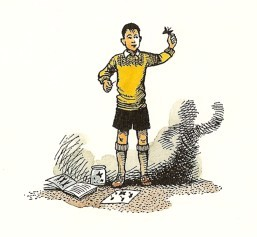
ユースチス・クラレンスは、いとこにあたるペベンシー家の四人きょだい、ピーターとスーザンとエドマンドとルーシィが、きらいでした。それでも、そのエドマンドとルーシィのきょうだいが、うちへ夏休みをすごしにくるときいた時、じつはたいへんうれしかったのです。というのは、はらの底に、いばったりいじめたりしたい気があったからでした。まともにけんかをすれば、エドマンドはおろか、ルーシィにもかなわない、なさけない子だったのですが、じぶんの家にいてあいてをお客としてむかえるだんになれば、ひどいめにあわすやりかたは、いくらでもある、と考えていました。
エドマンドとルーシィとは、ハラルドおじさんアルバータおばさんの家で夏休みをすごしたいと思ったわけではありませんでした。けれども、じつのところ、そうしないわけにいかなくなったのです。おとうさんが、その夏アメリカの大学で十六週間教えることになり、おかあさんはいままで十年のあいだゆっくりとらくをしたことがないので、それについていくことになりました。ピーターはいま試験のために猛勉強のさいちゅうで、この休みは、前に四人きょうだいが戦争中に疎開してふしぎな冒険をしたやしきに住んでいた、年とったカーク先生に教えていただくことになっていました。もし先生が今でもそのやしきに住んでいらしたら、みんなそこにひきとってくださったでしょうが、先生は、そののち、だいぶ貧しくなられて、お客ひとりしかとまれないような小さな家にうつり住んでいたのです。ところで、ピーター以外の三人全部をアメリカにつれていっては、お金がかかりすぎますので、スーザンだけがいくことになりました。はたから見て、スーザンはきれいでしたし、学校の勉強はとくいでない方で（そのほかの面では、年のわりにませていました）、おかあさんは、「この子は、ほかの子たちよりもずっと、アメリカに行って、何か学んでくるんじゃないかしら。」といいました。エドマンドとルーシィは、スーザンの運のよさをやっかみはしませんでしたが、おばさんの家で夏休みをすごさなければならないことが、やりきれませんでした。「でもさ、ぼくの方がずっとひどいぞ。」とエドマンドのいったのは、「だって、きみは、きみでひと部屋もらえるけど、ぼくはあのすごくいやなやつ、ユースチスといっしょの寝室に寝とまりしなけりゃいけないんだ。」ということでした。
さて物語は、ある午後にはじまります。その午後、エドマンドとルーシィはふたりだけでこっそりあって、大切な数分間をすごしました。もちろんふたりは、その時ナルニアの話をしたのですが、ナルニアというのは、このふたりの思い出の、秘密の国の名なのです。いったいわたしたちは、たいていだれにも、秘密の国はあるものですが、ほとんどが、想像の土地にすぎません。その点、エドマンドとルーシィの方が、わたしたちよりはるかにしあわせでした。ふたりの秘密の国は、ちゃんとあったのです。ふたりはすでに、二度もそこへいっていました。空想の遊びでもなければ、夢でもなく、ほんとうにいったのです。もちろん魔法の力でいったのですけれども、ナルニアにいく道は魔法しかありません。おまけに、いつかきっとナルニアにもどってこられるという約束、約束とはいわないまでもそれに近いものが、ふたりにはあたえられていたのです。ですから、折さえあれば、ふたりはナルニアの話ばかりしていました。
ふたりはルーシィの部屋で、ベッドのはしにこしかけながら、むこうがわの壁にかかっている絵を見ていました。この家のなかでふたりがすきになれたのは、この絵だけでした。アルバータおばさんは、この絵がきらいで（ですから二階の裏がわの小部屋にかけたのです）、といっても、結婚のおいわいに、ことわりきれない人からいただいたので、すてることもできませんでした。
それは、一せきの船の絵で──船は、ほぼ真正面にむいて走っています。そのへさきは金色にぬられ、大きく口をひらいた竜の首のような形になっています。ただ一本のマストに、四角い大きな帆がはられ、帆はあざやかな紫色です。船の両がわは、正面から見えるところ、竜の金色のつばさが終わったあとの舷側が、緑色です。船はいま、ぐん青の大波のせをつっきるところで、その波のうねりが、いくすじかのしまになり、あわになって、見る者の方へよせてきます。船は左舷にすこしかしぎながら、快風をうけて全速で走っています（ついでながら、この本をもっとつづけて読まれるつもりなら、左舷とは船首にむかって左がわ、右舷が右がわだということを頭にいれておかれる方がいいでしょう）。日の光は、左がわからさしこみ、そちらの海は一面に緑と紫です。右がわは、船のかげになって、ずっと濃い青になっています。
「どうなんだろうな？」とエドマンドがいいました。「ナルニアにいけないのに、ナルニアの船を見ていたら、ますますつらくなりゃしない？」
「でも、見てる方が、何もしないよりはよくってよ。それに、あの船、ほんとにナルニアの船にぴったりだもの。」とルーシィがいいました。
「あいかわらず、きみたち、あのごっこ遊びをやってるのか？」ドアのそとで立ちぎきしていたユースチス・クラレンスが、そういって部屋のなかへ、にやにやしながらはいってきました。去年この子がペベンシー家にいって泊まった時、うまくそのきょうだいからナルニアの話をききだして、それをたねにしてこのふたりをからかってはよろこんでいました。ユースチス・クラレンスは、もちろん、その話をでっちあげだと思っていました。ユースチス自身はおばかさんで、とてもじぶんでお話を作りあげるなんていうことができないものですから、ナルニアの話が信じられないのです。
「きみに用はないよ。」エドマンドがぶっきらぼうにいいました。
「ほら、こんな歌があるじゃないか。」とユースチスが、ふしをつけていいました。
「だれかさん、だれかさん、ごっこ遊びしましょ。
ナルニアにいって、おばかさんになりましょ。」
「あら、だるまさん、だるまさん、じゃないの？」とルーシィ。
「しらないの？ かえ歌だよ。」とユースチス。
「かえ歌だか、からかい歌だかしらないが、じゃないの、なんてきくなよ。」とエドマンドがルーシィにいいました。「きみに、きいてもらいたがってるだけなんだから。何もいわなけりゃ、きっと出ていくよ。」
たいていの男の子なら、こんなあつかいをうけたら、さっさと席をはらって立つか、かっかとおこりだすはずです。ユースチスはそのどっちでもありませんでした。にやにやしながら、いすわって、ふたたびしゃべりはじめました。
「きみたち、あの絵がすきなのか？」
「おい、ぜったいに、美術だの芸術だのの話をさせちゃ、だめだよ。」とエドマンドがあわててとめましたが、いたって正直なルーシィは、もう答えていました。「ええ、すきよ。とってもすき。」
「くだらない絵さ。」とユースチス。
「ここから出ていけば、見ないですむよ。」とエドマンド。
「きみは、どうしてこの絵がすきなの？」とユースチスがルーシィにたずねました。
「どうしてって、とにかくわたし、この船がほんとうに走ってるようなところが、すきなの。それに海だって、ほんとにこっちがぬれるみたい。波が、あがったりさがったり、ほんとにうねってるようじゃないの。」とルーシィ。
もちろん、ユースチスは、いくらでも口答えはできましたが、何もいいませんでした。そのわけは、その瞬間に、ユースチスは絵の波をながめて、ほんとうに上下にうねっているとしか見えないと、感じたからでした。ユースチスは、前に一度だけ船に乗ったことがあり（あまり遠くないところにある島へわたる連絡船だったのですが）、ひどい船よいにかかりました。今、絵の波の様子を見て、ふたたび船よいにかかりそうになりました。そして、すこし青ざめて、ほかのところをながめようとしました。するとその時、三人の子どもたちは、いっせいに口をぽかんとあけて、目をみはりました。
そのとき見たできごとを、こうして字にして読んでは、とても信じられないかもしれませんが、じっさいにおこったありさまを目にしても信じがたいくらいでした。絵のなかのものが、動いていたのです。といっても、映画のようではありません。映画にしては、その色が、あまりになまなましくて、あざやかで、そとのけしきそっくりすぎました。船のへさきが波間にしずんだかと思うと、大きなしぶきがあがりました。すると今度は、その波が船のうしろに高まって、船のともと甲板が、はじめて目にうつりました。それからつぎの波がおそってくると、うしろ側はみえなくなって、ふたたびへさきがぐっとあがりました。と見た瞬間に、ベッドのエドマンドのそばにおいてあった一冊の宿題帳がひらひらとめくれて、ひょいと立って、空中へまって、エドマンドのうしろの壁の方へただよっていきました。ルーシィは、風の強い日にあるように、髪の毛がさっと顔にかぶさって、みだれとぶのをおぼえました。もっともその日は風の強い日でした。けれどもその風は、絵の中からみんなの方へふいてきたのです。そしてだしぬけに、風とともに、大きな音がしてきました。波のわき立つ音、船におそいかかる音、くだける音、そしてそれらにたちまさっていつもきこえるのは高い風の音と、潮さいのひびきでした。けれども、ルーシィをこれは夢じゃないとはっきり思わせたものは、あのにおい、荒あらしい潮のかおりでした。
「やめてくれ！」ユースチスの声がしました。おそれとかんしゃくのあまり、かん高い金切り声でした。「きみたちがふざけて、何かインチキなことをやってるんだろ？やめろ。アルバータにいいつけて──うっ！」
ふたりの方は、冒険にはユースチスよりなれっこになっていましたが、ユースチス・クラレンスが「うっ！」といったと同じ時に、ふたりとも「うっ！」といってしまいました。それは、大きなつめたい、塩からい波しぶきが、額縁の中からとび出してきて、みんながそれをあびて、息がつまったばかりか、したたかぬれてしまったからでした。
「あんなくだらないもの、たたきこわしてやる。」とユースチスがどなりました。そしてその時、いくつかのことが同時におこりました。ユースチスは、絵の方に突進しました。魔法のことをいくらか知っていたエドマンドは、ユースチスに、気をつけろ、ばかなまねをするな、といいながら、そのあとを追いました。ルーシィは、もう一方からユースチスをつかんで、ひきずられました。そしてこの時、三人がどんどん小さくなったのか、絵がぐんぐん大きくなったのか、したのです。ユースチスは、絵を壁からひきおろそうとして、とびあがり、じぶんが額縁の上にのっかっていることに気がつきました。目の前に、絵にはめたガラスがなくて、ほんものの海がありました。風と波が、岩にぶつかるように額縁におしよせてきました。ユースチスは、きもをつぶし、ならんでとびあがってきたほかのふたりにしがみつきました。ちょっとのあいだ、もみあったり、どなったりして、どうやらつりあいがとれたなと思った瞬間、ひとうねり青い大波が、三人にうちかかって、その足もとをさらい、海へまきこんでしまいました。ユースチスのあげたいまわのきわの叫び声も、海水が口にはいったとたんに、ぷつりととぎれてしまいました。
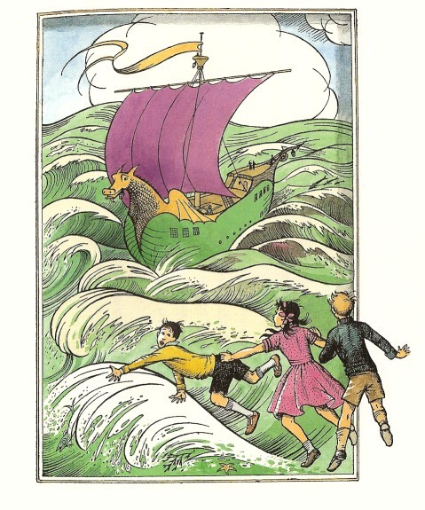
ルーシィは、去年の夏学校の水泳訓練でねっしんに受けたことが役にたち、運命にお礼をいいたい気もちでした。たしかに、ルーシィは、もっとゆっくり抜き手をきったら、もっとうまく泳げたにちがいありませんし、ただの絵だった時に見たよりも、海の水はずっとずっとつめたかったのです。でもルーシィは、着物を着たままふかい水の中におちた場合しなければならないように、頭をあげて、くつをけりすてました。その上ルーシィは、口をとじ、目をあけておきました。子どもたちは、まだ船のすぐそばにいました。ルーシィは、目の前にそびえる緑の船腹を見、甲板からこちらを見ている船の人たちをみとめました。その時、いかにもやりそうなことでしたが、ユースチスが、必死になってルーシィにしがみつき、ふたりもろとも、しずんでいきました。
そのふたりが、もう一度浮きあがってきた時に、ルーシィは、船の上から白い人のすがたがとびこむところを見かけました。おりからエドマンドがルーシィのそばにきて泳ぎながら、何かどなっているユースチスの両腕をつかまえていました。すると、どこかで見たような顔の人が反対がわからルーシィのからだに手をかけてきました。船の上からは、かずかずの叫び声がきこえ、舷側の波よけごしに、たくさんの顔がつきだし、ロープがなげられました。エドマンドとその知らない人が、ルーシィのからだにロープをまいてゆわきました。それからさき、ずいぶん長く手まどるように思われて、ルーシィは顔を青くし、歯をカチカチさせて、待ちました。じっさいには、それほどぐずぐずしたわけではないのです。それは、ルーシィが船腹にぶつけられないで船の上にひきあげられるようになる時を、船の人たちが待っていたからでした。でも人々がどれほど力をつくしてうまくひきあげても、ルーシィがからだから水をしたたらせて、ふるえながら甲板に立った時、やっぱりひざ頭をすりむいていました。ルーシィのあとにはエドマンド、つづいて、みじめなユースチスがひきあげられました。そしてさいごに、さっきの知らない人があがってきましたが、それは、ルーシィよりいくつか年上の、金髪の男の子だったのです。
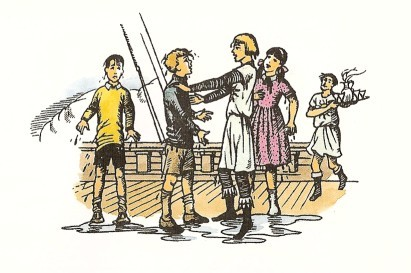
「あ、カ、カスピアン！」ルーシィは、息ができるようになるとすぐに、あえぎながらいいました。たしかに、男の子は、カスピアンでした。この前ルーシィたちがナルニアにいって、王座につく手助けをしてあげた、その少年王でした。すぐさまエドマンドも、カスピアンだとわかりました。三人はとてもよろこんで、握手をしたり、背中をたたきあったりしました。
「だが、あなたがたの友だちは、どなたです？」とまもなく、カスピアンは、上きげんでにこにこしながら、ユースチスの方をふりむきました。けれどもユースチスは、同じ年ごろの子が、ずぶぬれになってわんわん泣きわめくていどを、はるかに上まわる泣き声をたて、「帰して。帰してよう。いやだよう！」と叫びつづけるばかりでした。
「帰してくれって？ でも、どこへです？」とカスピアンがいいました。
ユースチスは、船の舷側に走りました。たぶん、海のそとがわにかかっている額縁が見えるか、ルーシィの寝室がのぞけるかと、思ったのでしょう。だがユースチスの見たものは、水あわを浮かべた青い波のうねうねと、それよりすこしあわい青空の空とが、水平線のかなたまで、さえぎるものなくひろがっているありさまでした。ユースチスががっかりしても、それをせめるわけにいきますまい。ユースチスは、さっそく気分が悪くなりました。
「おい！ ライネルフ」とカスピアンが船員のひとりをよびました。「ここの陛下がたに、薬味をきかせたブドウ酒をさしあげよ。みなさん、どっぷりつかった後では、からだをあたためるものがいりますよ。」カスピアンが、エドマンドとルーシィを陛下とよんだのは、このふたりが、ピーターとスーザンとともに、カスピアンが王となるずっと前に、ナルニアの王、女王となっていたことがあったからです。ナルニアの時間は、わたしたちの時間のすぎかたとちがっています。ナルニアで百年くらしても、わたしたちの住むこの世へもどってくれば、出かけた日のおなじ時間にすぎません。さらにそれからこの世で一週間すごしてからナルニアへもどってみると、ナルニアでは千年たってしまったか、ただの一日か、ひょっとすると一分もたっていないか、その時によっていろいろちがいます。ナルニアへ帰ってみなければ、さっぱりわかりません。でから、ペベンシー家の子どもたちがこの前二度めにナルニアにもどったのはイギリスでいいつたえる、アーサー王がいまのイギリスにもどってきたようなもので、何千年ものちでした。ですから時間がたちすぎると、うまくありません。早いほどいいわけですね。
ライネルフは、びんごとあたためた薬味いりのブドウ酒と銀のコップ四個とをもってもどりました。ちょうどほしがっていたものでした。ルーシィとエドマンドはブドウ酒をすすって爪さきまでぬくもりがゆきわたったと感じました。けれどもユースチスは、顔をしかめて、ぶーとふき出し、ぺっぺとはきちらして、また気もちを悪くし、また泣きだして、「くだものいりビタミン配合活力食品」はないか、あったらそれを蒸留水で料理してくれないかなどとだだをこね、何よりも、今度ついたところに上陸させろと、いいはりました。
「これはゆかいなおつれを連れてきてくれましたね。」とカスピアンが、くすくす笑いながら、エドマンドに小声でいいました。けれども、それ以上話せないほど、ユースチスが、いきなりわめきだしました。
「ああ！ うわぁ！ こいつは、いったいなんだい？連れてってくれ、おっかないよ。」
今度ばかりはユースチスがぎょっとしたわけが、ほんとうにありました。まったくたいへんにふしぎなものが、船尾楼の船室から出てきて、みんなの方へゆっくりと近づいて来たのです。それは、みなさんがネズミとおっしゃるでしょう。まったくネズミにちがいありません。けれども、うしろ足で立って、六十センチもあろうという大ネズミでした。ひとすじの金のベルトを頭にまわし、片方は耳の下、もう片方は耳の上と、ななめにしめて、そこに長いぼたん色の羽根かざりを一本さしていました（このネズミのの毛の色が、黒に近い濃い色でしたから、羽根のとりあわせは、まことにはでで、目をうばうものでした）。その左前足の足指は、そのしっぽほどの長さのある剣のつかにかかっていました。ゆれる甲板をふむ足どりは、堂々としてあぶなげなく、そのしぐさは気品にみちて礼儀正しいものでした。ルーシィとエドマンドには、すぐにわかりました。リーピチープです。あの、ナルニアのものいうけものたちきっての勇士、二度めのベルナの戦いで消えることのないほまれをかちえた者なのです。ルーシィは、以前にもよくそう思ったように、リーピチープを両手にすくいいれて、ぎゅっとだきしめてやりたくしてしかたがありませんでした。けれども、とてもできない望みだということを、ルーシィはよく心得ていました。そんなことは、リーピチープの気を悪くするにきまっていましたから。それでルーシィは、リーピチープに話しかけようと、片ひざをついて、かがみました。
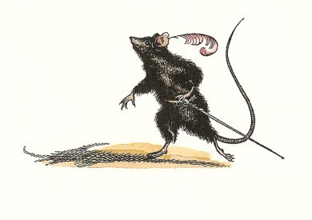
リーピチープは、左足を前に、右足を一歩ひいて、おじぎをし、ルーシィの手にキスして、身をおこすと、口ひげをひねって、かん高い笛の音のような声で、いいました。
「女王陛下に対して、うやうやしく敬意を表します。またエドマンド王に対しても、おなじく。」（と、ここでふたたびおじぎをしました）。「両陛下をむかえて、このはえある冒険に、欠けるものなしと存じます。」
「うえー、あっちへやってくれ。」とユースチスが泣き声をたてました。「ネズミはきらいだよお。おまけに、芸をしこまれたけものなんて、やりきれないや。そんなものは、ばかばかしいし、げびてるし、お涙ちょうだいだもの。」
リーピチープは、ユースチスをじっと見つめてから、ルーシィにいいました。「このばかに無作法なかたは、陛下がたが目をかけてつかわされるものと心得てよろしいか？さもなくば──」
この時ルーシィとエドマンドが、いっしょに、くしゃみをしました。
「あなたがたを、ぬれたまま、こんなところに立たせておいて、なんとおろかなことだったでしょう。」とカスピアンがいいました。「下へいって、着がえをしてください。ルーシィ、あなたには、もちろんわたしの船室をつかってもらいましょう。ただ、ざんねんながら、船には女のかたの着物がありませんよ。わたしのをどれか着てくださるよりしかたがない。さ、リーピチープ、失礼のないよう、おつれ申せ。」
「貴きご婦人のおんためとあらば、騎士の面目をかけた質問も、さしひかえねばならぬ。すくなくともひと時はな。」とリーピチープはいって、ユースチスをはったと見つめました。けれどもカスピアンが、一同をうながし、いく分かするうちに、ルーシィは、ともの船室のドアをくぐっていました。その部屋をひと目見て、ルーシィは大すきになりました。三つの角窓があって、船尾にさかまく青い波をのぞくことができ、テーブルの三方に低いすわり台がクッションをのせてめぐらされ、天井には銀のつりランプがゆれ（その申し分のないりっぱな細工から、ルーシィはすぐに小人の作ったものとわかりました）、ドアの上の欄間壁には、ライオンのアスランをあらわした金の模様がついていました。こうしたすべてのありさまを、ルーシィはさっとひと目で見てとりました。というのは、すぐにカスピアンが右舷よりのドアをあけて、こういったからです。「ルーシィ、ここがあなたの部屋ですよ。ちょっとじぶんの着る服をもち出しますからね。」そして戸だなをかきまわしながら、話しつづけました。「そしたらすぐ出ていきますから、どうぞ服を着かえてください。あなたのぬれたものは、ドアのそとへ出しておいてください。まかない所でかわかしておかせますよ。」
ルーシィは、何週間もカスピアンの船室にすごしてきたかのように、おちつきました。船のゆれるのも気になりません。それというのも、そのむかしナルニアの女王だった時、いく度もこういう船に乗ったものだからです。船室はとても小さくこそあれ、絵をかいた板をはりめぐらしてあかるく（鳥やけものや赤い竜やブドウの木の絵です）、しみ一つないきれいさです。カスピアンの服は、ルーシィに大きすぎましたが、どうやらからだにあわせました。カスピアンのくつもサンダルも、作業長ぐつも、みなとても大きすぎますから、いっそ船のなかでは、はだしでとおすつもりでした。すっかり服をつけてから、窓のそとの流れすぎてゆく波をながめ、大きなと息を一つつきました。ルーシィは、これからはじまるすばらしい冒険の時に、来あわせたことを、しみじみと感じとったのです。
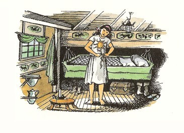
２ 朝びらき丸に乗って
「やあ、おいでなさい、ルーシィ。」とカスピアンがいいました。「ちょうど、あなたをおまちしていたんです。こちらは、私の船長、ドリニアン卿です。」
黒い髪の人が、片ひざをついて、ルーシィの手にキスしました。その場にいる者は、ほかにリーピチープとエドマンドだけでした。
「ユースチスは、どこ？」とルーシィ。
「ベッドだ。」とエドマンド。「何をしてやっても、だめだと思う。こうすればいいんだろうと思ってしてやっても、ますますわるくするだけだよ。」
「その間に、話しましょう。」とカスピアン。
「やあ、ほんとだ。そうしましょう。」とエドマンド。「ではまず、時間のことですけどね。ぼくたちが、あなたの即位式のすぐ前にナルニアをはなれてから、ぼくたちの世界時間では、一年たちます。ナルニアでは、どのくらいたちますか？」
「ちょうど、三年です」とカスピアン。
「うまくいってますか？」とエドマンド。
「万事おさまっていなければ、こうしてわたしが国をはなれて、海にでているはすがありませんよ。」とカスピアン王がこたえました。「これ以上よくやれません。テルマール人たちも小人も、ものいうけものもフォーンたちも、みな仲よくなって、もめごとがありません。それに、国ざかいにいるやっかいな巨人族は、去年の夏にだいぶてひどくやっつけておきましたから、今ではみつぎ物をおさめに来ます。その上わたしは、わたしのいない間の摂政として、この上もないすぐれた人物を残してきましたよ。ほら、小人のトランプキンです。ご存じでしょ？」
「まあ、トランプキンさん！」とルーシィ。「もちろんよ。きっと、それ以上うまい人えらびはできませんわ。」
「忠実なること、アナグマのごとく、勇武なること──ええと、ネズミのごとき人です。」とドリニアンがいいました。ドリニアンは、勇ましいのは「ライオンのよう」といおうとしたところでしたが、その時じぶんにむけたやけつくようなリーピチープの目に気がついたのでした。
「それで、どこへむかっているのです？」とエドマンドがたずねました。
カスピアンがこたえました。「ええと、それにはすこし長い話があるんです。あなたがたもおぼえておいででしょうが、わたしが小さかったころ、王位をうばったおじのミラースが、父の七人の友だち（この人たちは、わたしの味方になってくれたものと思われます）を、離れ島諸島のさきの、まだ人のいない東の海を探検してこいといって、おいはらってしまったことがあるのです。」
「知ってます。それで、誰ひとり帰ってきませんでしたね。」とルーシィ。
「そのとおりです。それで、わたしの即位式のその日、アスランにも賛成してもらって、わたしは、いったんナルニアに平和をきずきあげたあかつきは、むこう一年と一日、じぶんで東の海へ船出して、父の友だちの七人を見つけよう、もし死んでいたらそのわけをしらべて、できるかぎり、仇をうってあげようと、かたく誓いをたてたのです。七人の名まえは──レビリアン卿、ベルン卿、アルゴス卿、マブラモーン卿、オクテシアン卿、レスチマール卿、それから、ええともうひとり、えらくおぼえにくい名の人だ。」
「ループ卿です。陛下。」とドリニアン。
「そうだ、ループ、ループ卿だった。」とカスピアン。「これが、わたしの本心です。ですがこのリーピチープは、もっと大きなことを考えていますよ。」みんなの目がネズミにむけられました。
「なりは小さくとも、意気高しです。」とネズミがいいました。「どうして、この世の東のはてに、いけないわけがありましょう？そこへいったら、何が見つかるでしょう？わたしは、アスランの本国が見つかると思います。あの偉大なライオンがわたしたちのところにくるのは、いつも海のかなた、東からくるではありませんか？」
「たしかに、それは一つのねらいだな。」とエドマンドが、心をうたれた調子でいいました。
「でも、アスランの国は、そんなところにあるでしょうか？あのね、船でいけるようなところかしら？」とルーシィ。
「それは存じません、ひめ君。」とリーピチープ。「でも、こういうものがございます。わたしがまだゆりかごにおりましたところ、木のおとめドリアードが、つぎのような歌を、くりかえしてきかせてくれました。
空と海おちあうところ、
波かぐわしくなるところ、
夢うたがうな、リーピチープ、
もとめるものを見つけるは、
ひんがしのいやはての国。
どんないみがあるのか、存じませんが、この歌の魅力は、生涯むねにきざまれております。」
しばらく話がとだえたあとで、ルーシィがたずねました。「カスピアン、いまはどこでしょう？」
「それは、わたしよりも船長が、うまくこたえてくれますよ。」とカスピアンがいいますと、ドリニアン船長が海図をとり出して、それをテーブルの上にひろげました。
「ここが、船の位置です。」とドリニアンは地図の上の一点に指を立てていいました。「今日の昼には、ここでした。わたしたちは、ケア・パラベルから順風をうけて、ガルマ島のすこし北よりに来て、そのあくる日に、その島につきました。そこで一週間とまりましたが、それはガルマ公が陛下のために、一大騎馬戦をひらき、陛下みずから、あまたの騎士を馬からつき落として──」
「わたしの方もなん回か落とされたんだ、ドリニアン。その時のうち身きずが、まだあるよ。」とカスピアンが口をだしました。
「──というわけで、たくさんの騎士が馬からつき落とされましたが、」とドリニアンがにやにや笑いながら、もう一度くりかえしていいました。「そのあと、公は陛下に、公のむすめごと結婚していただきたいとねがわれたように、ききおよびますが、いっこうにそのことはまとまらず──」
「やぶにらみで、そばかすだらけだった。」とカスピアン。
「まあ、かわいそうな方。」とルーシィ。
「かくてわたしたちは、ガルマ島をはなれ、たっぷり二日間凪にあって、この船をこぎ進めなければなりませんでしたが、つぎにはまた風がでて、ガルマを出てから四日めに、ようやくテレビンシア島につきました。が、その島の王は、テレビンシアに伝染病がでているので上陸するなといってよこしました。わたしたちは岬をまわって、町からはなれた小さな入り江にはいって水をつめこみました。そこでわたしたちは三日間骨休めしてから、南東の風をつかまえて七子島諸島にむかいました。それから三日目に、海賊船が追いすがってきて（帆などの様子でみるとテレビンシア人でした）、わたしたちがよく武装してあるのを見ると、両側からぱらぱらと矢を射かけただけで、遠ざかっていきました──」
「あの時わたしどもは、あの海賊船を追いかけて、船に乗りうつり、やつばらをひとり残さず首つりの刑にしてやるべきでしたぞ。」とリーピチープがいいました。
「──で、さらに五日たって、わたしたちはミュル島を見かけました。ご存じのようにこれは七子島の西はずれの島です。そこでわたしたちは海峡をこいで通り、ブレン島の赤間が港に日ぐれごろはいりました。この港では、まことにすてきなごちそうをいただき、食物も水も存分につみました。六日前に赤間が港をはなれ、この上ない快速力で走りましたから、あさってあたりには離れ島諸島が見えるだろうと考えているのです。合わせてみますと、わたしたちはほとんど三十日間海上におり、ナルニアから四百リーグ(１)以上すすんで来たことになります。」
「では、離れ島諸島のあとは？」とルーシィ。
「まだだれも知りません、陛下。」とドリニアン。「あの島の者たちが知っていて教えてくれないかぎりは、そのさきがわかりません。」
「ぼくたちのころは、あの島の者たちも知らなかったな。」とエドマンド。
「それでは、離れ島諸島をすぎてから、ほんとうの冒険がはじまるのですね。」とリーピチープ。
そこでカスピアンは、ごはんの前にこの船のあちこちをごらんになったらよろしかろうといってくれましたが、ルーシィは、良心にせめられました。「わたし、これからユースチスを見舞いにいかなけりゃならないわ。船よいって、ほんとにつらいんですもの。むかしもっていたわたしの薬さえあったら、すぐなおしてあげられるのに。」とルーシィ。
「それなら、おもちですとも。」とカスピアン。「そのことをすっかり忘れてました。じつは、あなたがあれを残していかれたあとは、わたしは王家の宝と考えるべきだと思ったものですから、もってきたのです。船よいのようなつまらないものにでも、お使いになるのでしたら、どうぞ！」
「ほんのひとたらしで、いいんです。」
カスピアンは、腰かけの下の戸だなをあけて、ルーシィがよくおぼえている、あのきれいなダイヤの小びんを出しました。「つつしんでおかえしいたします、女王陛下。」とカスピアンがいいました。そこでみんなは船室を出て、日のあたるところにいきました。
甲板には、大きくて長い出入り口のあげぶた（ハッチ）が二つ、中央マスト前後にあって、天気のよい時にはいつもあけて、船のなかがわのあかりとり、空気入れにしてありました。カスピアンは、みんなを案内して、後部ハッチのはしごをおりました。はいってみると、そこはこぎ手用の長い腰かけが列になって、はしからはしまで並んでいて、かいのさしこみ穴から光がはいり、天井にちらちらしている大部屋でした。もちろんカスピアンの船は、どれいたちをつないでかいでこがせるガレー船のような、おそろしいものではありません。かいは、風がとだえた時とか、港に出はいりする時に使うだけで、船の全員がしばしばこぎ手になるのです（もっとも、足の短すぎるリーピチープは、べつです）。両がわの腰かけの下はあいていて、こぎ手の足がきゅうくつにならないようになっていますが、その部屋のまんなかは、たてにずっとうろぬいてあって、一種のたて穴になり、この船の土台である竜骨までおりていけます。そして、そこまでのところに、あらゆる荷物、つまり、粉ぶくろ、飲み水のたる、ブドウ酒だる、肉の大だる、ミツつぼ、そのほかさまざまの皮ぶくろに、ブドウ酒、リンゴ、クルミの類、チーズ、ビスケット、カブラ類、それにブタのわき肉ベーコンが、つまっています。また天井には（つまり甲板の裏がわにあたります）、ハムやタマネギを包みにしてぶらさげてあり、また当直あけの船員たちが、ハンモックで寝ていました。カスピアンは、腰かけを一歩一歩つたわって、みんなをともの方へつれていきました。カスピアンにとって一歩の幅でも、ルーシィにとっては半とび、リーピチープとなると、大とびでついていかなければなりません。このようにして、つきあたりのしきりに、ドアのついているところに来ました。カスピアンがそのドアをあけて、一つの船室にみんなを入れましたが、その部屋は、船尾楼の甲板上の船室がいくつかある部分の下にあたり、ともをふさいでできていました。もちろん、あまりりっぱな部屋ではありません。天井は低いし、両がわは下の方ほどすそつぼまりで、窓にはあついガラスがはめてありますが、ここが水のなかになるのであけられません。じっさい、いまその時も、船がゆれるたびに、窓は日の光で金色になったり、海水でうすぐらい緑色になったりしました。
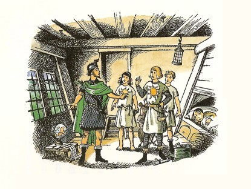
「エドマンド、あなたとわたしが、ここに寝とまりしなければなりません。」とカスピアン。
「あの親せきのかたに、ここの寝台をゆずり、わたしたちはハンモックをつりましょう。」
「陛下、お願いですから──」とドリニアン。
「いやいや、船長。」とカスピアン。「それはもう、論じつくしたことだよ。きみとラインスとは（ラインスは、副船長の航海士です）、船を動かしていて、わたしたちがあれこれ歌をうたったり、話に興じたりしているあいだも、たえず気をくばって、夜のめも寝ずに働くこともある。だからきみたちが、上の左舷船室をつかわなくちゃいけないよ。エドマンド王とわたしは、下のこの部屋でとても気もちよくすごせるさ。だが、お客人は、どうかな？」
ユースチスはまっ青になって、顔をしかめ、嵐がおさまりそうな様子はないか、とたずねました。
カスピアンは、「嵐とは？」とききかえし、ドリニアンは、思わず笑いだしてしまいました。「嵐ですと！お若いかた。ねがってもない上天気ですぞ。」と船長はどなりました。
ユースチスはいらだって、「あれは、だれだ？おっぱらってくれよ。あの声が、頭にひびくよお。」
「ユースチス、あんたの気分をなおすものを、もってきたわ。」とルーシィ。
「ああ、出てってくれよ。ほっといてくれよ。」とユースチスがうなりました。けれども、小びんからひとしずく飲みますと、ユースチスは口では、いやなものだといっていますのに（ルーシィが小びんの口をあけたとたんに、船室にはうっとりするようなよいかおりが、みちました）、飲んでほんのまたたくまに、顔色がよみがえってきたのは、まちがいありませんでした。そして、じぶんでもよくなったしょうこには、それまで嵐のことや頭のいたいことでこぼしていたのに、けろりとして、上陸させろとねだりはじめ、最初の港へつきしだい、イギリス領事へ、この船の者たちの「処分を申し立てて」やると息まきました。けれどもリーピチープが、いったい処分とはどういうことなのか、申し立てるとはどういうふうにするのかとききますと（リーピチープは、一騎打ちの決闘の手つづきをする新しいやりかただと思ったのです）、ユースチスはただ、「そんなことも知らないのか！」とくりかえすばかりでした。結局、一同はユースチスに、とにかく船は、もよりの陸地へできるかぎりの早さで走っているさいちゅうで、なんとしてもハラルドおじさんの住んでいるケンブリッジへユースチスを送り帰すことは、月へつれてゆくよりもできない相談だ、という点を、さとらせることができました。そうなってから、ユースチスは、じぶんに出してくれた新しい着物を着て、甲板に出ることを、しぶしぶながら承知しました。
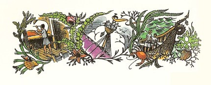
みんなはだいたい見てしまったのですけれども、カスピアンは、船じゅうをくまなく案内しました。みんなは船首楼の上にのぼり、金をぬった竜頭の首のうちがわにある小さな足場の上に海上の見張り番が立って、竜のひらいた口のなかから外を見まもっているところを見ました。船首楼のまんなかには、まかない所（つまり船の台所）、水夫長に船大工に料理番に弓矢隊長の部屋べやがあります。もしみなさんが船首に台所があるのはおかしいと思い、台所の煙突から出る煙が流れて船全体にかかると考えたら、それはみなさんが、いつも向かい風になる汽船のことを考えるせいです。帆船では風がうしろからふくので、においのあるものは、できるだけ前の方へおかなければなりません。一同は、マストの上の見張り台につれていかれました。そこは、はじめ、ずいぶんあちこちへゆれて、下を見ると、甲板がはるか小さく遠くに見えるので、みんなあわててしまいました。ここから落ちたら、船の上へ落ちるとはかぎらないな、と思ったからでした。それから船尾楼へいきますと、ラインスが、もうひとりの人とかじをとっていました。かじの後には、船体の竜の尾が金色にぬられてまきあがっていて、尾のなかに一つの腰かけがつけてありました。船の名まえは、「朝びらき丸」というのです。この船は、いまのわたしたちの世界の船にくらべれば、ずいぶん小さいものですし、むかしルーシィやエドマンドがピーターを一の王にいただいてナルニアをおさめていたころ、この国にあった漁船や三角帆の大型こぎ船や戦船やガレー船にくらべてさえも小さいものでした。というのは、カスピアンの先祖がこの国をおさめたころから、航海がとだえてしまったためなのです。そして、王位をうばったおじのミラースが、七人の貴族を海外につかわした時には、ガルマ島国の船を買い、ガルマ島人の船乗りをやとわなければなりませんでした。けれどもいまや、カスピアンが、ふたたび海の民になれとナルニアの人々を教えはじめたばかりのところで、カスピアンの作らせた船のうちで、この朝びらき丸がいちばんよい船だったのです。この船は小さいものですから、マストから前の方は、ハッチとそのさきの、片がわがボート、片がわがメンドリ小屋になっている（ここのメンドリのえさは、ルーシィの役です）ところまでのあいだに、ほとんど甲板がありません。それでもこの船は、こういう種類のなかでは船乗り仲間が、王女さまとよぶくらいに、とびきり美しく、船体の形もみごとなら、その色どりもすぐれ、どの柱一つ、ロープ一本、くさび一個でもよくできていました。が、もちろんユースチスは、何を見てもうれしがらず、大洋がよいの汽船だのモーターボートだの飛行機だの潜水艦だののことばかりまくしたてて（「そういうもののことならなんでも知ってるみたいだな。」とエドマンドがつぶやきました）、それとちがってきょうだいの方は、朝びらき丸をすっかり気に入ってしまいました。さて、船尾の船室へごはんを食べにいこうとして、一同は、西空が一面に、入り日をうけてとっぷりとあかね色にそまっているのを見ました。そして船体のふるえを感じ、くちびるに潮気を味わいました。この世の東はずれにある、まだ知らない土地のことを考えて、ルーシィはつくづく、ことばにつくせないほど幸せだと、思いました。
ユースチスの思ったことは、かれ自身のことばでいってもらうのが、いちばんいいでしょう。というのは、あくる朝、かわいたもとの着物を着た時に、ユースチスは黒い小型の手帳と鉛筆をすぐさまとりだして、日記をつけはじめたのです。ユースチスはいつもこの手帳を肌身はなさずもっていて、試験の点を記録していたのです。ユースチスは、どの学科も大してすきではありませんでしたが、点だけはとても気になるたちでした。それで、「ぼくの点はこうだったけど、きみは何点だった？」などと、人にきいてまわったりすることさえありました。しかし朝びらき丸ではとても点なんてもらえそうもありませんから、こんどは日記をつけることにしたのです。その最初は、こんなぐあいでした。
八月七日 夢でないとすれば、このひどい船に、二十四時間いることになる。その間、おそろしい嵐があれくるっていた（ぼくが船よいにかからないのが、さいわい）。山のような大波が、たえずかぶさり、この船がいく度も沈みそうになるのを見る。ほかの者たちはみな、知らんふり。強がりか。ハラルドがいうように、いっぱんの人がよくおちいる真実に目をふさぐ、あの臆病さからか。こんなばかばかしい小さな船に乗って海に乗りだすなんて、まったくどうかしている。救命ボートよりも大して大きくない。そのうえ、船内の古くさいこと。ちゃんとしたサロンはなし、無線も、浴室も、デッキチェアもない。きのうの夕がたは、船内いたるところ、ひっぱりまわされ、カスピアンがじぶんのおかしなおもちゃのような小船をクイン・メリー号かのようにひろうするのをきいて、片腹痛かった。ぼくは、ほんとうの船というものはどんなものか、かれにきかしてやったが、かれはおろかすぎる。エとルは、いうまでもなく、ぼくにかせいしなかった。思うに、ルのような子どもには、船のあぶないことがわからないのだろうし、エは、この船の連中とおなじに、カにとりいっているんだ。カのことを、みんな王とよぶ。ぼくは共和党だといったら、カは、それはなんだ、とたずねるしまつだ。王がいなくて、国民が平等によりあってできる国を知らないとは！カは、まるで何も知らないようだ。いうまでもなく、ぼくは、いちばん悪い船室にいれられている。まったく牢屋だ。ルーシィはひとりで、甲板上にまる一部屋与えられている。ほかとくらべて、とびきりの部屋だ。カは、女の子だからだという。こういう種類のことは、女の子をかえってだめにしてしまうことだというアルバータの意見を教えこもうとしたが、カがおろかすぎるので、むだ。それでも、この上あんな穴にいると、ぼくが病気になることが、カにはわかるかもしれない。エは、カがルに部屋をゆずって、ぼくたちといっしょになったのだから、部屋のことでぐすぐすいってはいけないという。カがいっしょなので、なおさらこんで、ふゆかいなのが、わからないのか。それに、ネズミのようなやつがいて、だれにでもすごくなまいきなことをいうのを、書きおとすところだった。ほかのものたちはそんなやつがすきだから、がまんできようが、やつがぼくをためしてみようものなら、さっそく、やつのしっぽをねじってやるつもり。食物も、またひどいものだ。
ユースチスとリーピチープとのもめごとは、ほかの人たちの心配していたよりも早くやってきました。つぎの日の夕ごはんの前に、ほかの人たちが、もうテーブルについてごちそうを待っていますと（海に出ますと、もうれつにおなかがすくものです）、ユースチスがかけこんできて、手をよじりながらどなりたてました。
「あのちびのけだものが、ぼくを殺すところだった。あいつをとりおさえていただきたい。カスピアン、ぼくは、あなたをうったえたい。あいつを殺してくれと、あなたに命じたいくらいなんだ。」
と同時に、リーピチープがあらわれました。その剣はぬき身のまま、口ひげは、ぴりぴりといかりでふるえていましたが、あいかわらずつつしみぶかい様子でした。
「みなさま、とくに女王陛下に、失礼をおわびいたします。」とリーピチープ。「あの者がこちらににげこむと知っておりましたら、あの者をこらしめるために、もっとふさわしい時間まで待ちましたものを。」
「いったい、何事がもちあがったんだ？」とエドマンドがたずねました。
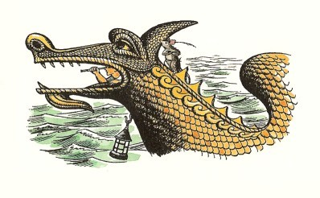
じっさいの事件は、こういうことでした。船が早く走っていると感じたことのないリーピチープは、船首の竜の頭のすぐわきにある波よけのてっぺんの木組の上にすわりこんで、東の水平線をながめながら、むかしドリアードがじぶんのためにつくってくれた歌を、そのかわいいチューチュー声でそっと口ずさむのが、すきでした。船がどんなにゆれようと、何にもつかまらずに、まことにらくにつりあいをとっていますが、それはきっと、その長いしっぽが、波よけの内がわで甲板の方にたれさがって、つりあいをうまくとっているせいでしょう。船の人たちはみな、ネズミのこのならわしをよく知っていて、船乗りたちは、このことをよろこんでいました。見張り番に立つ者には、話をする相手ができたからです。どうしてユースチスが（まだあの船上の歩きかたができないのに）、船首楼まで、すべったりころんだりよろけたりしてたどりついたものか、わかりませんが、陸地が見たかったのか、ひょっとすると、まかない所をぶらついて、何かかっぱらうつもりだったのでしょう。とにかく、ユースチスがその長いしっぽのたれさがっているのを見たとたんに──きっと、どこかそそのかすところがあったのですね──しっぽをつかんで、リーピチープを一、二度上下にふりまわし、それからにげだして笑ってやれば、ゆかいだろうと思ったのです。はじめのうち、この思いつきは、ばかにうまくいきそうでした。そのネズミは、大きなネコよりも大して重くはありませんでした。ユースチスは、ネズミをひょいとその足場からひきはずしました。小さな手足をひろげ、口をあけたままのネズミを見て、ユースチスは、なんてざまだろうと思いました。けれどもいたずら者にとって運の悪いことに、リーピチープは、百戦の勇士で、一瞬のあいだも、あわてふためくことがなかったのです。その腕前もにぶりません。しっぽをもって空中をふりまわされながら、剣をひきぬくのは、らくではありませんが、それをやってのけました。とたんにユースチスは、手にとびあがるほどいたいつきを二つくらって、思わずしっぽを放しました。するとつぎには、甲板でまりをついたように、ネズミがぴょんと立ちあがって、ユースチスにむかったと思うと、おなかのさき一、二センチのところに、やきぐしのように、おそろしく長く、ぴかぴかした、とがったものが、ゆらゆらとゆれていました（ナルニアではネズミにとって、ベルトの下でも反則になりません。ネズミの剣がもっと上までとどくとは考えられませんから）。
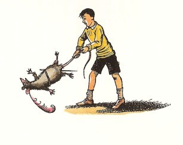
「やめてくれ。」ユースチスがせきこんでしゃべりました。「あっちへいけ。そんなもの、ひっこめろ。あぶないじゃないか。やめろ、っていうんだ。カスピアンにいいつけるからな。その口をしめあげて、しばりつけてやる。」
「そなたの剣を、なぜぬかないのか？ こしぬけめ！」ネズミがキーキー声でいいました。「剣をぬいて、戦え、さもなくば、剣の平で、あざになるまでうちのめしてやる。」
「剣なんか、もってないぞ。」とユースチス。「ぼくは、平和主義者なんだ。戦うなんて、もってのほかだ。」
「では、」とリーピチープは、しばらく剣をひいて、まことにきびしい口調で、びしびしといいました。「わたしに心ゆくまで戦わせないつもりと、考えてもよいな？」
「なんのことか、わからないや。」ユースチスはやられた手をさすりながら、「ふざけてやったことがわからないんなら、きみのことなんか、しらないぞ。」
「では、これをくれてやる。」とリーピチープ。「それ、これは行儀をよくするため──これは騎士をうやまうように──これはネズミを大事に──これはネズミのしっぽを、な──」と、ひとことばごとに、剣の平でユースチスをぴしりぴしりとたたきました。剣は、小人がつくったうすい上等のはがねでできていて、カバの枝でつくったむちのようにしなやかで、よくききます。ユースチスは（もちろん）体罰をくわえない学校にいっていましたから、このききめは、すごいものでした。そのために、ユースチスが甲板歩きができないくせに、一分たらずで船尾楼をとび出して、甲板じゅうをつきぬけ、船室のドアをおし入ってきたのです──まだかっかしているリーピチープに追われて。まったくユースチスにとっては、追っかける者がかっかとしているばかりでなく、剣もかっかともえているように思われました。それでさわられたら、やけどをしたかもしれません。
ところが、だれもかも、決闘のことをしごくまじめに考えていて、カスピアンは、じぶんの剣をおかししようといいますし、ドリニアンとエドマンドは、ユースチスがリーピチープよりも大きいのだから、その点で何か不公平にならないとりあつかいをすべきかどうかを、論じあうしまつで、それをきいて、ユースチスにようやく事がらがのみこめてくると、解決はあまりむずかしくありませんでした。ユースチスは、しぶしぶあやまりました。そしてルーシィにともなわれて、手をあらってほうたいをしにいき、それからじぶんの寝床にこもりました。ユースチスは、用心して、じゅうぶん身がまえて横になっていました。
(１) リーグ──海での距離の単位。一リーグは約四・八キロメートル。
３ 離れ島諸島
「陸が見えたぞう。」へさきの見張りが叫びました。
船尾楼でラインスと話していたルーシィは、はしご段をかけおりて、船の前の方へ走っていきました。とちゅうでエドマンドといっしょになり、ふたりで船首楼に来てみると、もうカスピアンとドリニアンとリーピチープが来ていました。うす寒い朝で、空はまだ暗く、海はか黒い青のおもてに、小さな白い波頭をちらしています。右舷のすこしさきの方に、海の中の低い緑の丘のようなフェリマス島が見えます。これが離れ島諸島のいちばん手前の島で、そのうしろかなりはなれて、そのなかまのドーン島も、黒いかげを見せていました。
「あら、フェリマス島は、変わりないこと！ ドーン島もだわ。」とルーシィが、両手をたたいて叫びました。「ね、エドマンド、この前あの島たちを見てから、どのくらいたつかしら？」
「どうしてあの島がみな、ナルニアのものになったのか、わたしにはわからなかったが、」とカスピアン。「一の王ピーターがうちしたがえたのですか？」
「いいや、そうじゃないんです。」とエドマンド。「ぼくたちの時代より前──白い魔女の時代に、あれはナルニアのものだったんです」
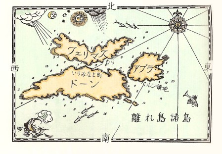
（ついでですが、わたしはこれまで、この遠い島々が、ナルニア王国のものになったいきさつを、きいていません。そのわけをきいて、たいへんおもしろい話でしたら、別の本に書くかもしれません）。
「この島に船をよせましょうか？ 陛下」とドリニアンがたずねました。
「フェリマスには、よい上陸地がなかったと思いますね。」とエドマンド。「ぼくたちのころには、ほとんど人が住んでいなかったが、今みても、そのように見えるなあ。島の人はもおもにドーン島に住み、アブラ島にもすこし住んでいました。アブラは、いちばんむこうの第三の島で、ここからは見えません。このフェリマスでは、ヒツジを飼ってるだけでした。」
「それでは、あの岬をまわって、」とドリニアン。「ドーン島に上陸しなければなりませんな。つまり、みんなで、かいでこぐことになりますぞ。」
「フェリマスにおりられないのは、残念ね。」とルーシィ「わたし、またあそこを歩いてみたいわ。あそこは──とてもさびしくて、それがすてきなさびしさなの。いたるところ、草とツメ草とそよふく潮風ばかり。」
「わたしも、足をのばしたいですね。」とカスピアン。「ねえ、どうです、わたしたちは、ボートで上陸して、そのボートを帰し、歩いてフェリマス島を横切って、むこうがわで、朝びらき丸に乗せてもらう、というのは？」
カスピアンが、そののちこの航海をつづけて、すっかり経験をつんだように、この時そんな経験がそなわっていたら、こんな思いつきはいわなかったでしょう。けれどもその時は、すぐそれがすばらしい考えのように思われました。「ええ、そうしましょうよ。」とルーシィがいいました。
「あなたも、いかがです？」カスピアンは、手にほうたいをまいて甲板にもどってきたユースチスにいいました。
「こんないまいましい船から出られるんなら、なんでもしますとも。」とユースチス。
「なに、いまいましい？ どういうことですな？」とドリニアン。
「ぼくのいたところのような文明国ではね、」とユースチス。「船はもっとずっと大きくて、乗っていても海にいる気がしないくらいなんだ。」
「それじゃ、陸にいるのも同じことだな。では、ドリニアン、ボートをおろすように、命じてください。」とカスピアンがいいました。
王とネズミと、ペベンシーきょうだいとユースチスは、ボートに乗りこみ、フェリマスの岸に運ばれました。ボートが一同を岸において、こぎもどりますと、おりた人たちはあちこち見まわしました。みんなには、沖の朝びらき丸が、ずいぶん小さく見えるので、びっくりしました。
ルーシィは、海中で泳ぎながらくつをぬぎすてたものですから、今ははだしでした。でもこの丘のような芝生の上を歩くのは、つらくありません。むしろ、ふたたび陸に立って、土のかおりや草のかおりをかぐのは、ゆかいでした。もっとも、はじめのうちこそ、よく海にいた者がかかることですが、地面が船でのようにぐらぐらゆれているように思われましたが。船にいた時よりも、こちらがずっと暖かくて、ルーシィは、ふみこえていく砂地を、素足にこころよく感じました。どこかで、ヒバリがないていました。
一同は、島のなかへふみこみ、低いながらもかなりけわしい山にのぼりました。その頂上に立って、もちろん、みんなふりかえって見ますと、朝びらき丸は、光る大きな虫のようにきらきらしながら、ゆっくりかいで北西の方に、はい進んでいました。それから一同が尾根すじをこえますと、船はもう見えなくなりました。
こんどはドーン島が、すぐ一キロ半の海峡をへだてて、目の前に見えました。そのうしろ、左手に、アブラ島がありました。ドーン島の中心、「いりえみなと」の小さな白い町のすがたまで、ありありと見えました。
「や、あれはなんだろう？」と、ふいにエドマンドがいいました。
いまくだっている緑の谷に、あらくれ男が六、七人、みな武器をもって、一本の木のそばにすわっているのです。
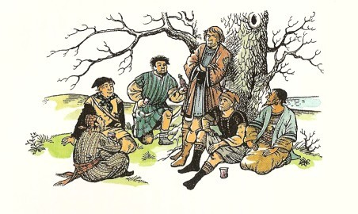
「わたしたちのことは、あの連中にいわないように。」とカスピアン。
「してそれは、なにゆえですか？ 陛下。」やっと承知してルーシィの肩に乗ってきたリーピチープが、たずねました。
カスピアンが説明しました。「いま、思いついたことだが、このあたりでは、だれもナルニアの消息を長いこときいていないようだ。とすれば、われらの主権をみとめないことも、ありうるな。それなら、わたしが王だと知られない方が、安全にちがいない。」
「でも、わたしどもは剣をもっております。陛下」とリーピチープ。
「そうとも、リープ、たしかにもってるさ。」とカスピアン。「だが、この三つの島々をもう一度征服しようというのなら、そうとうの軍隊をつれてやってこなければならぬ。」
そのまに、一同は見知らぬ者たちにずっと近づいていました。すると、なかのひとり、黒髪の大男が、大声をあげました。「みなさん、ごきげんよう。」
「そちらのみなさんも、ごきげんよう。」とカスピアン。「離れ島には、総督どのが、まだおられますか。」
「いらっしゃいますとも。ガンパスどのです。お館は、いりみなと町にありますぜ。だがみなさん、ここで一ぱいやりませんか？」
カスピアンは、ほかのみんなとおなじく、いま知りあった人たちの顔つきが気にいりませんでしたが、申し出を受け入れ、みんなですわりこみました。けれどもつがれたコップをくちびるまであげるまもなく、黒髪の男が、仲間たちにこくりと首をふり、たちまち、五人の客たちは、強い腕におさえこまれていました。ちょっともがきはしましたが、むこうがすきをついて、ゆうせいに出たのですから、たちまちみな、武器ははずされ、両手を背中でくくられてしまいました。ただリーピチープだけは、じぶんをおさえたやつの手から身をよじって、思いきりかみつきました。
「そのけものには気をくばれよ、タクス。」と親分がいいました。「きずをつけるな。そいつは、べらぼうなもうけになる。まちがいねえ。」
「ひきょう者！ こしぬけ！」リーピチープが金切り声をたてました。「勇気があるなら、剣をかえせ、手足をはなせ。」
ピュー、と人さらいは口笛をふきました（こいつの正体は、人をさらって、どれいに売りとばすやつでした）。「口がきけるぜ！こんなのは知らなかった。こいつを二百クレセントよりねぎられたら、ばかをみらあ。」カロルーメンのクレセントは、このあたりで使われているお金の単位で、一クレセントは三百五十円ぐらいにあたります。
「なるほど、これがおまえたちの正体だな。」とカスピアン。「人さらいの、人買いか。さぞかし、鼻が高いだろう。」
「おい、おい、おい。」と人さらい。「これ以上つべこべいうな。もっと気楽になさりゃ、万事もっとぐあいよくなるぜ、おい。おれもこんなこた、おもしろずくでやってるんじゃねえ。ほかの者とおんなじように、くらしを立ててるのよ。」
「どこへつれていくんです？」とルーシィが、やっとのことでことばを口に出しました。
「あっちのいりみなと街へよ。あしたの市の日に出すのでな。」と人さらい。
「そこに、イギリス領事は、いないか？」とユースチス。
「なに、ネギの料理だと？」ユースチスがそれを説明しようとやっきになっているうちに、人さらいは、あっさりとこういいました。「おい、このぺらぺらは、もうたくさんだ。ネズミの方は、たなからぼたもちだが、こいつは、のべつくまなしにしゃべってやがる。さあ、あいぼうたち、でかけようぜ。」
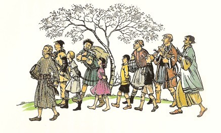
それから四人のとらわれ人たちは、いたくはなくともがっちりと、つなぎあわされて、海岸へおりてゆかされました。リーピチープは、もちはこばれました。口をしばるぞとおどかされたので、かむことはやめましたが、口をきくほうはどっさりありました。この時ネズミが人さらいたちにむかっていったことばには、どんな人でもがまんできまいと、ルーシィが思ったほどでした。けれども人さらいの方は、まるでむきにならず、リーピチープが息をつくたびに、「もっとやれ。」というだけで、時々、「まるで芝居みたいにおもしれえじゃねえか。」とか、「ちくしょうめ、こいつ、じぶんのいってることがわかってるんじゃねえかと思えるくれえだよ。」とか、「てめえたちのうち、こいつを訓練したのはだれだ？」とか、つけ加えるのでした。それがまた、ますますリーピチープをおこらせるものですから、とうとう、頭のなかでいおうと思うことが一時にひしめいて、かえって口がつまり、静かになってしまいました。
ドーン島をのぞむ岸におりてきますと、そこに小さな村があり、浜には一せきの長いボートがあり、さらにそのすこし沖に、まことによごれた船が一せき見えました。
「さあ、ちいせぇの。」と人買いがいいました。「ぎゃあぎゃあさわぎたてるなよ。そうすりゃ、泣きをみることはねえ。みんな船に乗んな。」
その時、村の家の一けん（宿屋でしょう）からひとりのりっぱな顔をした、ひげを生やした人が出てきて、こういいました。
「おい、パグ、またまた、れいのきさまの品物か？」
パグという名まえらしいその人買いは、ていねいなおじぎをして、へつらうような声で、いいました。「さようでございます。との。」
「この少年に、いくらほしいのかな？」とその人は、カスピアンを指さしていいました。
「これは、これは。とのは、いちばんよいものをえらびぬかれしまたな。くだらない品では、とのの目はごまかせませんわい。あれなる男の子は、このわたくしが気に入りましてな。すきになったようなわけでして。わたくしも根がやさしいものですから、この仕事をはじめるべきではなかったのでして......で、とののようなおとくいさんには──」
「ねだんを申せ、このハゲタカめ。」と、その、とのとよばれた人が、きびしくいいました。
「そちのきたない商売のらちもない長談義を、わしが、ききたいと思っているのか？」
「との。とののようなかしこきお方には、三百クレセントでようございます。だが、ほかのかたがたには──」
「百五十、つかわそう」
「おねがいです。おねがいします。」とルーシィが口をはさみました。「あなたがどうなさろうと、どうかわたしたちをはなればなれになさらないでください。ご存じないでしょうが──」といいかけて、ルーシィは、こうなってもまだカスピアンが、身の上を知られたくないことを見てとりました。
「では、百五十じゃ。」と、とのがいいました。「そのおとめよ。残念だが、あなたがた全部を買えないのだ。パグ、わしの少年のなわをといてやれ。それに、おい！この子どもたちがそちの手にあるうちは、ねんごろにあつかえよ。さもないとよくないことになろうぞ。」
「さよう！」とパグ。「この道にたずさわる者で、わたくしほどじぶんの品物をよくとりあつかう紳士がほかにいると、おききでございますかな？いかがで？まったく、じつの子どものように、とりあつかっておりますで。」
「そのことばがほんとでありたいものだな。」と、とのはきびしい声でいいました。
おそろしい時が、おとずれました。カスピアンがなわめをほどかれると、その新しい主人が、「こっちへおいで。」といいました。ルーシィは、わっと泣きたて、エドマンドは、この上なくうつろな顔つきになりました。けれどもカスピアンは、ふりかえって、こういいました。「元気をだしなさい。さいごはうまくいくと信じてますよ。では、さらば。」
「さあ、おじょうちゃんや。」とパグがいいました。「そんなに悲しんで、あしたの市にお顔をそこなっちゃいけねえぞ。いい子になりゃ、泣くことは、ねえさ、な？」
それから、一同は、人買い船にこぎつけて、船のなかの下底の、細長くてうす暗い場所につれこまれましたが、そこはあまりきれいでなくて、ほかにもたくさん、ふしあわせなとらわれ人たちがいるのを見ました。それはパグが、もちろん海賊をやり、島々のあいだをめぐり動いて、できるだけ人さらいをして、もどってきたところでした。子どもたちは、ひとりも知っている人に会いませんでした。つかまっていた人たちは、たいていガルマ島とテレビンシア島に住んでいました。この船底でみんなは、わらのなかにすわり、カスピアンはどうなるのかと心配したり、ユースチスが、こうなったのも、じぶん以外のみんなのせいであるかのようにしゃべるのをやめさせようとしたりしました。
このあいだに、カスピアンは、はるかにおもしろい時間にめぐまれていました。カスピアンを買いとった人は、かれをつれて、村の家々のあいだの小道をたどり、村のうしろのからりとした場所に出ました。そこで、その人はふりむいて、カスピアンとむかいあいました。
「わしのことを、こわがらんでいいよ、ぼうや。わしは、ぼうやによくしてやる。わしはおまえさんの顔を見て、買ったのだ。その顔が、ある人のことを思い出させるのでな。」
「だれのことか、おききしてもいいでしょうか、との。」とカスピアン。
「おまえさんが思い出させるのは、わしのご主人、ナルニアのカスピアン王だ。」
そこでカスピアンは、ここでひと思いに一か八かやってみようと思いました。
「とのよ。わたしが、あなたの主人にあたります。カスピアンです。ナルニアの王ですぞ。」
「これはまた、はなはだだしぬけな！ それがどうして、ほんとうとわかるかな？」
「まず第一に、わたしの顔です。」とカスピアン。「つぎに、あなたのお名まえは、六ついううちであててみせるのが、証拠です。あなたは、わがおじミラースが海外へおくった七人のナルニア貴族のおひとりで、じつはわたしはその方々をさがしに来たのですよ。ええ、アルゴス、ベルン、オクテシアン、シスチマール、マブラモーン、それに、ええと、あとは忘れました。しかもさいごに、もし、とのがわたしに剣を与えてくだされば、公平な戦いの場でどんな人を相手にしても、しんじつナルニア王で、ケア・パラベルの領主、離れ島諸島の皇帝、カスピアン王のむすこ、カスピアンなることを、あかしたててみせましょう。」
「いやはや、」とその人は、おどろきの声をあげました。「まさしくその父君の声音、また話されかただ。おお、わが君、陛下！」こう叫んで、野原のなかでひざまずき、王の手にキスしました。
「卿がわたしのためにしはらわれた金額は、わが国ぐらからたっぷりつぐなわれるでしょう。」とカスピアンがいいました。
「あの金額は、パグのふところにはまだはいっておりません。陛下。」とベルン卿がいいました。この人はベルン卿だったのです。「たしかに、パグのものにはなりますまい。わしはいままで百度も、このいかがわしい人買い商売を根こそぎにせよと総督に申しいれをしてきました。」
「ベルン卿よ。」とカスピアン。「この島々のようすは、とくと話をきかなければなりません。だが、まず、卿ご自身の話をうかがいたい。」
「しごくかんたんでございます、陛下。わしはここまで六人の仲間といっしょに来て、この島のおとめがすきになって、航海はもうたくさんだと思いました。それに、陛下のおじ君が王であるうちは、ナルニアへもどる望みがありません。そこでわしは、島のおとめを妻として、それ以来ここに住んでおりました。」
「では、この総督のガンパスというのは、どのような男ですか？総督はいまもナルニア王をわが主君と考えておりますか？」
「ことばの上では、そう申しております。あらゆることを、ナルニア王の名を使っておこなっております。ですが総督は、ほんとうのナルニア王が目のあたりじぶんの前にあらわれるのを、けっしてよろこびはしますまい。そしてもし陛下がおひとりで武器をもたずに総督に会われるとしたら、ナルニアにつかえる心に変わりはないといいながら、陛下を信じないふりをすることでしょう。陛下のおいのちが、あぶなくなります。陛下はこのあたりに、何をつれておいでですか？」
「わたしの船が、島の岬をまわって、こちらへまいるところです。」とカスピアン。「いざ戦いとなれば、剣を使える者が三十人はおりますよ。この船を乗りいれて、パグをおそい、やつにとらわれたわたしの友だちを自由にするというは、どうですか？」
「意見を申しあげれば、それはなりません。戦いがおこるやいなや、パグを助けに、いりみなと町から、二、三せきの船がただちにやってまいりましょう。陛下は、いまげんにおもちになる兵力を上まわる力をもつと見せかけ、王の名のもつご威光を使って、ひと芝居なさらなければなりません。ぜったいにすぐ戦いにもちこんではなりませんぞ。ガンパスは、臆病しごくな男で、おどかしつけることができます。」
それからさらにもう少し話をかわしたあとで、カスピアンとベルンとは、村の西はずれの海岸におりてゆき、そこでカスピアンが角笛をふきました（この角笛は、あのスーザン女王の宝、ナルニアの魔法の角笛ではありません。カスピアンは、じぶんの留守のうちに、たいへんな事件がおこった場合に、じぶんのかわりに政治をみるトランプキンが、すぐ使えるように、国に残してきたのです）。信号を知ろうとして見張りに立っていたドリニアンは、ただちに王の角笛をききつけて、朝びらき丸を岸の方へよせ、ふたたびボートがおろされて、しばらくするとカスピアンとベルン卿が甲板にあがって、ドリニアンにいままでのわけをきかせていました。ドリニアンも、カスピアンと同じに、ただちに人さらい船に朝びらき丸を横づけにして、さきの船に乗りこもうと、息まきましたが、ベルンが同じわけを話して、それをとどめました。
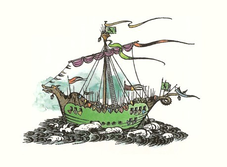
「この海峡をまっすぐにつっきるように、かじをとりなさい、船長。」とベルン。「それから、わたしの領地のあるアブラ島にまわっていただきたい。だがまず、王の旗をかかげ、楯をことごとく舷側にならべ、できるだけたくさんの人たちをマストの見張り台にのぼらせなさい。そしてここから矢ごろの距離を五倍ほどいったところで、船首の左舷に海をのぞむころ、合図の信号を五つ六つだしなさい。」
「合図ですと？ 何にです？」とドリニアン。
「それはそれ、わしらのあとにつづいてくるほかの船に合図したと見せかけるのだ。その船があるとガンパスが思えば、しめたものですぞ。」
「やあ、わかりました。」とドリニアンが、両手をこすりあわせながらいいました。「すると、かれらが、こちらの信号を読むわけですな。どんな信号を出せばいいでしょうな？ゼンカン、アブラノミナミヲマワリ──ニアツマレとな。どこにです？」
「ベルン領地に、です。」とベルン卿。「それで、たいへんけっこうですぞ。全艦隊の動きは──ほかの船があるとして、ですが──いりみなと町からは見えないことになります。」
カスピアンは、友だちがパグの人さらい船にとじこめられてしおれているのを気の毒に思いましたが、その日これからの冒険を考えるとうきうきしないわけにいきませんでした。午後遅くなって（かいを使って、こがなければなりませんでしたから）、ドーン島の北東のはしをまわって右舷にむきをかえ、アブラ島の岬をまわってふたたび左舷にむかい、アブラの南岸のよい港にはいりましたが、ここにベルンの心地よい領地がなだらかな傾斜になって、水ぎわまでつづいていました。ベルンの土地の人々は、多くは畑で働いていましたが、みな、どれいでない自由民で、領土は平和で、ゆたかでした。船の人々はここに上陸し、入江にのぞむ、のきの低い、柱のならんだ家で、心からのごちそうをいただきました。ベルンとそのしとやかな奥さんと陽気なむすめさんたちが、客たちをすっかり元気づけました。けれども、暗くなってからベルンはドーン島へボートで使いの者をやり、あくる日のために何かの準備（なんの準備かは、ベルンははっきりいいませんでしたが）をととのえさせたのです。
４ ドーン島のカスピアン
つぎの朝、ベルン卿は朝早く、客たちを起こして、朝ごはんをすませ、カスピアンに、その部下すべてによく武装させていただきたいとたのみました。「そしてことに、世界じゅうが見まもっている強い国どうしの大戦争の口火をきる合戦にのぞむように、なんでもかでもきちんととりそろえ、ぴかぴかにみがきあげておくように。」と卿はいいそえました。そのことばどおりに、なされました。それからボート三そうにわかれて、カスピアンとその部下たち、ベルンとその数人の郎党とが、いりみなとへむかっていきました。王の旗がボートのともにひるがえり、王のらっぱ手が、王のそばにしたがっていました。
軍がいりみなとのさん橋についた時、カスピアンは、軍隊を見にかなりの人々がむらがっているのを見出しました。
「これが、きのうの夜、わしのふれまわらせておいたわけでございましてな。」とベルンがいいました。「ここに来たのはみな、わしの知り合いの友人ばかりで、よい人たちなのです」そしてカスピアンが岸におりたつとともに、人々のむれはいっせいにかんこの声をあげ、「ナルニア！ナルニア！王さま万歳！」と叫びました。その時──これもベルンのさしがねだったのですが──町の方々から、一度に鐘がなりはじめました。そこでカスピアンは、王旗を前に進め、らっぱ手にらっぱをふかせますと、部下はみなさっと剣をぬいて、さっそうとしたなかにも顔をいかめしくさせて、町の大通りを行進し、その足なみは通りをとどろかし、そのよろいがかがやいて（おりから、朝日がのぼっていて）、じっとながめられないくらいでした。
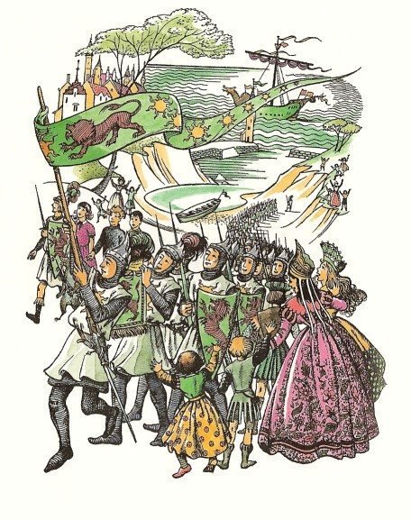
はじめのうちはかんこの声をあげてむかえた人々は、ベルンの使いに知らせをうけて、なに事がおこるかを知っており、それに味方している人たちだけでした。けれどもつぎには、子どもたちがみな、加わりました。なにしろ子どもたちは行列が大すきなのに、あまり行列を見ていませんでしたから。そのつぎには、学校の生徒たちがまた加わりました。生徒たちも行列がすきなうえに、もっとさわぎとごたごたがおこれば、けさは学校がなくなるかもしれないと思ったからでした。さらにその上、おばあさんたちが、戸口や窓から首をつきだし、しゃべりはじめ、万歳をとなえはじめました。なにしろ王さまが来たというのです。総督なんかくらべものになりますか。そこにまた、若い女たちも、おばあさんと同じわけから出てきました。その上若い女たちにとっては、カスピアンもドリニアンも兵士たちも、美しかったせいもありました。それから、若者たちが、女たちの見ているのはなんだろうと、出てみました。そんなわけでカスピアンが、城の門につくころには、町中の叫び声をあびていました。城のなかでは、ガンパスが、勘定書きだの法規だのいろいろの書類だのをあたりいっぱいにかきちらかしながら、すわったまま、この大きなさわぎをききました。
門の前で、カスピアンのらっぱ手がひとふきらっぱをふいて、こうよばわりました。「ナルニア王に開門。陛下の忠臣にしておぼえめでたき家来、離れ島諸島の総督を訪問あらせられる。」そのころは、この島々ではなに事も、だらしなくてぞんざいなやり方がおこなわれていました。小さなくぐり戸がやっとあいて、なかから、かぶとのかわりにうすよごれた古帽子をかぶった、くしゃくしゃになった男が、手にさびたほこをもって、出てきました。男は目の前のまばゆいすがたを見て、目をぱちぱちさせました。「かっか──おあいしまへん。」と男はもぐもぐいいました。（「閣下には、お会いになれません。」というのが、この男のいい方ではこうなるのです。）「月の第二土よう、ごご九時、十時、あいだのほか、とくべつのほか、めんかい、ありまへん。」
「ナルニア王の前では、帽子をとれ、犬め。」とベルン卿が、かみなりをおとしました。そして、そのよろい小手をはめた手でぴしりとひとうち、番人の帽子をはねとばしてしまいました。
「え、なん、す？ いったい、どうし、たんす？」と番人がいいはじめましたが、だれも番人に気をとられる者はありませんでした。カスピアンの部下がふたりで、その小門をくぐり、しばらく大門の横木とさし錠をごたごたしていましたが（なにしろ、なにもかもさびだらけなのですから）、やがて大門を左右にぎいとあけ放しました。そこで王と王にしたがう一隊とは、城の中庭にのりこみました。そこには、総督の番兵たちが、たくさんにぶらぶらしていて、さらに数人の兵たちが（たいてい口をふきながら）、ほうぼうの戸口からとびだしてくるところでした。その兵隊たちのよろいは、たいへんみっともない様子でしたが、もし命令されていたら、今どんなことがおこったかを知っていたら、ただちにむかってきたかもしれません。ですから、じつにあぶないおりでした。カスピアンは、兵隊たちに、どうなっているのかを考えるいとまを与えませんでした。
「隊長は、どちらだな？」とカスピアンがたずねました。
「おたずねとあらば、隊長はわたしですが！」とよろいをまるでつけていないでだらけた、そのくせおしゃれな若い男が、いいました。
「わが目的は、ほかではない。」とカスピアン。「わが領土なる離れ島諸島へ王として訪れたのも、わが人民のよろこびのもととこそなれ、おそれおののくものとなるべきつもりではない。もしその目的でなかったなら、そなたの部下のよろいや刀のふとどきをとがめたいところである。が、そなたたちは大目にみてとらせよう。して、そなたの部下に、わが健康をいわって、ブドウ酒を一たる、あけさせるように。だがよいか、あすの昼には、この中庭において、兵士たちが、ルンペンのようでなく、まことの軍人らしくあるところをしかと、見たいものだ。それにたがう時は、はげしい罰がくだるものとかくごせよ。」
隊長はぽかんとして口をあけました。が、ベルンが時をおかずに叫びました。「王さま万歳！」すると、何もわからなくてもブドウ酒をあけろということだけはわかった兵隊たちが、声をあわせて万歳と叫びました。カスピアンは、部下の者たちに、この中庭で残って待つように、と命じておき、ベルンとドリニアンと、そのほか四人をつれて、広間へむかいました。
広間のおくのすみの方にすえたテーブルのうしろに、まわりにさまざまな助役をおいて、離れ島諸島の総督閣下が、いすにかけていました。このガンバスは、気むずかしい顔つきで、髪はむかし赤毛だったものが、いまは色のわるい白髪まじりになっていました。ガンパスは、広間にはいってきた見知らぬものたちを、顔をあげてちらりと見てから、すぐテーブルの書類に目をおとして、きまりきった調子で、「第二土曜の午後九時から十時までのほか、かってな面会は禁止じゃ。」といいました。
カスピアンはベルンにうなずいてみせて、わきによりました。ベルンとドリニアンは、一歩前に出て、めいめいテーブルのはしをつかみました。そして、テーブルをもちあげて広間のすみに投げますと、それはころがって手紙や書類のたばがとび、インクつぼやペンや封ろうがちり、文書がまいました。それからふたりは、乱暴ではありませんが、はがねのペンチのようにがっちりと、いすからガンパスをつまみあげ、いすとむかいあった一メートルさきに、ガンパスをおろしました。カスピアンは、ただちにいすにすわり、ひざにぬき身の剣を横たえました。
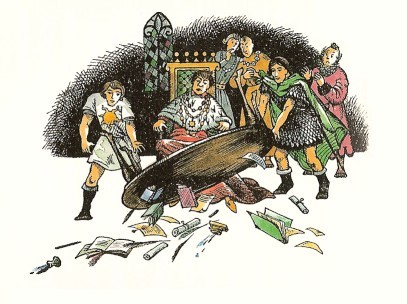
「卿よ。」とカスピアンは、ガンパスにはったと目をそそぎ、「おんみは、われらがうけると思われた心よい歓迎をいたさなかったな。わたしは、ナルニア王だ。」
「公式の知らせとてなく、」と総督。「おぼえ書きも渡されず、われら、かようなことはすこしも知らされておりませんでした。まるできまりをはずれたことで、こういう場合は、いかなる規則をあてはめればよいか、考えさせていただれば、さいわいで──」
「さらにわれらの参ったのは、おんみの事務とりあつかい方をしらべるためもある。」とカスピアンがことばをつづけました。「とくに説明をもとめたいのは、つぎの二つのことがらだ。まず、この百五十年のあいだ、この諸島からナルニア王国へさしいだすべきみつぎものが、まったくおさめられた記録がない、ということである。」
「それは、来月会議にかける問題でございました。」とガンパス。「もしだれかが提案しまして、調査委員会がもうけられ、来年の第一回の委員会で、離れ島諸島の財政を報告いたしましたら、この場合......」
「その上わたしの知ったところでは、わが国の法律にまぎれもなく記されているが、」とカスピアンは、さらにいいつづけました。「そのみつぎがとどけられない時は、その全額は、離れ島諸島の総督がその個人の財産から支払わなければならない、とな。」
ここまできいて、はじめてガンパスは、しんけんな注意をはらいはじめました。「おお、それはまったく、話になりません。そんなこと財政上できないことで──陛下は、じょうだんをおっしゃっているにちがいない。」
ガンパスはこういいながら、心の中で、この歓迎しないお客さんたちをなくしてしまう方法がないかと考えていました。もしガンパスが、カスピアンはただの一せきの船に乗り、ひきつれてきたのはみな、その船の者ばかりと知ったなら、その場は言葉たくみにとりなしておいて、この客どもをとりかこみ、夜のうちに殺してしまうことになったでしよう。けれどもガンパスは、きのう海峡をとおる戦船を一せき見ましたし、それが仲間の船に合図していると思われる旗印を見かけたのでした。その時は、それが王の船だとは知りませんでした。なにしろ風が凪いで、旗がひるがえらないものですから、金のライオンの紋が見えなかったために、ただなりゆきを待っていたのでした。いまガンパスは、王がベルン領地に戦船をすべて集めているものと考えていました。もともとガンパスの頭には、だれにせよ、わずか五十人たらずで島々をのっとりにいりみなと町におしかけるという思いは浮かびませんでした。そういうことは、たしかにガンパスがじぶんからやろうと思いたつ性質のことがらでは、けっしてなかったのです。
「第二に、」とカスピアン。「わたしは、なぜおんみが、いやらしく、また人道にもとる人買い商売がこの地に栄えるのをゆるしたかという点を知りたい。もともとそんなものは、わが領土の古いならわしに反することだ。」
「必要上で、さけられないことでして。」と総督。「この諸島の財産をふやすのにかかせないものと信じます。ただいま景気が大いによいのは、そのせいなのです。」
「いったい、どれいを何に使うのか？」
「よその国へ売るためで、陛下。たいていはカロルーメンに売りますが、そのほかにもさばきます。ここは実に、どれい市の大中心地になっています。」
「では、ことばをかえていえば、おんみたちは、どれいがいらないわけだ。では、どれいが、パグのようなてあいの財布をこやすことのほかに、どんな役に立つ目的があるかをきかせてもらいたい。」
「うら若い陛下のお年では、」とガンパスは、おとうさんのような、あたたかく教える様子のほほえみを浮かべて、「こみいった財政問題をわかっていただくのも、むりな話でございましょう。その統計がございます。表がございます。また......」
「うら若いといわれるが、」とカスピアン。「閣下とおなじく、人を売るどれい商売の正体はよく存じておるつもりだ。しかもそのせいで島々に、パンやビール、ブドウ酒や材木、キャベツや本や楽器、馬や武器、そのほか何か値打ちのあるものがはいってくるわけでもない。が、はいってこようがこまいが、どちらにせよ、どれい商売は、やめなければならないぞ。」
「ですがそれは、時計の針をさかさにまわすようなもので、」と総督があえぎながらいいました。「陛下には、世のなかがうつり変わること、進歩ということが、おわかりになりませんか？」
「丸い卵も、切りようで四角、というぞ。」とカスピアンがきりかえしました。「われらナルニアでは、それを、悪くなること、つまり退歩というのだ。どれい商売はだんじて、やめなければならぬ。」
「そのようななされかたには、責任がとれません。」とガンパス。
「いや、それならけっこう。」とカスピアン。「おんみを、この仕事からやめさせてつかわそう。ベルン卿よ、こちらへ。」そしてガンパスがどうなったのかよくわからないうちに、ベルンが王の両手にその手をかさねてひざまずき、ナルニアのむかしからのならわしとよい秩序にしたがって離れ島諸島をおさめる、ちかいを立てました。カスピアンは、「これで、総督のことは、すっかりかたがついたと思う。」といって、ベルンを公爵にとりたて、離れ島諸島公にしました。
「では、そなたの方では、」とカスピアンは、ガンパスにいいました。「そなたの財産からみつぎのとりたてをすることは、ゆるしてとらせよう。だが、今は城が公の住居であるによって、あすの昼までに、そなたとそなたの一族郎党は、一切この城から、出なければならぬ。」
「もしもし、それはたいへんけっこうでございますが、」とガンパスの助役たちのひとりが、口を出しました。「お芝居はちょっとおやめになすって、まじめにお話したいのですが、問題はですね──」
「その問題は、」と公がいいました。「そちややじ馬どもが、むちをくらわずにひきさがるか、むちをくらってひきさがるかということじゃ。どちらなりと、すきな方をえらぶがよい。」
こうしてこちらのことがめでたくかたづくと、カスピアンは、城にいた数頭のばかに手いれのわるい馬の支度を命じて、じぶんもベルンとドリニアンそのほかいく人かといっしょにそれに乗って、町へ出て、どれい市場にいきました。そこは波止場に近く、屋なみの低い、細長い建物で、そのなかは、よそのせり売場と同じようで、たくさんの人むれにかこまれたパグが、壇の上で、声をからしてわめいていました。
「さあ、おたちあい、よりどりみどり、二十三人だ。テレビンシア島の百姓で、鉱山によし、ガレー船によし、二十五歳になっていないな。歯は悪くない。たっしゃに日やけした男で、いいもんだよ。タクス、シャツをとって、みなさんにお目にかけろ。どうです、この筋肉！胸のあつみをごらんねがいたいね。すみの旦那から、十クレセントと値がかかったよ。じょうだんじゃないよ、旦那。十五クレセント、ほら、十八クレセントだよ！この十八クレセントが、あとの二十三人の元値ときまった。十八のさきは、どうだ？二十一クレセント、はい、旦那、二十一クレセントの声がかかったよ──」
けれどもそこでパグは、壇の上によろいをならしてかけのぼる人々を見ると、ことばをきって口をあんぐりあけました。
「ひざまずけ、みなのしゅう、ナルニア王のおいでじゃ。」公がいいました。部屋のなかの人人はみな、おもての馬具のなる音やひづめの音をききました。また多くの者がすでに、上陸した人たちのうわさ、城でおこった事件のうわさをきいていました。ですからたいていの人たちが、公のさしずにしたがいました。したがわないものは、そばの人たちにひきおろされました。万歳をいう者もありました。
「パグよ、そなたの命はないと思え。きのう、王のからだに手をかけたためにな。」とカスピアン。「だが、知らぬことゆえ、ゆるしてとらせよう。どれい商売は、今から十五分前に、この王の領土いたるところで、禁ぜられた。ここに、この市場にいるどれいは、すべて自由の身となることを申しわたす。」
カスピアンは、どれいたちのよろこびの声をおさめるために手をあげて、さらにいいつづけました。「わたしの友だちは、どこだ？」
「かわいいむすめさんと、りっぱな若紳士で？」とパグは、へつらうような笑いを浮かべながら、「ええと、あの方々は、すぐさまひきぬかれてしまいまして──」
「ここです。ここですよ、カスピアン。」ルーシィとエドマンドがいっしょに叫びました。また、「ここにひかえております、陛下。」とべつの片すみからリーピチープが、キーキー声をあげました。みな売られていましたが、買い主が、ほかのどれいの値をつけようとして残っていたので、まだつれ去られていなかったのです。人ごみはわかれて、その三人（ふたりと一ぴき）を通してやり、三人とカスピアンとは、さかんに手をにぎったり、声をかけあったりしました。するとそこへ、たちまちふたりのカロルーメンの商人が近づいてきました。カロルーメンの人たちはみな、黒い顔に長いひげを生やしています。そしてひろがるマントを着て、頭にミカン色のターバンをまいています。この国の人々は、りこうで、金もちで、礼儀正しくて、残酷で、ゆいしょのある人々です。その商人たちが、カスピアンにきわめてていねいにおじぎをして、長いあいさつをのべました。それは「王さまは、繁栄の泉ますますゆたかにして、思慮と徳行の庭をいよいよ花とさかせたまい......」というようなことでしたが、けれども商人たちのほしがっていたものは、じぶんたちがどれいにはらいこんだお金でした。
「みなさん、もちろん公平に、どれいを買われたみなさんにそれだけの金額をかえさなければなりません。パグ、おまえの収入を、はした金のミニムまですっかりそろえて、もってまいれ。」（一ミニムとは、一クレセントの四十分の一の金額のことです。）
「陛下は、わたくしめを、こじきになさるおつもりで？」とパグが悲鳴に似た声をあげました。
「おまえはこれまで、たくさんの人々を悲しませてきた。こじきになろうと、どれいになるよりはよいぞ。だが、もうひとりの友だちは、いずこだ？」
「ああ、あいつのことですか？」とパグ。「どうかつれてってください。大よろこびでさ。手をはなれるのが、ありがたんで。生まれてからこのかた、市場であんなに売れねえのを見たことがねえ。おしまいにゃ五クレセントの値をつけても、だれひとり買いやしねえ。ほかのといっしょにしておまけにしようといっても、ほしがる者はいねえんで。さわる者もなし、見る者もないくらいでした。タクス、あのぶすぶす野郎をつれてこい。」
こうしてユースチスがあらわれましたが、たしかに、ぶすっとふくれかえっていました。だれも、どれいとして売られることはいやですけれども、買手のつかないみそっかすとなれば、とてもいらいらしてしまうでしょう。ユースチスは、カスピアンのところへ来て、「ふん、いつものとおりだ。ぼくたちがとじこめられて苦しんでいるさいちゅうに、あんたはどこかで楽しんでいましたね。イギリス領事を見つけようともしなかったでしょう。もちろん、しなかったでしょうね。」
その夜は、いりみなと町の城のなかで、大宴会がおこなわれました。それから、リーピチープは、どの人にもていねいなおじぎをして寝にいく時に、「あしたこそ、まことの冒険がはじまりますように！」とのべていました。けれどもそれは、あくる日にも、そのまたあくる日にもなりませんでした。なにしろ今は、知られている陸と海とをうしろにして、知られていないところへ進むための支度があり、できるかぎりの支度をととのえなければならなかったからです。朝びらき丸はから荷になって、八頭の馬にひかせて、ころの上を陸にひきあげられ、すみずみまで、腕のいい船大工たちに手をいれてもらいました。そのあとでふたたび水にはいり、食料や水をつめるだけつみこまれました。それで二十八日分だということでした。エドマンドがきいてがっかりしたのですが、それだけつんでも、二週間だけ東の方へ船を進めてみて、それでだめならあきらめて帰るほかはないというのでした。
船の支度をしているあいだ、カスピアンの方は、いりみなと町で見つけられる年よりの船乗りを、ひとり残らずたずねてまわって、もっと東の方に陸があることを知っているか、そのうわさだけでもきいたことがあるか、ときくチャンスをむだにしませんでした。短くかったごましおのあごひげを生やし、すんだ青い目の日にやけた海の男たちに、カスピアンは城のビールの大びんをどしどしふるまってやり、そのかわりに海のとほうもない物語をどっさりききこみました。けれども、いちばん信用できそうに思われる連中も、離れ島諸島のさきに土地があるとはひとこともいわず、大部分の船乗りたちは、東へ東へといけば、世界のはてのすみずみを、たえずめぐり流れているうず潮にのってしまう、と思っていました。「ですから、陛下のご家来衆は、奈落におっこっちまいまさあ。」という者もありました。そうでない者は、首のない人の住む島だの、浮島だの、竜巻だの、海の上にえんえんともえている火だのと、やたらにあやしげな話ばかりをきかせました。ただひとり、リーピチープのよろこんだことに、「そこをこえると、アスランの国です。だが、そこは世界のはてをこえたところで、とてもまいれますまい。」といった者がありました。でも、みんながその船乗りにといただすと、それはじぶんの父からきいた話だとばかりで、そのほかには何もいえませんでした。
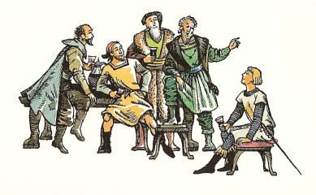
ベルンが話せたのは、じぶんの六人の仲間たちが、さらに東の方に船出して、それきり六人のことをきいたことがないということだけでした。その話をベルンは、カスピアンと、アブラ島のいちばん高い山の上に立って東の海をながめている時に、したのでした。その時、公はこういいました。「わしはよく、朝になるとここにのぼって、海から日の出るところをながめました。そして時には、日の出る場所がほんの四、五キロさきのように見えたりしました。そして、あの友だちのこと、また水平線のかなたにあるところのことを、思いめぐらしました。こうしてあとへ残っていて申すのも、気のひける話ですが、おそらく、あちらには何もありますまい。どうか陛下、東へはむかわれませんように、願います。わしらは、今ここに陛下のお力を必要とするかもしれません。どれい市場をとりやめたことから、新しい国づくりがはじまります。またカロルーメンとの戦争も、考えられるところです。陛下、よくお考えください。」
「わたしは、ちかいをたてたのだ。公よ。」とカスピアンがいいました。「それにとにかく、リーピチープに、出かけもせずになんといえようか？」
５ 大嵐と嵐のあと
一同が上陸してから、朝びらき丸がいりみなと町の波止場をはなれるまで、ほぼ三週間たちました。港を出る日、たいへんげんしゅくな別れのあいさつがかわされて、黒山のように船を見送る人々が集まっていました。いよいよカスピアンが、離れ島の人々にさいごの演説をして、公と公の一家の人々から立ち去った時、万歳を叫ぶ者あり、涙にくれる者ありでしたが、船がその紫色の帆をだらりとさげたまま、岸からしだいにはなれてゆき、船尾楼の上でふくカスピアンのらっぱ手のらっぱの音が、海面をつたわってしだいにかすかになっていくにつれて、人々はみなだまってしまいました。いっぽう、船は風にのりました。帆は風にふくらみ、ひき船は朝びらき丸からはなれて、岸へこぎ帰ってゆくことになりました。はじめて大洋の大波が朝びらき丸のへさきにあたりました。船はふたたび生き生きとよみがえりました。役のない船員たちは下におり、ドリニアンが船尾楼での初の見張りに立ちました。船は、アブラ島の南をまわって船首を東にむけました。
つづくいく日かのあいだは、こころよいものでした。ルーシィは、毎朝目をさますたびに、船室の天井にちらちらうつる水かげろうを見たり、離れ島諸島で手にいれた、お気にいりの品々、船乗りの長靴、サンダル風のあみあげ草履、マント、皮でできた胴衣、スカーフをながめたりしていますと、じぶんがこの世でいちばんしあわせな女の子だという気がしました。そのあとでいつもルーシィは、甲板に出て、船首楼から海をながめます。海は朝ごとに、あかるい青さをまし、胸にすいこむ空気は、日ごとにすこしずつ暖かくなりました。そのあとでとる朝ごはんのおいしいこと。そのおいしさは、海でだけ味わえるものでした。
ルーシィは、ともにある小さな腰かけにすわって、リーピチープとチェスをたたかわせては、ずいぶん長い時間をすごしました。リーピチープがチェスのこまをあげるのは、なにしろこまが大きいものですから、盤のまんなかちかくまで動かす場合などは、両手にかかえて爪さき立っていくので、見ていておもしろい見ものでした。リーピチープは、りっぱなさし手で、じぶんのさした手をよくおぼえている時は、たいてい勝ちました。けれども時々はルーシィが勝ちました。それはネズミのほうが、女王と城がぶつかるおそれのあるところへ、騎士のこまを進めるようなおかしな手をうつことがあるからでした。それは、ネズミが時々チェスの遊びだということをふっと忘れてしまって、ほんとうの戦争のことばかり考えて、戦場でならじぶんはこうするという作戦を、騎士のこまにやらせるから、そんなことになるのでした。リーピチープの心は、望みなき望み、死か栄光かをかけた突撃、さいごの死守のことばかりだったのです。
けれどもそんな楽しい日々はつづきませんでした。ある晩、ルーシィが、ともにすわって、船がうしろに残していく長い跡、つまり水尾を見るともなく見ていますと、西の空にめざましい早さでもくもくと大きな雲のみねができていくのが、目にとまりました。そしてその雲のなかに、さけめができて、そこから黄色い入り日がさしてきました。船のうしろがわの海は、ふつうでない形の波になったように思われ、海は、画布に泥をぬったように、よごれたとび色か、黄のまじった色に変わりました。空気はつめたくなりました。船は、うしろの危険を感じたように、不安そうにからだをゆするようでした。帆は、ぐったりたれたかと思うと、すぐつぎに、いっぱいにふくらむという具合でした。ルーシィがこうしたことに気がついて、風がこんなにはげしい音をたてるようになったのは、よくない変わりかたなのじゃないかしらと考えている時に、ドリニアンが叫びました。「全員甲板に集まれ！」たちまち、だれもかも、むがむちゅうで仕事にかかりました。ハッチはしめて、その上に木をうちつける。まかないの火は消される。マストにのぼって帆をちぢめる者もある。ですが、仕事が終わらないうちに、嵐がおそってきました。ルーシィの目には、海の大きな谷が、へさきの前に口をあけるように見えますが、船はそのなかへ、信じられないくらいふかく、つき進んでいきます。つぎには、波の大きな黒い山が、マストよりはるかに高くから、船におそいかかってきます。こんどはだめかとみれば、大波のてっぺんに、つきあげられています。それから船が、ぐるぐる廻るように思われます。水の滝が甲板をどっとひたし、船首楼と船尾楼が、荒海に浮かぶ二つの島のようになります。マストにのぼっていた船員たちは、帆げたに横ばいになったまま、帆をたたもうと必死になっていました。つながきれて、強風のために、きれはしが鉄火ばしのように横にぴんとなびきっぱなしになりました。
「下へおりてください、ひめ君。」ドリニアンがわめきました。ルーシィは船になれない者は、船乗りたちの足手まといだということを知っていましたから、すぐいうことをきこうとしました。ところがそれがらくではありません。船ははげしく左舷の方に傾き、甲板が屋根のように斜めになりました。ルーシィは、はしご段のてすりにつかまったまま、おり口でやたらにあちこちによろめかなければなりませんでした。ふたりの船員たちがあがってくるあいだ、がまんしていて、それからいっしょうけんめいに下までおりました。下へついて、はしご段のもとをまだしっかりとにぎっていたのがよかったのです。つぎの波がごーっと音をたてて、甲板におそいかかり、ルーシィの肩までかぶさりました。そのころにはルーシィもしぶきと雨でほとんどぬれていましたが、今度はもっとつめたく、全身をひたしました。それから、あいまを見て、船室のドアまでひと走りして、部屋にたどりつくと、たちまちにして、やみのなかになだれてくるすさまじい怒濤のありさまはしめだすことができましたが、もちろん、きしむ音、うなる音、ぶつかる音、がたがたする音、とどろく音がめちゃめちゃにいりまじるひびきはしめだすわけにいかず、むしろ船尾できくよりも、船のなかにとじこもってきく方が、もっとおそろしくきこえました。
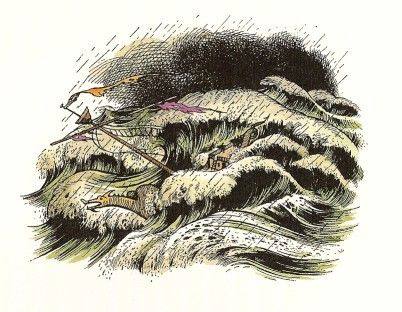
そのつぎの日も、さらにそのつぎの日も、嵐はつづきました。あまり嵐ばかりつづくので、嵐の前はどうだったのか、思い出せないくらいでした。かじとりのところにはいつも三人がかりでいなければならず、その三人にできることといえば、やっと、船の進路をとることだけでした。また、水をくみだすポンブも、たえずいくたりかがあやつっていなければなりません。こうして手を休める者はいませんし、料理をつくることはできず、着物をかわかすこともできず、もう日をあおぐことがありません。そして船から波にのまれていなくなった者が、ひとりありました。
嵐が終わった時、ユースチスは、日記につぎのような記事を書きました。
「九月三日 今日ようやっと書けるようになった。十三日間、昼となく夜となく、台風にほんろうされる。ほかの者たちはみな、わずか十二日間だというが、ぼくはきちんと数えていたから、ぼくの方がたしかだ。数もちゃんと数えられない者たちといっしょに、危険な船旅をするとは、なんたるゆかいなことか。たえまなく大波をうけて、はげしく上下させられ、しんまでゆれるはむろんのこと、ちゃんとした食事をぼくらに出してくれるつもりもないありさまで、生きた心地がしない。いうまでもないが、ここには無線もなく、非常信号ロケットさえもないから、助けを求める合図のチャンスがない。ぼくが口をすっぱくしていってやったこと、つまり、こんなばかげたたらいみたいなものに乗って海に乗りだすなんて、狂気のさただということが、はっきりわかるはず。こんな人間の形をした鬼どもとでなくて、上品な人たちといっしょにいても、こんな船ではだめだのに、カスピアンとエドマンドは、ぼくにひどいことをする。マストがなくなった夜（折れたあとだけが残っている）、ぼくは、てんで気分がよくなかったのに、このふたりが、ぼくを甲板につれ出して、どれいのように働かした。ルーシィが、リーピチープもあんなに小さいくせに、こぎたがっているなどと、よけいなことをいったからだ。あんなちびのけだものは、なんでもみせかけにやってるんだということが、ルーシィにはわからないのだろうか。いくら年がいってないといっても、もっと頭を働かさなければいけない。今日、このやりきれない船が、やっとゆれなくなった。日も出てきた。ぼくたちはみな、これからの仕事について、大いにしゃべった。食物は、大部分がひどいしろものだが、とにかく十六日間つづくだけはある（ニワトリたちは、みな流された。流されなかったとしても、あの嵐では卵をかえさなくなったろう）。やっかいなのは、水だ。二つのたるは、たがいにぶつかって、水もりができたようで、からっぽになった（ここにも、ナルニアのまずいやりかたがある）。一人分をつめて、一日〇・八リットルで、十二日間もつ（まだラム酒とブドウ酒はたくさんあるが、さすがに酒を飲んだら、ますますのどがかわくだけだということは、みんな知っている）。
もちろん、できればすぐに西にむかって、離れ島諸島にひっかえすのがかしこいやりかただが、けれども、ここまでくるには、うしろから強風をうけて、ひた走りに走って、十八日間かかっている。かりに東風をつかまえたとしても、もとの港に帰るのに、さらに日にちがかかるだろう。しかも今のところ、東風のふくけはいがない。いや、まったく風がやんでいる。かいを使ってこいで帰るとしたら、ずいぶん長くかかるだろうし、カスピアンは、水が一日一リットルものめないのでは、かいがこげないという。だがぼくにいわせれば、それはまちがいだ。ぼくは、汗をかけば、それだけ体温がさがるのだから、うんと働けば、水がいらないということを、わからせようとした。カスピアンは、ぼくの説明に耳をかさない。それが、こたえられない時のかれのくせだ。ほかの者はみな、陸が見つかる望みをつないで、さらに進むことにきめた。ぼくは、このさきに陸があるとはわからない点をはっきり指摘することが義務だと思い、みんなが希望的観測の危険にひっかからないようにつとめた。ところが、もっとよい案を出そうともせず、みんなは失礼千万にも、ぼくが何を求めているのかときく。そこでぼくは、冷静かつ沈着に、だいたいぼくはさらわれてきて、心にもなくこのあほらしい航海につれ出されたのであって、みなさんの難儀からみなさんを助け出すのが、ぼくの仕事じゃないんだと、説明してやった。
九月四日 いまだ、なぎ。食事のわりあてがとても少なく、とくにぼくはだれより少ない。カスピアンは、もりかたがずるくて、ぼくがわからないと思っている。どういうわけだか、ルーシィは、じぶんの分をぼくにわけて、きげんをとろうとしたが、あのじゃまばかりするやかましやのエドマンドが、そうさせなかった。まったくあつい日でりだ。夜じゅうのどががわく。
九月五日 あいかわらずなぎ。ひどくあつい。一日じゅう気分がわるい。たしかに熱がある。もちろんこの船に体温計をそなえつける分別はない。
九月六日 たまらない日だった。たしかに熱があるとわかって、夜なかに目がさめた。どうしても、水を飲まなければならない。医者ならきっとそういっただろう。神もごらんあれ、ぼくは、不正なひとりじめをするような人間ではだんじてない。だが、水の配給が病気の人間にもおなじ割合だとは、夢にも思わなかった。ぼくは、ほかの者をおこして、水をくれとたのむのがほんとうかもしれないが、おこすのは自分勝手だと思っただけだ。だからぼくは、おきあがって、コップを手にして爪先歩きで、カスピアンとエドマンドをおこさないようにこっそりと、寝ているほら穴をぬけ出した。なにしろ暑さと水不足がはじまってから、眠りが悪いのだ。ひとがぼくによくしてくれようとくれまいと、ぼくはいつでも、ひとのことを考えるようにしている。ところで、ぼくは、うまくあの大きな部屋（部屋とよぶならの話だが）、かいをこぐ腰かけやいろいろな品がさがっている部屋に、はいった。水のあり場は、部屋の奥だ。万事はうまくいった。だが水一ぱいとらぬうちに、ぼくをつかまえたのが、ちびスパイのリープのやつ。ぼくは、空気をすいに甲板にいこうとしたところだと話をした（水のことは、ネズミには関係がない）。すると、どうしてコップをもっていると、やつがきいた。リーピチープが大さわぎをしたので、船じゅうの者が目をさました。みんな、ぼくのことを悪者あつかいにした。ぼくは、リーピチープが、どうして夜の夜中に水たるのそばでうろうろしていたのかと、だれでもふしぎに思うはずのことを、きいてみた。すると、やつは、じぶんは小さくて甲板にでて役に立たないから、せめて毎晩水の番をして、その役に立つはずの人を休ませるのだといった。ここで、この船の者たちのあきれた不公平さがはっきりする。全員がやつのいうことを信じた。これでがまんできるか？
ぼくは、わびをいわなければならなかった。さもなければ、この危険なちびのけだものが剣をぬいてかかってきただろう。するとカスピアンが、やばんな暴君である本性をあきらかにして、このさき水を「ぬすむ」ところを見つかった者は、「二ダースうける」ぞと、全員に高らかにつげた。ぼくはエドマンドが説明してくれるまで、その意味がわからなかった。ペベンシー家の子どもたちが読むようなへんな本には、でてくることばで、二十四打のむちうちの刑のことだそうだ。
こんなひきょうなおどかしのあとで、カスピアンは、調子をかえて、さもひき立てるような態度に出た。まずぼくに気の毒だといってから、だれもみな、ぼくと同じように熱っぽい気がしているのだから、みんな、がんばらなくちゃいけないのだ、などといろいろいった。じつにいやらしいなまいきな気取りやだ。それから一日じゅう床にはいる。
九月七日 今日は微風あり、だがやはり西風。ドリニアンが仮マストとよぶものを立て、そこに帆を一部つけて、東へいくキロか走る。仮マストとは、船のへさきにつき出るやり出しをとってきて、もとのマストのおれ残りにしばりつけたもの（船員たちは、つなぎ、という）。あいかわらず、すごくのどがかわく。
九月八日 いぜん東へむかう。ぼくは終日寝床にいる。ふたりの鬼たちが寝にくるまでは、ルーシィのほか、だれにも会わない。ルーシィがじぶんの分の水をすこしわけてくれる。ルーシィは、女の子は、男の子ほど、のどがかわかないのだという。ぼくも前からよくそう思ったものだが、海上にでたら、もっとみんながそのことを知らなければなるまい。
九月九日 陸が見えた。南東にあたってはるかかなたに、一つの非常に高い山があり。
九月十日 山はますます大きく、ますますはっきり見えてきたが、まだだいぶある。今日はじめてふたたびカモメを見る。この前見たのはどれくらい昔になるかわからない。
九月十一日 魚がとれて、食事に出た。午後七時ごろ、この山の島の入江、三ひろのところに、いかりを投げる。あほうのカスピアンめが、上陸させない。暗くなるし、やばん人や猛獣がおそろしいのだそうだ。今夜は、水の特配あり。」
この島で待ちうけていたものは、ほかのだれよりもまずユースチスに関係ができるはずなのですが、それはユースチスの日記にはでてきません。九月十一日からあと、ユースチスは、長いこと日記をつけるのを忘れてしまったのです。
つぎの朝になりますと、低いくもり空のまま、あつくなりました。船の冒険家たちは、この入江が、ノルウェイのいりくんだ細長い峡谷にみるような、せまいけわしい岩がけにかこまれているのを、見いだしました。船のまむかいにある入江の奥に、すこし平らな土地があって、そこには、杉と思われる木々が一面に生え、早瀬が流れおちていました。その地のさきは、けわしい傾斜がつづいて、ぎざぎざのみねとなり、さらにそのうしろは、はっきりわからないくらがりにこもって、山々がそびえ、頂上はどんよりした色の雲につつまれて、見えませんでした。入江の両がわでは、近くの崖に、ところどころ白い筋がかかっていて、だれの目にも滝だとはわかりましたが、これほどはなれていると、水のおちる勢いも見えず、滝の音もきこえません。じっさい、どこもかしこも、しんと静まりかえり、入江の水面は、鏡のように平らでした。水面は、岸の崖をそっくりまざまざとうつし出していました。こんなけしきは、絵で見ればきれいでしょうが、ほんものとなると、どこかぶきみな圧迫感を感じます。ここは、やってきた人を、こころよくむかえる土地ではありませんでした。
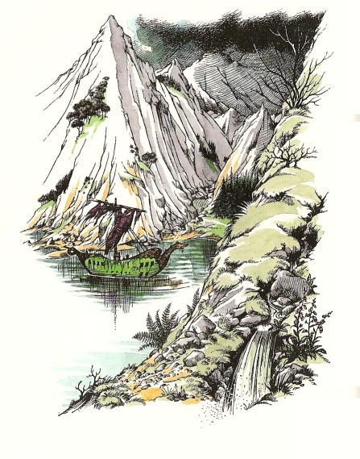
船の全員が、二せきのボートに乗って上陸しました。だれもかも、川でこころゆくまで水をのみからだをあらいました。そして食事をとり、ゆっくり休んでから、カスピアンは四人の船員を船の番に送り返し、のこりの者たちで、その日の大仕事をはじめました。何もかも、しなければなりません。水のたるには、水をつめなければなりませんし、わるくなったたるは、できるだけなおして、これにも水をつめておかなければなりません。また、できれば松がいいのですが、とにかく一本木を切り出して、マストをこしらえなければなりませんし、帆もつくろわなければなりません。いっぽう狩りをする隊がつくられて、この地に住むえものをしとめにいきます。着物は洗って、つぎをあてること。船のあちこちに、なおすべきこわれ場所が、かぞえきれないくらいあります。それも、朝びらき丸全体が、こうしてはなれてみていよいよはっきりしましたが、いりみなとをはなれたあのみやびやかな船と同じものだとは、見えないくらいでした。今は、きずだらけで色のあせたぼろ船で、だれが見ても難破船と思うでしょう。船員たちも、士官から水夫までみなひどいありさまでした。やせて、青白くて、よく寝てないせいで目を赤くして、ぼろをまとっていました。
ユースチスは、一本の木の下に横になって、みんながこれからの考えをのべあっているのをきいているうちに、気もちがしずんできました。ゆっくり休むこともしないのか？待ちのぞんでいた陸にあがった第一日に、海にいる時と同じように、くたくたになるまで働くらしいのです。するとこの時、すてきに楽しい思いつきが、頭にわきでました。いまならだれも見ていません──あの連中は、あんなひどいものがすきでたまらないように、船のことばかり、しゃべっています。どうしてぼくひとり、この場をはずしてわるいことがあろうか？ユースチスは、島のなかへぶらりと歩みいって、山の上のほうに、すずしい風のかようところを見つけ、ぐっすり気もちよく眠ってみたい、今日の仕事がおわるまで、みんなのなかにくわわりたくないと思いました。そうすれば、元気をとりもどすと、思いました。けれども、ユースチスは、帰り道をまちがえないように、入江と船とをいつも見えるように気をつけておくつもりでした。こんな土地におきざりにされてはかないませんもの。
ユースチスは、ただちに考えを実行にうつしました。寝ていた場所から音をたてずにおきて、木々のあいだをつたわりながら、ごくゆっくりと、なんのめあてもないように歩くふりをして、遠くにうつりました。こうしていけば、だれが見かけたとしても、ユースチスがただ足をのばしているのだと思うでしょう。そのうちにユースチスは、人々の話し声が、どんなに早く、ずっとうしろに消えさったか、あたりが、なんと静かすぎる、むっとする、おぐらい緑の森になってしまったかに気がついて、びっくりしました。するとたちまち、ますます足を早め、いよいよかくごをはっきりときめて、山にはいっていけるような気になりました。
そのために、たちまち森をぬけてしまいました。ゆくての地面はけわしいのぼりになりはじめました。草はかわいていてすべりやすかったのですが、足ばかりでなく手も使って、草山をよじぼることができました。はあはあ息をきらせ、ひたいの汗をいく度もふきましたけれども、根気よくのぼりつづけました。ところで、ユースチス自身はあまり気がつかなかったのですが、こういうことは、ユースチスのとびこんだ新しい生活が、しらずしらずにこの子によく働いていたことを示していたのです。ハラルドとアルバータのユースチス、つまりむかしのユースチスなら、十分もすれば、こんなのぼりをあきらめていたでしょう。
ゆっくりと、いく度か休みながら、やがて山の背にのぼりつきました。そこにいけば島の中心が見えるものと思ってきましたが、そのころは雲が低くまた近くおりてきて、霧の海がわきだしてあたりをつつんでいるところでした。ユースチスは、山の背にこしをおろして、ふりかえりました。ここはずいぶん高くて、入江ははるか下に小さく見え、海はなんキロにもわたってはるばると眺められました。この時山地からふってきた霧が、ユースチスのあたりを、あつくとざしてしまいました。霧はあまり寒くはなく、ユースチスはそこに寝ころがって、気もちよく眠れるように、あちこちとむきをかえてみました。
けれども、どうもおちつけませんでした。あまりゆっくりと寝ていられませんでした。ユースチスは、生まれてはじめて、ひとりきりのさびしさを感じました。はじめのうちこの感じは、ごくゆっくりとそだっていました。それから、時間が心配になりはじめました。あたりには、こそとの音もありません。するとだしぬけに、ユースチスの胸の中に、もう何時間も何時間も寝てしまったのかもしれないという思いが浮かびました。きっと、ほかの者たちは、いってしまっただろう！ユースチスは、あわてふためいてとびおきると、下りはじめました。
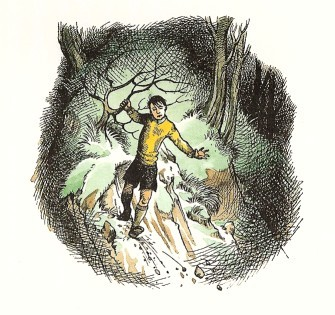
はじめのうち、あまり急いでおりようとしましたので、けわしい草葉をすべって、二メートルほど落ちました。そこで、これでは左がわにいきすぎたと思いました。のぼりぎわに、左手のほうに絶壁があるのを見ていたのです。ですから、もう一度そこから、はじめにおりはじめた場所と見当をつけたあたりへ、よじのぼっていき、そこから、あらためて右手のほうへ下りはじめました。そうすると、今度は前よりもうまくいったように思われました。たいへん注意ぶかくそろそろと進みました。今は一メートルより先は見えませんでしたし、あたりはあいかわらず、なんの音もしませんでした。ところで、心の中ではたえず「急げ、急げ、急げ」と声がしているのに、注意深くそろそろ歩かなければならないのは、とてもやりきれないものです。ひと時ごとに、じぶんがとり残されたのだというおそろしい思いが強くなりました。もしユースチスが、カスピアンとペベンシーきょうだいのことをすこしでもわかっていたら、もちろん、その人たちがそんなことをしっこないことを、心得ていたはずなのです。けれどもユースチスは、三人が人間の形をした鬼だとじぶんで信じこんでいました。
「とうとう！」とユースチスは、ごろごろ岩の斜面（こういう岩を、岩くずといっています）をずるずるとすべりおりてきて、ようやく、底の平らなところへ出てきました。「それじゃ今度は、あの森はどこになるだろう？前のほうになにか黒いものがあるな。おや、たしかに霧がはれてきたぞ。」
そうでした。光がひと時ごとに強くなって、ユースチスの目をくらましました。いま、ユースチスは、まるで見知らない谷あいに出ていました。そこからは、海などはかいもく見られませんでした。
６ ユースチスの冒険
ちょうどこのころ、海岸のほうの人たちは、手や顔をあらい、だいたい食事の支度をすませて、ひと休みしていました。三人の弓のうまい組が、入江の北の小高い山にはいって、野生のヤギを二頭しとめて帰り、それを焚火であぶっているところでした。カスピアンは、ブドウ酒を一たる陸あげさせました。これはアーケン国の強い酒で、水でわらなければのめないくらいですから、一たるでじゅうぶんでした。今までのところ、仕事はみんなうまくかたづき、たのしい食事になりました。ヤギ肉が二度めにまわってきてから、エドマンドがようやく、「あのユースチスのやつは、どこだろう？」といいました。
いっぽう、そのユースチスは、見たことのない谷をあちこちさぐり見ていました。谷はせまくてふかく、まわりの崖が切り立っていて、ふかい穴か溝のなかにいるようでした。下の地面には、岩石がごろごろしているあいだに草も生え、あちこちに、黒い焚火あとが、雨のふらない真夏の線路のもり土の両がわによくあるように、ぽつぽつ残っているのが目につきました。ユースチスの十五メートルばかりむこうに、すんだ静かな池がありました。はじめのうち、この谷間には、なにも見えませんでした。けものもいず、鳥もいず、虫一ぴきいませんでした。日がかっとさして、山のぶきみな峰々のとがりが、谷のはずれからあらわれてきました。
ユースチスは、もちろん、霧にまぎれてまちがった斜面をおりてしまったことがわかりましたので、すぐにじぶんの来たあたりをふりかえって、ひきかえせるかどうかをたしかめました。そして思わずぞっとしてしまいました。運のよさにおどろいたのですが、どうみてもおりる場所はそこ一つしかないところをたどってきたのです。しかもそこは、おそろしくけわしくてせまい、一すじの草つきの土のはり出したところで、その左右はきりたつ崖なのです。もどれる道は、そのほかにありません。しかもそのじっさいの様子をまざまざと見てしまって、どうしてとりつくことができましょうか。ユースチスは、考えただけで、目まいがしました。
そこでふたたび、ゆくてをむいて、とにかくまず、池の水をたっぷり飲んだほうがよかろうと思ったのです。ところが、ふりかえったばかりで、谷へ一歩ふみだそうとした時に、うしろのほうに物音をききつけました。それは小さな音にすぎませんでしたが、あたりが静かすぎるので、大きくひびきました。そのためにユースチスは、こおりついたように、しばらくその場にくぎづけになりました。それからそっと首をまわして、そちらを見やりました。
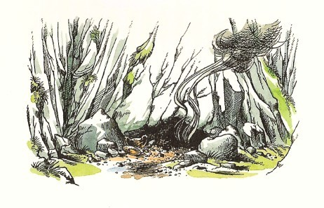
いまいるところからすこし左によった崖の根もとに、低いくらい穴が一つあいていました。きっと洞穴の入口でしょう。そしてそこから二すじのかすかな煙がたちのぼっていました。そのくらい穴の中にある地面の石ころが動いていて（それが、ユースチスのきいた音だったのです）穴のなかのくらやみで、何かがはっているようでした。
なにか、はってくるものがいる。いや、もっとわるいことに、それかあらわれ出てきたのです。エドマンドやルーシィなら、またわたしたちならすぐさまそれがなんだかわかったことでしょうが、ユースチスは、そういうことを記した正しい本を一つも読んだことがありませんでした。洞穴から出て来たものは、かれの夢にも思ってみなかったものでした。鉛のような色をした長い鼻づら、にぶい赤い眼、鳥の羽根も獣の毛皮もまとわぬ、くねくねと地面にわだかまる長いからだ、クモのように背よりも高く肘をつき立てた足、するどいかぎ爪、石にこすれてぎしぎしいうコウモリのようなつばさ、長い長い尾、そして二すじの煙は、その二つの鼻の穴から出ているのでした。ユースチスは、竜ということばを一度も思いつきませんでした。また思いついたとて、竜がいなくなるわけでもなかったでしょうが。
けれども、もしユースチスが竜のことをいく分でも知っていたら、この竜のふるまいを見て、すこしびっくりしたにちがいありません。その竜は、起きあがって、つばさをうごかしたりしませんし、口から炎をはき出しもしません。鼻から出る煙も、きえかかった焚火の煙のようです。それにユースチスにまるで気がつかないようでした。それは、ひどくゆっくりと、池のほうへ動いていき、おそいばかりか、ずいぶん休みをとるのです。おそろしいながらもユースチスは、これが年よりで、悲しげなものだと思いました。そして、いっそう勇気をふるって、あののぼり道をかけあがってみようか、と考えました。けれども、かすかな音をたてても、あれは気がつくでしょう。そして、元気をふるってかかってくるかもしれません。たぶん、弱ったふりをしているだけでしょう。とにかく、空をとべるやつからにげて、山へのぼろうとしても、なんになるでしょうか？
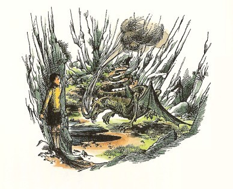
そのものは、池にたどりついて、おそろしいうろこのついたあごを、砂利にこすりつけて、水を飲むためにずらせていきました。けれども、水を飲む前に、すさまじく大きなきしむ音のような、ぶつかる音のような叫びをあげて、いく度かよじれて、ひきつけをおこしたあと、からだを横にしてごろごろところがり、空中に片足をさしあげたまま、ぴたりと動かなくなりました。わずかな黒い血がその大きくあけた口からほとばしり出ました。鼻から出ている煙は、たちまちに黒くなって、やがてぷつりと消え去り、それきりもう何も出るものがなくなりました。
かなり長いあいだ、ユースチスは動けませんでした。きっとこれが、あのやつの使うごまかしで、あれで旅人たちをひきよせて殺すのだろう、と思いました。けれども、だれでも永久に待つことはできません。ユースチスは、一歩近より、さらに二歩いって、ふたたびとまりました。竜は、動かないままでした。ユースチスはその上、その赤いかがやきが眼から消えていることも気がつきました。とうとうユースチスは、竜のそばにきました。そして、竜が死んでいることを知りました。ぞっとしながらも、さわってみました。何もおこりませんでした。
ほっと、すっかり安心したもので、思わずユースチスは、大声で笑いそうになりました。ただ死ぬのを見たというのではなくて、まるでじぶんが戦って竜をしとめたような感じがしはじめました。ユースチスは、竜をまたぎ越して、水を飲みに池にいきました。もう暑さは、がまんができないくらいでした。その時、雷の音がしましたが、べつにおどろきませんでした。雷がなったすぐあとに、日が雲にかくれて、ユースチスが水を飲みおわらないうちに、大つぶの雨がふってきました。
この島の天気は、まことによくありません。一分もたたないうちに、ユースチスは、びしょぬれになり、ヨーロッパでは見られないようなはげしい雨足のために、どちらも見えなくなりました。雨がつづいているあいだは、この谷間から山をこえて出ていくことなどは、もってのほかの話です。ユースチスは、雨やどりの場所としては、そこしか見えないので、竜の洞穴へにげこみました。なかに寝そべって、ひといきいれようとしたのです。
ふつう竜の岩屋といえば、わたしたちは、何があるか知っていますが、これまでいいましたように、ユースチスは、つまらぬ本ばかり読んでいたのです。つまり、輸出入とか、政府の政策とか下水施設とかばかりやたらに書いてある本は、竜のことはさっぱりだめなものです。ですから、いま、ユースチスは、じぶんが寝ている地面がなんだろうと思ったわけでした。石ころにしてはとがりすぎるし、いばらにしてはかたすぎるし、丸い平たいものがたくさんあるようで、動くとからから鳴るのです。洞穴の入口なら、しらべてみられるあかるさがありました。もちろんユースチスも、それをしらべて、わたしたちならとっくに承知のもの、宝物だということがわかりました。冠があり（これがごつごつしたのです）、金貨あり、指輪や腕輪、金のコップや皿、金のかたまりや宝石類がありました。
ユースチスは、ふつうの子とちがって、宝物を大したものだとは思いませんでしたが、わが家のルーシィの寝室にかかっていた絵のなかに、あんなふうにばかばかしくもよろめきこんでやって来たこの新しい世界では使えるものだと、すぐにさとりました。「この国では、これに税金がかからないし、政府に宝物を渡さなくてもいいしなあ。こんなものをすこし使えば、ここではけっこう楽にくらせるぞ──カロルーメンの国なら、申し分ないや。このあたりでは、そこが、どうもいちばんまともなところらしいからな。けど、どのくらいもっていけるだろう。この腕輪なら──ここにはめこんであるのは、きっとダイヤだな──ぼくの手首にはいるぞ。大きすぎるけど、肘の上にはめれば、大じょうぶだ。それからポケットにはダイヤをいっぱいいれていこう。金より楽だもの。それにしても、このいまいましい雨は、いつあがるかな？」ユースチスは、宝の山のなかでも、いごこちの悪くない場所をさがして、金貨のどっさりあるところに、寝そべって、待っていました。ところがひどくびっくりしたことが、一度すぎさると、ことにそのうえ山を辿ってきたあとでしたから、すっかりくたくたになってしまったのでしょう。ユースチスは、ぐっすり眠ってしまいました。
こうしてぐっすり眠っていびきをかいているころ、入江の岸にいる人たちは、食事をおわって、ユースチスのことを本気で心配しだしました。みな、「ユースチス！ユースチス！おーい！」と叫び、やがてのどをからしてしまい、カスピアンは、角笛をふきました。
「いまいましいやつだなあ。いったいぜんたい、何がしたくて、こそこそでかけたんだろう？」とエドマンド。
「でも、なんとかしなけりゃいけないわ。」とルーシィ。「道にまよったのよ。穴のなかへおちたのか、どこかにつれていかれたのかもしれないわ。」
「それとも、猛獣にころされたか。」とドリニアン。
「そうだったら、うまいやっかいばらいだぞ。」とラインスが口のなかでいいました。
「ラインスどの、」とリーピチープが「あなたのお人柄にふさわしからぬことを、おおせられるな。あの者は、わたしの友ではありませんが、女王の身内です。それにわれらが仲間のひとりであるからには、あの者を見つけるか、死んでいれば仇をとげるのが、われらの心ばえですぞ。」といいました。
「もちろん、見つけ出そう。（見つけ出せればだが、）」とカスピアンはうんざりしたようにいいました。「それがじつにやっかいなのだ。つまり、そうさく隊を出したりして、つぎからつぎにめんどうがおこるのだ。ユースチスときたら！」
そのあいだも、ユースチスは、眠りに眠って、なおも眠っていました。そのユースチスの目をさまさせたのは、腕の痛みでした。月が洞穴の入口にさしこんでいて、宝物のベッドは、いままでよりはるかに気もちよくなったように思われました。じっさいユースチスは、ごつごつした痛みをちっとも感じなくなっていました。はじめ、腕の痛みがへんだと思われましたが、やがて気がついてみると、肘の上におしあげた腕輪が、いやにきつくしまっているのでした。眠っているあいだに、その腕がふくれたにちがいありません（それは左腕でした）。
ユースチスは、左腕のぐあいとくらべてみようとして、右腕を動かしてみましたが、二センチも動かさないうちに、動かすのをやめて、おそろしさのあまりくちびるをきゅうとかみました。すこし右手の目の前に、おりから月の光に照らされて、くっきりと洞穴の地面におちた、ものすごい影の動くのを見たのです。ユースチスはその影を知っていました。それは竜の足さきの爪でした。ユースチスが手を動かすたびに、影が動きます。手をとめると、影もとまります。
「ああ、なんてぼくは、ばかだったんだろう。もちろん、あいつには仲間がいて、ぼくのそばで寝てるんだ。」
いく分かのあいだ、ユースチスは、じっとからだを動かさずにいました。すると、目の前に月光に黒々と、二すじのあわい煙がのぼるのが見えました。あの竜が死ぬ前に、鼻から出していた煙と同じようでした。びっくりして息をのみました。二すじの煙の流れが消えました。もう息がつめられなくなって、そっと息をしてみました。ただちに二すじの煙が、ふたたびあらわれました。けれども、こうなってさえ、ユースチスは、ほんとうのことに気がつきませんでした。
やがてユースチスは、そっとそっと左がわにいざりよっていって、洞穴からはいだしてみようと、かくごをきめました。たぶん、そのやつは、眠っているだろう。とにかく、それだけがチャンスだ、というわけです。けれども、もちろん左がわによっていく前に、左がわをながめました。すると、なんということ！左がわにも、竜の足さきがあるではありませんか！
この時ユースチスが涙をながしたからといって、だれもユースチスをあざける者はありますまい。しかしユースチスは、じぶんの涙が目の前の宝の上に、しぶきをあげて落ちるのを見て、あらためて涙のつぶの大きさにたまげました。しかも、おどろくほど熱くて、涙から湯気がもうもうとあがるのです。
けれども、いたずらに泣いている場合ではありません。なんとかして、両がわの竜からはい出してにげのびなければなりません。そこで、右腕をのばしはじめました。すると右がわの竜の前足も、まったく同じかっこうをしました。つぎにユースチスは、左腕をのばそうとしてみました。今度は、そちらがわの竜の足が、そっくりに動くではありませんか。
両がわの竜がそれぞれに、ユースチスが何をしても、そのまねをするのです！ユースチスはもうとてもがまんできなくなって、ひたすらにげだすばかりでした。
やみくもに洞穴から出ようともがくだけ、がらがらごとごと、金がなり宝石がこすれて、やかましい音がしますので、ユースチスは竜どもが追いかけてくるのだと思いました。あとをふりむく気がしません。夢中で池に進みました。月光をあびて、のびている死んだ竜のねじまがったからだは、それだけでも人をおどろかすでしょうが、今はとてもそれどころではありません。頭には、ただ水べにいく考えがあるばかりでした。
けれども、ユースチスが池のほとりにつくと同時に、二つのことがおこりました。その一つは、じぶんが手足全部をつかって走ってきたということが、とつぜん思い浮かびました。いったいどうして、そんなことをしたんだろう？その二つめは、水の上にからだをかがめた時、ほんのしばらく、もう一つの竜が、池の中からじぶんを見つめているのだと思ったことでした。けれども、たちまちに、ユースチスはほんとうのことをさとりました。池の竜の顔は、じぶんの水かがみだったのです。もはや、うたがいはありません。じぶんが動くと、そちらも動きます。口をあけてとじると、やっぱり口をあけてとじるのです。
ユースチスは、眠っているあいだに、竜になってしまったのです。
竜の宝ぐらで、竜の欲ぶかい心をいだいて眠って、じぶんが竜になったのです。
これで、すべてのことが説明できました。洞穴の中でユースチスのそばに、二ひきの竜はいなかったのです。右の前足も左の前足も、じぶんの右足、左足だったのです。煙二すじは、鼻づらの二つの穴から出ていたのです。左腕の痛みは（というよりも、もと腕だったところの痛みは）、左目で横目をつかって、どうなったかの様子をながめることができました。男の子の左上膊にしっくりとはまった腕輪は、いまや竜のぶあつい、ずんぐりした前足にとって、とてもともて小さすぎました。そして、うろこのついた肉のなかにふかくくいこんだ腕輪の両がわに、どきどきと脈うつふくらみができていました。ユースチスは、竜の歯でそこをくいちぎろうとしましたが、とりさることができませんでした。
痛いことは痛かったのですが、はじめに感じたのは、まずほっとした気もちでした。もうこわがる相手はありません。今はじぶんがだれからもこわがられるもので、勇ましい騎士（騎士ならだれでもというものじゃありません）ででもなければ、じぶんにかかってくる者はいないのです。今ならカスピアンやエドマンドさえ、やっつけることができます。
でもユースチスがこう考えたとたん、かれらをやっつけたくないことがわかりました。友だちでいてもらいたかったのです。人間たちのあいだに帰って、しゃべったり笑ったり、何でもいっしょにしたかったのです。ところが、はっきりと今、人間ときりはなされた怪物になったことがわかりました。ぞっと身にしみるさびしさが、おそってきました。ユースチスはようやく、ほかの人たちが決して鬼でなかったことが、わかりました。そしてじぶんがいつもそう思いこんでいたようなりっぱな人物だったろうかと、あやしみだしてきました。あの人たちの声がききたくてたまりませんでした。リーピチープからでさえ、やさしいことばをかけられたら、どんなにうれしがったことでしょう。
こう考えてきた時、ユースチスだったかわいそうな竜は、声をはりあげて、泣きました。月の光にてらされて、人気のない谷底で、強い強い竜が、目から涙を流して声をあげて泣くさまは、その声も様子も、なかなか想像できるものではありませんね。
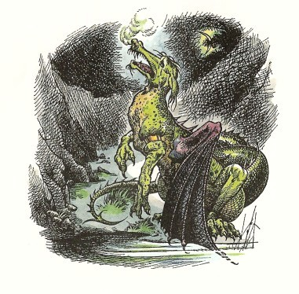
けれどもとうとう、ユースチスは入江にもどる道をみつけようと心をきめました。今は、カスピアンがじぶんをおいて船を出すはずがないことが、わかりました。そしてじぶんがだれのなれのはてか、なんとかしてみんなにわからせることができると、思いました。
ユースチスは、長々と水をのんで、それから（このあとのことは、みなさんもいやな感じをうけられることと思いますが、よく考えてくだされば、そういうものではないのです）死んだ竜をほとんど全部食べました。食べている途中で、じぶんのやっていることがわかりましたが、ご存じのように、その心はもとのユースチスの心でありながら、その好みや胃ぶくろの働きのほうは、竜のものでした。それに、竜ほど、竜の肉をすきなものはないのです。だからこそ、一つの国に竜を一ぴき以上見かけないわけです。
それから、ユースチスは、この谷間から山へのぼろうとむきをかえて、ひとはねして、のぼりはじめましたが、はねてみてすぐに、空へまいあがったのがわかりました。つばさのことをまるで忘れていましたが、これはたいしたおどろきでした。いままでの長いあいだに、はじめてあじわったゆかいなおどろきでした。空中高くとびあがって、真下に月光をあびた数えきれないほどの峰々がつらなるありさまをながめました。一枚の銀板のような入江も、いかりをおろしている朝びらき丸も、岸近くの森の中でちらちらする宿りの焚火も、すべて見ることができました。高い高いところから、ユースチスはひといきに人々のほうへまいさがっていきました。
ルーシィは、ぐっすり眠っていました。なにしろ、そうさく隊がユースチスのよい知らせをもって帰ってくるかもしれないと思って、その帰りをずっと待っていたのです。その隊はカスピアンを隊長としていきましたが、おそくなって、つかれはてて帰ってきました。その知らせは、おだやかでないものでした。ユースチスの手がかりが見つからないで、ある谷間で死んだ竜を見たのです。それをなんとかよいように考えようとして、たがいにこんなふうに気休めをいいあいました。つまり、このあたりには、これ以上竜はいないと思われる。その午後三時ごろに死んでいた竜は（その時刻にそうさく隊が見たのです）、それより何時間も前に人を殺しているはずがない、というわけです。
「それとも、あのがきを食って、そのせいで死んだのかもしれない。あいつが、毒をもってたんだ。」ラインスはこういいましたが、そっと小声でいったので、だれにもきこえませんでした。
けれどもその夜おそく、ルーシィは、ふっと目をさましました。すると全員がより集まって、ひそひそ話しているところでした。
「なんですか？」とルーシィがたずねました。
「いまや、かくごのほどをしっかりと示さなければなりません。」カスピアンが、いってきかせました。「一ぴきの竜が、あのこずえの上をかすめてとんできて、浜べにおりたのです。わたしたちと船の間におりたのではないかと、思われるのですよ。矢では竜にははがたたないし、竜は火をちっともこわがりませんしね。」
「なにとぞ陛下のおゆるしをいただきまして──」とリーピチープが、いいだしました。
「いいや、リープ、」と王は、きっぱりいいました。「あれと一騎打ちをしようなどと思うでないぞ。そのことをわたしにかたく約束しなければ、しばりつけておく。われらはここでよく見張りをつづけておいて、あかるくなりしだい、浜べにおりて、うちはたしてくれよう。わたしがさしずをとる。エドマンド王は、右を守り、ドリニアン卿は、左にそなえられよ。ほかの支度はいらぬことだ。あと二時間すれば、あかるくなろう。一時間のうちに、食事をとるように、また酒の残りもくみかわすがよい。ただ何事も、静かに、な。」
「きっと、いっちゃうでしょ？」とルーシィ。
「そうなると、もっと悪いことになるんだ。」とエドマンド。「なにしろ、そいつのいどころがわからないからね。部屋のなかにスズメバチがやってきたら、それが見えるほうがいいじゃないか。」
そののちの夜のあいだは、おそろしいものでした。食事が来て、食べなければと思っても、食べる気のしなくなった者が多くおりました。そして、何時間もまるで時間がたたないように思われているうちに、どうやらくらやみがうすくなり、鳥たちがそこかしこにちゅっちゅっと鳴きはじめ、あたりは夜のうちよりずっと寒くつゆっぽくなりました。するとカスピアンが、「いざ、方々。」といいました。
人々はみな、剣をぬいて立ちあがりました。ルーシィをまんなかにして、ルーシィの肩にリーピチープをのせ、しっかり一団となりました。待っていた時より、ずっとはればれしました。めいめいが、ふだんよりかたく結びつきました。そしてすぐに全員が進んでいきました。森のはずれに出てきたころは、ずっとあかるくなっていました。そして砂浜の上に、大きなトカゲか、くねくねしたワニか、足のある大蛇かのような様子で、すごく大きく、おそろしく、ごつごつしたかっこうで、竜は横になっていました。
けれども、それは一同を見ても、おきあがって火と煙をふくかわりに、あとずさりしたのです。いや、アヒルのようによたよた歩いて──入江の浅い水のなかにひっこんだのです。
「あいつはなんで、あんなふうに、首をふっているんだろう？」とエドマンド。
「こんどは、首をうなずかせている。」とカスピアン。
「目から何かでているようですな。」とドリニアン。
「あら、わかりません？」とルーシィ。「泣いているんだわ。涙ですよ。」
「それは信用なりませんぞ、ひめ君。」とドリニアン。「ワニの涙はそら涙というやつで、こちらの守りをとかせようとはらですぞ。」
「あんたがそういうたびに、首を横にふっていますね。」とエドマンドが注意しました。「そんなつもりではない、というみたいだ。ほら。」
「わたしたちのいうことがわかる、とあんた、思うの？」とルーシィがエドマンドにたずねました。
すると竜が、はげしくうなずいてみせました。
リーピチープが、ルーシィの肩からすべりおりて、竜の前に進みでました。
「竜よ、」とリープの金切り声がひびきました。「こちらのいうことが、わかるか？」
竜がうなずきました。
「口がきけるか？」
首が横にふられました。
「では、そなたに、そなたの用をたずねるのも、かいないことだが、もしそなたが、われらと仲よくやるとちかうなら、そなたの左の前足を頭のうえにあげてみよ。」
竜はそうしました。でもその足が、金の腕輪をはめて、いたんでふくれていたために、みっともないありさまでした。
「あら、あの足は、どこかいけないところがあるのよ。」とルーシィ。「かわいそうに。そのせいで、きっと泣いていたんだわ。だからきっと、アンドロクレスとライオンの話(１)のように、わたしたちになおしてもらおうと思ってやってきたんだわ。」
「気をつけてくださいよ、ルーシィ。」とカスピアン。「これは、とてもりこうな竜だが、うそつきかもしれませんからね。」
けれどもルーシィのほうは、もうかけだしていました。そのあとをリーピチープが、その短い足のゆるすかぎり追いかけていき、そのあとにもちろん王とエドマンドとドリニアンが、したがいました。
「その気の毒な足を、見せてちょうだい。なおせるかもしれないわ。」とルーシィ。
もとユースチスだった竜は、竜になる前に船よいにかかった時、ルーシィの薬がどれほどきいたかを思い出して、いそいそと、いたむ足をさしだしました。けれどもそのかれも、がっかりしました。魔法の液体は、はれをなおし、すこし痛みをうすらがせましたが、金具をとりさることはできませんでした。
だれもかも、まわりをかこんで、ルーシィの処置をみようとしました。するとカスピアンが、だしぬけに大声をあげて、「ごらん！」と叫びました。王は、その腕輪を見守っていました。
(１)アンドロクレスとライオンの話──アンドロクレスは、ローマのどれい。むかし、ライオンの足のとげをぬいてやったことがあったために闘技場でそのライオンから助けられたという。
７ 冒険のなりゆき
「何をです？」とエドマンド。
「金の細工を、見てごらんなさい。」とカスピアン。
「小さな槌と、その上に星のようにダイヤモンドがはめてありますな。」とドリニアン。「おや、これはまえに見たことがあるぞ。」
「見たって？」とカスピアン。「もちろん、あんたは、見たことがあるとも。それは、ナルニアの名家の紋章なのだ。そしてこれは、オクテシアンの腕輪だぞ。」
「この悪党、」とリーピチープが竜にむかって、「きさまが、ナルニアの貴族をくらったのか？」けれども竜は、はげしく首を横にふりました。
「それではきっと、」とルーシィ。「この竜がオクテシアン卿なんだわ。魔法をかけられて、竜になったのよ。」
「そのどちらでもないかもしれないよ。」とエドマンド。「竜は例外なく、黄金を集めるものだ。とはいえ、オクテシアンがこの島からさきにはいかなかったと見るのが、ほんとうだと思うな。」
「あんたは、オクテシアン卿ですか？」とルーシィが竜にききました。するとそれが、悲しそうに首をふりました。「では、だれかに魔法をかけられたの？ええと、あんたが人間で、ということよ。」
それは、はげしくうなずきました。
そこでその時に、ふとだれかが（はじめにそうきいたのは、ルーシィだったか、エドマンドだったかで、のちに人々がいいあったものです）こうたずねました。「まさか、まさか、ユースチスじゃないでしょうね？」
するとユースチスは、おそろしい竜の首をこくこくとうなずいてみせ、海にひたした尾をばしゃばしゃふりました。みんなは、竜の目からざあざあ流れ出るはげしい、にえくりかえった涙をさけようとして、とびさがりました（なかには思わず叫び声をあげた船員たちもありました）。
ルーシィは、いっしんにかれをなぐさめようとして、勇気をふるってそのうろこのある顔にキスしようとさえしました。だれもが「運が悪かったなあ。」といい、なかには、どんな力でもかしてやろうとユースチスにうけあう者もあり、多くの者たちが、魔法をとく方法がきっとある、一日か二日のうちにもとどおりになるといいました。そしてもちろん、だれもみな、ユースチスの話をとてもききたがったのですが、ユースチスは、話すことができません。それからあとの何日か、何度も砂の上に字を書いてみせようとしてみたのですが、それもうまくいきませんでした。第一ユースチスは（まともな物語の本を読まなかったので）じぶんの話をすらすらとのべる語り方を知りません。つぎに、使わなければならない足の筋肉や神経は、竜の足のことですから、ものを書く練習をしたことがなく、とにかく書くようにできてもいません。それに、じぶんでふんづけてしまったり、たまたま尾でけちらしてしまう場所もできましたし。あげくのはてには、ユーチスがおしまいまで書かないうちに、波がよせてきて、洗いながしてしまいました。。そして、人々に読めた字というのは、つぎのようなもので、.........のところは、じぶんで消してしまった場所なのです。
ホク ネムレニ......イクタ、リュウノアナノコト、ソルシンテイタ...ホク
メワサマシ......キタ......コノウテノ......トテクレ
そののち、だれの目にも明らかになったのは、ユースチスが、むしろ竜になって、性質をいれかえてよくなったということでした。ユースチスは、みんなの力になろうといっしんにつとめました。かれは、島じゅうをとびまわって、ここはどこもかも山で、野生のヤギと野生のブタのむれしか住んでいないことを見つけてきました。そしてむれのなかから、船の食糧として、たくさんつかまえて、運んできました。しかしユースチスは、大変情けぶかい殺しやで、尾の一ふりで、そんな獣を片づけてしまうのですから、獣のほうでは、じぶんが殺されたことに気がつかない（おそらくいまだに気がつかないかもしれません）くらいです。もちろん、そういう獣をじぶんでもいく匹か食べましたが、いつもひとりになって食べました。竜になっている身では、生肉がすきですが、じぶんのきたならしい食事のありさまを見られるのは、がまんができなかったからです。またある日は、ゆっくりと、くたびれながらも、じぶんの手柄をほこらしく、空をとんで、野営地に大きな松の木をもち帰ったことがありました。その大木を遠い谷で根ごとひきぬいて、中心になるマストにするためでした。また夜になって、雨がひどくふったあとによく寒くなった時などは、竜がみんなのよりどころになりました。というのは、そんな時、船の全員が、その暖かいおなかに背中をもたせかけてすわりますと、ちょうどよくあたたまって、からだがかわきましたし、竜のはげしい息でひとふきすれば、どんなにもえたたないでこまっている焚火も、ぱっともえあがるのです。時によると、人をえらんでいくにんも背中にのせ、ひととびしてやることもありました。すると、乗っている人たちは、ぐるりと飛びながら下を見て、緑の山腹や岩々や峰や、せまいたて穴のような谷をながめ、海のかなた東のほうに、まっ青な水平線に浮かぶ一点のこい青をのぞんで、陸かもしれないと思いました。
人にすかれるという楽しさ、それ以上にまたほかの人をすきになるという楽しさが、ユースチスが世をはかなむ気もちを救ったのです（楽しさというものは、ユースチスにとってまったく新しい体験でした）。なにしろ竜になったのは、この上なくやりきれないことですもの。ユースチスは、山の湖の上を飛ぶ時にじぶんの影がうつるのを見ると、いつもぞっとしました。じぶんの大きなコウモリのようなつばさがきらいで、背中に出たのこぎりのようなぎざぎざがきらいで、おそろしいまがった爪がきらいでした。そしていつも、じぶんひとりでいることがおそろしいくせに、ほかの人たちといっしょにいるのがはずかしいのでした。夜になって、じぶんが湯たんぽがわりに使われないような日は、こっそりと野営地からはなれていって、森と海の間にきて、蛇のようなとぐろをまいて、ひとりで寝ました。そんな時に、ユースチスがとてもびっくりしたのは、リーピチープがいつも変わらずに、なぐさめにやってくることでした。この心の気高いネズミは、野営の焚火につどう楽しい人の輪からぬけだして来て、竜の鼻煙のかからないように風上にまわって、その顔のそばにすわるのがいつものことでした。そしてネズミは、ユースチスの身におこった出来事は、運命のめぐりをよくしめした心うたれる例だと話してきかせ、もしナルニアのじぶんのやしきにユースチスをむかえいれたなら（といってもリーピチープのやしきとは、家ではない穴ですから、竜のからだはもちろん、その首もはいらないでしょう）、皇帝や王や貴族や騎士、詩人や恋人や天文家や哲学者や魔法使いの百人をくだらない人々が、いまをさかりの人生からどん底の悲運におち、そのなかから多くの者が、ふたたび運をもりかえして、それからずっと幸せにくらしたという例を、見せてあげようと、いいきかせました。こういうなぐさめは、その時にはあまりきかないように思われますが、その親切は身にしみて、忘れられませんでした。
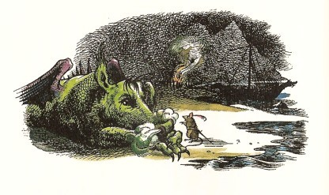
けれども、もちろん、だれの心にも雲のようにかかっている心配は、いよいよ船出する時がきたら、竜をどうしたらいいかという問題でした。みんなは、竜がいるところでは、つとめてその話をしないようにしました。けれども、ユースチスもいろいろなとりざたを耳にはさまないわけにいきませんでした。「かれは、甲板の片がわにおさまるだろうか？そうとしたら、つりあいをとるために、下にいれてある品物を全部反対がわにうつさなければなるまい。」とか「つなをつなげてひいていくほうがよくはないかね？」とか、「あれが、ずっと飛びつづけていくことはできないかしら？」とか、「それにしてもいったい、どうやってやしなっていくのかね？」（この質問がいちばんよく出されました）とか、いう話がきこえるのです。そしてかわいそうなユースチスは、そもそも船に乗った第一日からじぶんが、まぎれもない厄介者だったこと、いまはそれよりもひどい厄介者になっていることを、ますますはっきりとさとりました。そしてそのことは、あたかも腕輪が前足にくいこんだように、心にくいいりました。腕輪のことは、大きな歯でそこをくい破っては、ますます悪くなるだけだと、じゅうぶん知っていながら、やはり時々、とくにむしあつい夜などには、わが身をひきさかないわけにいかないのでした。
この竜の島に上陸してから六日たったころ、たまたまエドマンドは、朝早く目をさましました。まだうす暗くて、入江とのあいだにある林の木々はようやく見わけがつきますが、森のおくのほうは黒くて見えないくらいでした。目をさますと、何かが動いている音をきいたような気がして、片肘をついてからだを起こし、あたりを見まわしました。するとやがて、森の海がわに、黒く動く者の姿が見えたようなのです。その時すぐに、エドマンドの心に浮かんだ考えは、「この島にいっこう住人たちがいないというのは、ほんとうかしら？」といううたがいでした。つぎに、カスピアンらしいと思いました。ちょうどそのくらいの大きさの物かげでした。けれども、そのカスピアンが動かないでじぶんのとなりで眠っているのを、見ることができました。じぶんの剣がおいた場所にちゃんとあるのをたしかめてから、ひとつしらべてやろうと、起きあがりました。
エドマンドが、そっと森のさかいに出てみますと、その黒いかげは、まだそこにいました。カスピアンにしては小さすぎるし、ルーシィにしては大きすぎるのがわかりました。それは、にげさりませんでした。エドマンドは剣をひきぬいて、見知らぬ者にいどみかかろうとした時、その者が、低い声で、よびかけました。
「きみは、エドマンド？」
「そうだ。そちらは、だれだ？」とエドマンド。
「ぼくを知らないの？」その者がいいました。「ぼくだよ──ユースチスだよ。」
「なに？ なんてこった。たしかにそうだ。きみ──か。」
「しーっ。」とユースチスがいって、たおれようとするかのように、よろめきました。
「おい！」とエドマンドが、からだをささえました。「どうしたんだ？病気なのか？」
ユースチスは、長いあいだ口をききませんでしたので、エドマンドは、ユースチスが気を失ったのだと思いました。けれども、ようやくにして、ユースチスがいいました。
「ああ、おそろしいことだった。きみにはわかるまい......だが、もう大丈夫だ。ふたりでどこかで話せないかな。まだほかの人たちと顔をあわせたくないんだ。」
「いいとも。さあ、きみのいいと思うところにいこう。」とエドマンド。「それじゃあそこの岩の上にでもすわろうか。ねえ、ぼくはきみにあえたのが──その、ふたたびきみのすがたを目にできたのが、うれしいんだ。きみは、ずいぶんやりきれない時をすごしたことだろうな。」
ふたりは岩の上にいって、入江をすっかり見渡しながら、その上にすわりました。そのあいだに、空はいよいよ白み、星はみな消えて、一つだけ低く水平線の近くに、ことさらあかるくかかっているのがあるばかりです。
「ぼくがあの、竜になったてんまつは、ほかの人たちにも話し、全部かたをつけるまでは、きみにも話したくないんだ。」とユースチスがいいはじめました。「じつは、竜だったことも、ぼくがこっちにやってきて、きみたちがみんなそのことばを使っているのをきくまでは、知らなかったんだ。いまは、その竜でなくなったしだいを、きみにきいてもらいたいんだ。」
「どんどん、話してくれ。」
「うん。ゆうべは、いままでになく、みじめだった。それにあのやりきれない腕輪が、すごく痛くて痛くて──」
「いまはもういいのかい？」
ユースチスは、笑い出しました。それは、むかしよくきかれさた笑い方とは、まるでちがうものでした。そしてユースチスは、腕からやすやすと腕輪をはずしてみせました。「ほら、これだ。」こういって、「ぼくはいらないから、この腕輪はすきな人がはめればいいよ。ところで、さきの話、ぼくは目をあけて寝たまま、いったいぼくはこれからどうなるだろうとしきりに考えていた。するとその時──けれどもね、いいかい、これは全部、夢だったのかもしれないんだ。ぼくにはわからない。」
「まあいいから、話をつづけろよ。」エドマンドは、ずいぶんしんぼうして、いいました。
「よし、その時とにかく、ぼくは目をあげて、およそぼくの予想もしていなかったものを見たんだ。ぼくのほうへゆっくりやってくる大きなライオンだった。そしてふしぎなことに、きのうは、月が出ていなかったにもかかわらず、ライオンのいるところには、月光がみなぎっていた。そうしてそれは、だんだん近くへやってきた。ぼくは、すごくそれがおそろしかったよ。竜であれば、ライオンごときは、あっさりやっつけることができると、きみは思うかもしれない。けれども、そんなこわさではない。それがぼくを食べるかとおそれていたんじゃない。ただそのものが、おそろしかったんだ。わかるかねえ。で、それはいよいよぼくにせまってきて、ぴたりとぼくの目を見つめた。それでぼくは、必死で目をとじたんだ。ところがそんなことをしてもだめだった。それがぼくに、ついてこいといったからなんだ。」
「ライオンが、しゃべったのか？」
「それがわからない。きみにそういわれてみると、口をきいたとは、思えないんだ。けれども、それは、そういうことをぼくにつげた。そしてぼくは、それがつげたことをしなけりゃいけないことがわかったから、起きあがって、そのあとへついていった。するとそれは、山のなかへ長い道のりを案内していく。そしてぼくたちのいくところにはいつも、そのライオンの上に、またまわりに、月の光がさしているんだ。やがてぼくたちは、これまで見たことのない山のいただきに出た。そのいただきには、庭があったよ。木々やくだものやなにやかやがあってね。そのまんなかに、井戸があった。
底からふつふつと水がわきあがってくるのを見て、それが井戸だということがわかった。けれども、たいていの井戸より、ずっと大きいんだ──とても大きくて、水のなかへおりていく大理石の階段のある丸いプールでね。水はあくまでも澄みきっていて、もしそこにはいって水につかれば、足の痛みがとれるだろうと思った。けれどもライオンは、まず着物をぬがなければいけないという。いいかい、ちゃんとことばを口に出して、そういったかどうか、わからないんだ。
で、ぼくは、どんな着物も着ていないから、着物はぬげないといおうとしたが、その時いきなり、竜は蛇みたいなものだし、蛇はころもをぬぎすてることができるじゃないかと思いついた。そうだ、ライオンがそういうのも、もちろん、そういうことだとぼくは思った。そこでぼくは、からだをひっかきはじめた。するとからだじゅうのうろこが、はがれだしてきたんだ。それから、もっとふかくひっかいてみた。すると、うろこがあちこちはがれるかわりに、からだのかわ全体が、ぺろりと、まるで病気のあとのように、それこそバナナの皮みたいに、むけはじめた。一、二分のうちに、ぼくは、皮のなかからおどり出た。ぼくのそばに、竜の皮がのびているのを見ると、なんだかいやらしいものだったね。気もちがとてもすっきりした。そこでぼくは、水にひたろうと井戸におりていくことにした。
けれども、水の中に足をつけようとしたとたんに、下を見て、その足が前とおなじように、かたくて、ざらざらして、しわがよって、うろこができているのを知った。ああ、それならそれでいい、とぼくはいったね。はじめの皮の下に、もっと小さい皮をきてたんだ。それなら、そいつもぬがなけりゃならないぞってね。そこでぼくは、ふたたび、かきむしって、もう一枚の皮をかたわらにぬぎすてると、水をあびに井戸におりていった。
ところが、その時もう一度、前とそっくりおなじことがおこった。それからぼくは、ひそかに思ったね。やれやれ、どれほどたくさんの皮をぬぎすてなけりゃならないのかって。こうしてぼくは三度めに、からだをひっかいて、三枚めの皮を、前とおなじようにぬぎすて、そのなかから出ていった。けれども、水かがみにうつるぼくを見るやいなや、やっぱりだめだということがわかった。
その時、ライオンがこういった──いや、しゃべったかどうかはわからないが──おまえは、わたしにその着物をぬがさせなければいけない、とね。はっきりいうと、ライオンの爪がおそろしかった。けれども、ぼくももう、やぶれかぶれさ。そこで、ライオンにむいてもらうために、その場にあおむけに横になったのだ。
ライオンが爪をたてた第一のひきさきかたは、あまりふかかったものだから、それが心臓までつきさしたと思ったくらいだった。そしてそれが皮をひきはがしはじめると、いままで感じたことがないほどはげしく痛んだ。そのぼくをがまんさせてくれたのは、ただ、いやなものがはがれていく気もちのうれしさひとすじさ。きみも、傷口やおできのかさぶたをはがしたことを、思いだせばわかってくれるね。からだがさけるほど痛くて、悲鳴がでそうなんだが、皮がむけていくのを見るのは、とてもゆかいだった。」
「きみのいうこと、はっきりわかるよ。」とエドマンド。
「で、ライオンは、いやらしいものをめりめりとむいていった。前に三度じぶんでやったのとおなじぐあいだと思えた。もっとも、じぶんでやった時は痛くなかったけど。そして皮が草の上に横にしてあった。ただ、いままでのよりは、はるかにあつく、黒く、でこぼこしたかっこうのものだった。それにぼくは、皮をむいた若枝のようになめらかで、いままでよりも小さくなっていた。するとライオンは、ぼくをぎゅっとつかんで──もう皮をかぶっていないで、とてもしなやかなからだになっていたから、こんなにつかまれるのは、いやだったなあ──ぼくを水のなかにほうりこんだ。その瞬間ばかりは、もうれつにずきずきしたよ。そのあとすっかりいいぐあいになって、なかで泳いだり、ばしゃばしゃ水をはねかせたりしはじめると、腕のあれほどの痛みがきれいにとれていることが、わかった。その時に、ぼくは、どうしてだか、そのわけを知ったよ。ぼくがふたたび男の子にもどったんだ。そのじぶんの腕のことを、その時どう感じたかをきみに話してきかせても、とてもわかってもらえないだろうな。ぼくの腕には強い筋肉がなくて、カスピアンのにくらべたら安っぽいものだけれども、その腕をながめるのが、しみじみうれしかった。
それからしばらくして、ライオンはぼくを井戸からあげて、着物をきせ──」
「着物をきせた？ あの足さきでか？」
「それが、あまりはっきりおぼえていないんだ。けれどもライオンが、なんとかやってくれたんだ。新しい服でね、ほら、事実、いまこうしてその服を着てるじゃないか。それから、だしぬけに、ここにもどされたんだ。そしてこういうことが、夢だったにちがいないと、ぼくに思わせるんだよ。」
「いいや。それは、夢ではなかったんだ。」とエドマンド。
「どうしてだ？」
「いいか、その一つには、ここにその服があるだろ。もう一つには、きみはもう──なんというか、竜じゃないからだ。」
「それじゃ、あのライオンは、どう思う？」
「きみは、アスランに会ったのだ、と思うよ。」
「アスラン！」ユースチスがいいました。「ぼくたちが、朝びらき丸に乗りこんでから、いく度もその名が口にされるのをきいてきた。そしてぼくは──どうしてだかわからないがその名をにくいように思っていた。けれどもそのころ、ぼくはなにもかも、にくらしかったんだ。ついでに、あやまらせてもらうよ。じぶんがどんなにいやらしいやつだったかと思うよ。」
「そんなことはいいんだ。」とエドマンド。「きみにだけいうけど、ぼくがはじめてナルニアへでかけていったころほど、きみは悪くなかったさ。きみが、とんまのロバにすぎなくとも、ぼくは、裏切者だったんだよ。」
「なに、そんなこと、いわなくたっていいさ。」とユースチス。「でも、アスランというのは、だれなんだ？きみは、知ってるの？」
「うん、あのひとは、ぼくを知ってるよ」とエドマンド。「あのひとは、偉大なライオンで、海のかなたの国の皇帝のむすこでね、ぼくを救い、ナルニアを救ってくれたんだよ。ぼくたちは、みなあのひとに会っている。ルーシィは、いちばんよくあのひとに会っているよ。それに、ぼくたちが船をむかわせているところは、アスランの国かもしれないんだ。」
しばらくは、どちらも何もいいませんでした。さいごのあかるい星が消えて、ふたりには右手にそびえる山々のために日ののぼるところが見えませんでしたが、頭上の空と目の前の入江たちが、バラ色にそまるのを見て、朝日ののぼったことを知りました。そのうちに、オウム類の鳥たちが、うしろの森でキィキィとなきさけび、木のまにごそごそ動く音をきいて、とうとうカスピアンの角笛の一ふきを耳にしました。野営地はにわかに動きだしました。
エドマンドと、もとどおりになったユースチスとが、焚火をかこむ朝ごはんの人の輪のなかにはいっていきますと、むかえるよろこびは大したものでした。そしてこんどは、もちろん全員が、ユースチスの竜になったてんまつをききました。人々は、ほかの竜がいく年も前にオクテシアン卿を殺したのか、オクテシアンが、あの年より竜になったのか、わかりませんでした。ユースチスが洞穴でポケットにつめこんできた宝石類は、あの時きていた服といっしょに見えなくなりました。けれども、ユースチス自身はもちろんのこと、だれも谷までひきかえして、もっと宝物をとってこようという者はありませんでした。
五、六日のうちに、新しいマストをたて、よそおいをぬりかえ、食物をつめこんだ朝びらき丸は、出帆しようとしていました。一同が船に乗りこむ前に、カスピアンは、入江に面したなめらかな崖のおもてに、つぎのようなことばをほりきざませました。
竜 ノ 島
なるにあ王、かすぴあん五世ノ発見スルトコロ。
治世四年。サッスルニ、コノ島ニテおくてしあん卿没ス。
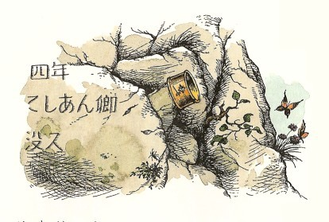
その文句に、「ソレヨリゆーすちす、別の少年ニ生マレカワリタリ」といれたら、すてきだったでしょうし、またかなりほんとうのところだったでしょう。しかし、きびしいいいかたをすれば、ユースチスは、ちがった男の子になりはじめたところでした。あともどりもありました。とてもいやな子になった日もずいぶんありました。けれども、そんなことをとがめていたら、しかたがありません。とにかく全快にむかってすすみはじめたところでした。
オクテシアン卿の腕輪は、ふしぎな運命にあいました。ユースチスは、それをほしがらずにカスピアンにあげました。カスピアンはルーシィにあげました。ルーシィは、腕輪をつける気がしませんでした。「よろしい、それでは、ほら、すきなところへまいるがよい。」カスピアンはこういって、腕輪を空中に放りあげました。人々が、刻まれた銘をながめてそのまわりに立っていた時でした。腕輪は、日にきらめいて、空中にあがり、落ちてきて、まるで名人の輪投げのように、高い岩の小さなとがりに、みごとにひっかかりました。だれも下から、それをとりにのぼれませんし、だれも上から、とりにおりられないところでした。そしてそこに、わたしの知るかぎりでは、いまだにかかっているはずで、この世の終わりまでかかっているかもしれません。
８ すんでのところをにげだす
竜の島から朝びらき丸がはなれた時は、だれもかもよろこばしい気もちでした。入江をでるがはやいか、順風にのって、あくる朝早いうちに、ある知られない陸地がやってきました。そのある部分は、ユースチスがまだ竜だったころに、山の上をとんで見かけたものでした。そこは低い緑の島で、ウサギとすこしばかりヤギがいるくらいで、だれも住んでいないのですが、石小屋のあとがあり、火がもえて黒ずんだあとがあるところから、一同は、あまり昔にならないころ、人々が住んでいたと考えました。その上、そこに骨や、こわれた武器がありました。
「海賊のしわざだ。」とカスピアン。
「竜のせいかもしれない。」とエドマンド。
一同がここで見つけたほかのものといえば、ごく小さな皮ばり舟、いわばひとり乗りのざる形舟が、砂の上にあったくらいでした。ヤナギの枝かつるであんだざるのような形の上に、なま皮がはりつけてあるものです。一メートルすこしほどの長さの小さな船で、なかにいれてあったかいも、そのわりで小さいものでした。子どものためにこしらえたものか、それとも、ここにいた人々が小人だったか、どちらかが使ったものと思いました。リーピチープは、じぶんにちょうどよいものですから、その船をもっていくことにしました。それでそれは船につまれました。一同はここを、焼けあと島と名づけて、昼前に船出しました。
五日ほどのあいだ、船は南南東の風にまかせて、陸地を見ず、魚もカモメも見かけずに走りました。それから、午後まではげしく雨のふった日がありました。ユースチスはリーピチープとチェスをたたかわして二度まけてしまい、前のようないやらしいじぶんにもどりかけました。エドマンドは、みんながスーザンといっしょにアメリカにいっていればよかったんだといいました。その時ルーシィが船室の窓からそとをながめて、いいました。
「あら！ たしかに船がとまってるわ。それに、あれ、何かしら？」
みんなは、これをきいて、船尾楼にかけあがりました。雨があがっていました。見張りに立っていたドリニアンも、とものさきの何かを、じっと見つめていました。何かといっても、いくつかのものらしい。見ると、つるつるした丸い岩のようなもので、十メートルほどの間をおいて、海のなかに一列にならんでいます。
「けれども、岩のはずはありません。」とドリニアンがいいました。「なぜといって、五分前には、なかったんですから。」
「あら、今一つ見えなくなったわ。」とルーシィ。
「そうだね。ほらこんどは一つ出てきた。」とエドマンド。
「近よってくる」とユースチス。
「ええい、なんたることだ！」とカスピアン。「全体が、こっちへ来るぞ。」
「しかも、わたしたちの船より、ずっとずっと早く動いてまいりますぞ、陛下。」とドリニアン。「一分以内に、おいつきます。」
一同は、息をのみました。陸でも海でも、知らないものに追いかけられるのは、けっして気もちのよいものではありません。けれども、それがあらわした正体は、だれが思ってみたものよりもはるかに悪いものでした。いきなり、みなのいる左舷のさきたった十メートルぐらいのところに海のなかから、ぞっとするような頭が一つつき出たのです。それは、紫色のぽつぽつのついた緑と赤ばかりで（ところどころに貝がついていましたが）、馬の首のようで、耳がありません。そのかわり、大海原の暗い奥底にいてものを見るための、ものすごく大きな目をもっていて、かっとあけた口には、フカのようなするどい歯が二列にならんでいました。みんながはじめは、大きな首だと思ったところをもちあげてきて、それがだんだんにあらわれてきたところを見ると、首ではなくて、そのからだだということ、そしてついには、あれほどたくさんの人たちが夢中になって見たがっているもの、大きな海蛇だ、ということが、だれの目にもはっきりしました。大きな尾のいくつにもまいてあるところは、ずっとむこうに、時々波間にもあらわれるのが見えました。そしていま、海蛇の頭が、マストより高く突き出ました。
だれもかも、武器をとりに急ぎました。けれども、どうしようもありません。怪物は刀のとどかないところにいるのです。「うて、うて！」と弓矢隊の隊長が叫び、いく人かが矢を射かけました。けれども矢は、鉄板のような海蛇のからだからはじきかえされました。それからほんの一瞬、おそろしい思いで人々はじっとこおりつき、海蛇の目と口を見あげながら、どこへおそいかかってくるだろうと考えていました。
ところが、おそってまいりません。マストの帆げたとならんで、船の真横から首をのばしました。その顔が、マストの見張り台の横に来ました。それでもなお首をのばしやまずに、むこうがわの右舷の波よけ手すりごしに顔を出しました。それからさらに首を下にのばしはじめ──人々のいる甲板へではなくて、海のなかへのばしたものですから、船全体が、海蛇の弓なりのからだの下になったのです。それとほとんど同時に、弓なりの形がぐんと小さくなりました。右舷にさがった、海蛇が、朝びらき丸の船腹にすれすれになっていたのです。
ユースチスは（雨やチェスのせいであともどりはしましたが、それまでは何かみんなのために働こうといっしんにつとめていました）、この時、生まれてはじめて、めざましいいさおしをたてました。ユースチスは、カスピアンがかしてくれた剣をつけていました。海蛇のからだが、右舷すれすれになるやいなや、波よけの上におどりあがって、全力をふるって、そのからだに切りつけたのです。おかげで、カスピアンが二番めに大事にしていた剣をこなごなにしてしまうはめにしかならなかったことは、ほんとうです。けれども、生まれてはじめてそれをやってのけたのは、りっぱでした。
もしこの時、リーピチープが、「かかるな！おせ！」と叫ばなかったとしたら、ほかの人たちはユースチスの助けに加わったことでしょう。ネズミにしては、戦うなと声をかけることは、こんなおそろしい場合にしても、ふつうではありませんでしたから、みんなの目がいっせいにリーピチープにむけられました。そしてリープが波よけの上にとびあがって、海蛇にむかい、じぶんの小さな毛のからだを、相手のうろこのあるつるつるの大きなからだにおしつけ、力のかぎりぐいぐいとおしはじめたのを見ますと、多くの人々には、ネズミのいったことがわかって、おなじことをやろうと、船の両がわに走りよりました。そしてほんのしばらくして、海蛇の頭がふたたびあらわれましたが、こんどは左舷に、船のほうに背中をむけて出ましたので、これを見て一同はようやくわけがわかりました。
その怪物は、朝びらき丸を一まきまいて、その輪をぎりぎりときつくしめつけはじめました。いざ胴じめの輪が、すっかりしまったら、ぽきり！船はこっぱみじんになって、ばらばらに海水にただようことになるでしょう。そうなれば、怪物は、波間からひとりひとりひろいあげればいいわけです。にげるのぞみはただ一つ、その輪をおして、とものそとがわへおし出してしまうことです。それでなければ（おなじことになりますが）、船を前へおし出して、輪をはずすことです。
これは、リーピチープひとりでは、大寺院をもちあげるよりも、みこみのないことでした。けれども力のかぎりとおしまくって死にかけたところを、ほかの人たちがやってきて、ネズミをようやくどけたのでした。ルーシィとネズミ（ネズミは気を失いかけていました）をのぞく船の全員が、たちまち、船の両がわの波よけにそってそれぞれ前の人の背に胸をつけて、長い二列をつくりましたから、力まかせにしておしてくるその全部の重みは、さいごの人にかかりました。いく分かの気もちがわるくなるようなみじかい時の間（何時間かのように思われましたが）、何事もおこりませんでした。からだのふしぶしががくがくして、汗がしたたりおち、息がはずみました。そのうちに、船が動いているのがわかりました。そして蛇の輪が前よりずっと、マストから遠くにいっているのがわかりました。けれどもその輪がずいぶんちぢまってきたこともわかりました。もう危険は、さしせまっています。船尾からはずせるでしょうか、ぽきりとしめられるでしょうか。どうも、船があぶないようです。いま、海蛇は、船尾楼の手すりにかかっていました。十四、五人がその甲板へかけあがりました。そのほうが、ずっとよかったのです。海蛇のからだが低くかかっていますから、船尾楼の甲板に横に列を作って、横からおすことができました。そこでのぞみがまたもえあがりましたが、こんどはみんなが、朝びらき丸の船尾をかざる竜の尾の、高くつき出た彫りものを思いだしました。このともの先から怪物をおしだすことは、とてもできません。
「斧をもて。」カスピアンがしわがれ声で叫びました。「もっとおしつづけろ。」どこに何があるかをよく知っているルーシィは、マストのほうの甲板にいて船尾楼をあおいでおりましたが、カスピアンの声をききつけました。何秒かのうちに、下におりて、斧をつかみ、船尾楼のはしご段をかけあがりました。けれどもルーシィが楼上につくと同時に、木のたおれるようなはげしいもののぶつかる音がして、船は前後にゆれ、がくんと前へつき出されました。ちょうどこの時、海蛇があまり強くおされたせいですか、じぶんの輪をうんとしめてやろうとしたせいですか、彫りのしてあるともの飾り全体がぽっきり折れて、船がにわかにときはなたれたのです。
船の人々は、あまりくたびれて、ルーシィの見たものを見ることができませんでした。みんなのうしろ四、五メートルのところで、海蛇のからだの輪が、みるみる小さくなっていって、水しぶきをあげて、見えなくなりました。あとでルーシィはいつもいうのですが（この時はもちろん、えらくこうふんしていましたし、ルーシィの想像にすぎなかったかもしれません）、ルーシィは、その時その怪物の顔に、ばかみたいな満足の色を見たそうです。それはともかくとして一つだけたしかなことは、この海蛇はたいへんおろかなやつだということで、それは、船をおいかけるかわりに、ぐるりと頭をむけて、朝びらき丸がめちゃめちゃにこわれているものとばかりに、じぶんのからだのまわりをここかしこしらべはじめたからです。けれども、朝びらき丸のほうは、追風に帆をあげて、もうすべり出しよく走っていました。船員たちは、甲板じゅうにごろごろと、はあはあいったりうなりながら寝たり、すわったりしていましたが、やがて、今までの話ができるようになり、はては笑い声も出るようになりました。そして、ラム酒がくばられるころには、どっと歓呼の声さえ立てられるようになり、だれもがユースチスの勇気（あまり役にはたちませんでしたが）、リーピチープの勇気をたたえました。
こののち、さらに三日、船を進めていきましたが、海と空のほか、何も見えませんでした。四日めに、風が北に変わり、波だちはじめました。午後にはいると、大風になりました。けれどもそのころ、左舷前方に、陸地を目にしました。
ドリニアンがいいました。「陛下のおゆるしをえて、船をこいでこの地の風下にはいり、大風がふきやむまで、港につけたいと思います。」カスピアンは承知しました。しかし風にさからって長いことかいでこいでも、夕方にならなければ、陸地によれませんでした。とうとう、くれていくさいごのあかるみのなかで、天然の港にはいり、いかりをおろしましたが、その番は、ひとりも上陸しませんでした。朝になって、ここは一つの岩山をいだく、荒々しいものさびしい島の緑の入江だということがわかりました。その岩山の頂上を北風にふかれて北から雲がずんずん流れていきます。人々はボートをおろし、からになった水たるをつみこみました。
「ドリニアン、水をくむのに、いずれの川がいいか？」カスピアンが、ボートのともの席にすわりながら、そうたずねました。「入江にそそぐ川は二つあるようだが......」
「あまりちがいはございませんな、陛下。」とドリニアンがいいました。「しいて申せば、右舷にあたる──つまり東がわの川のほうが、すこしは近いでしょう。」
「雨がふってきたわ。」とルーシィ。
「まったく、ふってきたね。」とエドマンドがいいました。なるほど、もうはげしい雨足が立っていました。「ちがう川のほうへいきましょう。あっちなら林があって、いく分雨やどりできますよ。」
「そうだ、そっちへいこう。」とユースチス。「わざわざひどくぬれることはないよ。」
けれども、そういわれながらもやっぱりドリニアンは、右手にボートを進めました。ちょうど自動車の運転にうんざりしている人が、道をまちがえているといわれても、あいかわらず時速六十五キロでとばすようなものです。
「ふたりのいうとおりだよ、ドリニアン。」とカスピアン。「どうして、へさきをめぐらして、西の川のほうへむけないのか？」
「おおせかしこまりました。」とは、いく分ぶっきらぼうにこたえました。ドリニアンにしてみれば、一日じゅう天気を心配してきたあとで、船乗りでない者たちからとやかくいわれたくなかったのです。けれどもすぐにボートのむきをかえました。そしてそれが結局、あとではよかったのです。
一同が水をつみおわったころ、雨はあがり、カスピアンは、ユースチスとペベンシーきょうだいとリーピチープをつれて、岩山のてっぺんにのぼり、ながめられるあたりの様子を見てくることにきめました。のぼってみると、こわい草地とヒースをわけて、ずいぶん骨がおれました。カモメのほかには、人間も獣も見かけません。ようやくてっぺんについてみると、大へん小さな島で、せいぜい八ヘクタールぐらいです。この高さから見ると、海は、船の甲板やマストの見張り台から見るよりもはるかに広く、はるかにむなしく思われました。
「ばかげてるよ、ね。」とユースチスは、はるか東のほうをながめながら、ルーシィに低い声でいいました。「どこにいくかもわかりもしないで、あっちにずんずん進むなんて。」とはいえユースチスは、口ぐせでこういっただけで、前のころのように意地わるい気もちでいったのではありませんでした。
山の上は、北風がまだふきつのるので、あまり寒くて、長くはいられませんでした。
「同じ道を帰らないようにしましょうよ。」帰りかけた時、ルーシィがいいました。「すこし歩いて、もう一つの川のほうへおりてみましょう。さっきドリニアンがいこうとした川のほう。」
みんなこれに賛成して、十五分ほど歩きますと、二つめの川のみなもとにつきました。そこは、思いがけず興味をひきつける場所で、小さなふかい山の湖でした。海のほうへむかって、川の流れだす細い川すじが一つあるほかは、ぐるりを崖にかこまれています。ここにきてようやく一同は、風にさらされず、ひと休みするために崖の上のヒースにすわりました。
ところが、腰をおろすと、そのひとり（エドマンドでした）が、にわかにぴょんと、ふたたび立ちあがりました。
「この島はばかにとがった石があるなあ。」エドマンドは、ヒースのあいだを手でさぐりながら、「あのひどい石は、どこにあるんだ？......や、あったぞ......おや、石じゃない、刀のつかだ。いや、どうしたことだろう、刀まるごと一本出てくるぞ。なんというさびだろう。ずいぶん長いこと、ここにすててあったにちがいない。」
「それに、見たところ、ナルニアの剣だ。」みんながそのまわりをとりまいた時に、カスピアンがいいました。
「わたしも、何かの上にすわってるわ。」とルーシィがいいました。「なにかかたいもの。」出てきたものは、くさりかたびらのなごりでした。こうなると、みんなは、手とひざをついて、ヒースのしげみのあちこちをさぐりまわりました。すると、一つまた一つと、かぶとが一つ、短剣が一つ、硬貨が五、六こあらわれてきました。硬貨は、カロルーメンで通用するクレセント貨ではなくて、まちがいもないナルニアのライオン型と木型のもので、ビーバーダムやベルナの市場にいけば、いつでも見られるものでした。
「これらはすべて、あの七卿のだれかの残した品もののようだな。」とエドマンド。
「わたしもそう考えていたところです。」とカスピアン。「そのうちのだれのだろう？短剣の上に、みとむべき印はない。また、どのようにして、死んだものかしら？」
「また、われら、どのように、仇をとげるべきでしょう？」とリーピチープがつけ加えました。
エドマンドは、このなかまではただひとり探偵小説をいくらか読んでいましたから、しばらくじっと考えていました。
「ちょっと。」とエドマンドがいいました。「これには、どうも何かあやしいところがありますよ。この人は、戦いで殺されたはずがない。」
「どうしてです？」とカスピアン。
「骨がないからですよ。」とエドマンド。「敵はよろいをとって、なきがらは残しておくものです。けれども、戦いに勝ちながら、そのなきがらをもちさって、よろいを残していく者なんて、きいたことがありますか？」
「きっと、この人は、猛獣に殺されたのよ。」とルーシィがいいました。
「くさりかたびらをはずしていくとは、よほどりこうな猛獣だ。」とエドマンド。
「竜じゃないかな？」とカスピアン。
「そんなことはない。竜にできませんよ。ぼくは、よく知っている。」とユースチス。
「でも、とにかく、ここからいきましょうよ。」ルーシィは、エドマンドが骨のことをいいだしてから、もう草むらに腰をおろしたくなくなりました。
「おっしゃるとおりにしましょう。」とカスピアン。「どれもこれも、この品ものは、もち帰るねうちはないと思いますね。」
一同は、崖からおりて、湖から川が流れだすところへまわっていき、崖に丸くかこまれたふかい湖をながめながら、立ちどまりました。その日が暑かったら、誰かが水をあびる気になったでしょうし、みんな水を飲んだことでしょう。そして、その時も、ユースチスが、からだをかがめて、水を手ですくおうとしました。するとその時、リーピチープとルーシィとがほとんど同時に、「ほら、あそこを見て。」と叫びましたので、ユースチスは水をくむのを忘れて、そちらをながめました。
湖の底は、大きな黒ずんだ青い石になっていて、水は澄んですきとおり、水の底に金でできた人間のすがたが、横になっていました。頭の上に両腕をのばし、顔を下にむけて長くなっています。たまたま一同がそのすがたをながめた時に、雲がきれて、日がさしました。金の像のすがたが、はしからはしまで、ぴかりとかがやきました。ルーシィは、いままでこんなに美しい像を見たことがないと思いました。
「やあ！」とカスピアンはいって、口笛を吹きました。「これは、見にくるねうちのあるものだ。どうやったら、あれがとり出せるかなあ？」
「もぐってとってまいりましょう、陛下。」とリーピチープ。
「それはだめだ。」とエドマンド。「あれがほんとの金だったら、純金だったら、重くてとてももちあがるまい。それにたとえあの像が二、三センチしかないとしても、湖のふかさは三メートル半から四メートル半はある。だが、ちょっと待って。さいわい、ぼくは長い投げやりをもってきている。このふかさをこれではかってみよう。カスピアン、ぼくが水の上へからだを乗りだすから、手をしっかりもってくださいよ。」カスピアンはエドマンドの手をつかみ、エドマンドは、ぐっと身を乗り出して、水のなかへやりをおろしはじめました。
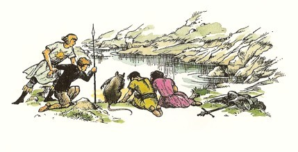
まだ半分もおろさないうちに、ルーシィがいいました。「あの像は、金じゃないと思うわ。きっと、日光のせいよ。だって、そのやりも、同じ色に見えるんですもん。」
「どうかしましたか？」といっせいにみんながたずねました。エドマンドがだしぬけにやりを落としてしまったからです。
「もってられなかったんです。」エドマンドが息をはずませていいました。「ばかに重かったようで。」
「そして今は、底にある。」とカスピアン。「またルーシィのいうとおりです。あの像と同じ色に見えますね。」
けれどもエドマンドは、なんだかくつがぐあいが悪くなったかしたように、からだをまげて、じぶんのくつをしげしげとながめていましたが、ひょいとからだをのばすと、にわかに鋭い声をあげて、つぎのように叫びましたので、ほかの人々も、そのけんまくにしたがわないわけにいきませんでした。「さがれ！湖からしりぞけ、みんな、すぐに！」
みんな、いうとおりにして、エドマンドをながめました。
「ごらん、ぼくのくつのさきだ。」とエドマンドがいいました。
「すこし黄色いね。」とユースチス。
「ここは、金なんだ。純金だよ。」とエドマンドが、そのことばをさえぎるようにしていいました。「よく見てごらん。さわってごらん。つまさきが皮でなくなってるんだ。鉛のように重くなってる。」
「なんということだ！ まさかあなたは、金になったと──」とカスピアン。
「そうですよ。金になったんですよ。」とエドマンド。「この湖は、なんでも金にしちゃうんです。水は、やりを金にした。だから重かったんだ。それから波が足にかかった（はだしでなくて、ほんとによかった）。そしてつまさきを金に変えたんです。だからあの水底の気の毒な人は──ね、わかるでしょう？」
「それじゃ、像じゃないんだわ。」とルーシィが、低い声でいいました。
「像じゃない。これで万事がすっかりわかるよ。あの人は、ある暑い日に、ここにやって来た。あの崖の上で、着物をぬいだ──ぼくらがすわったところさ。着物はくさったか、鳥たちが巣をつくるのにもちさったろう。そして、くさりかたびらばかり残ったんだ。それから、その人は、水にとびこんだ。そして──」
「やめて。」とルーシィがいいました。「なんておそろしいことでしょう。」
「ぼくたちも、すんでのころだったんだ。」とエドマンド。
「まったく、すんでのところでした。」とリーピチープ。「だれかの指、だれかの足、だれかの口ひげ、だれかのしっぽが、いつ何時水の中へはいったかしれませんでした。」
「とにかく、よくしらべてみよう。」カスピアンがこういって、身をかがめて、ヒースの小枝をもぎとりました。それから、うんと注意して、湖のそばにひざまずき、枝をひたしました。カスピアンのひたしたのは、ヒースでした。そしてひきあげたのは、鉛のように重くてやわらかい純金でできた、ヒースのかざりでした。
「この島をおさめる王は、」とカスピアンがのろのろといいましたが、いいながら顔を赤くしていました。「たちまちこの世のいかなる王よりも金持ちになるだろう。わたしはこの島を永久にナルニアのものと宣言する。島の名を金水島ということとする。そしてみなの者に、ぜったい秘密にせよと申しわたす。だれにもこれを知られてはならない。ドリニアンにさえもだ──秘密をもらせば、罪は死にあたいするものと心得よ。」
「あんたは、だれにむかっていってるんだ？」とエドマンド。「ぼくは、あんたの家来じゃない。そうおっしゃっても、お門ちがいでしょう。ぼくは、ナルニアのむかしの四人の王たちのひとりだ。あんたがたは全部、わが兄一の王の下にしがうべきもの。」
「さらば、これにてもの申そうか？ エドマンド王よ。」とカスピアンは、剣のつかに手をかけました。
「ああ、やめてちょうだい、ふたりとも。」とルーシィ。「けんかが、男の子のいちばんいけないところだわ。ふたりとも、いばりくさった大ばかよ──ああ......！」ルーシィの声は、ことばにならないで、息をのむ表情になりました。そしてほかの者たちも、ルーシィが見たものを、見たのです。
一同の上の黒っぽい山腹をわたって（黒っぽいというのは、ヒースがまだ咲かないからです）音もなく、一同のほうをかえりみることなく、あかるい日光をあびているように輝きながら（といっても日は雲にかくれていたのです）、ゆっくりとふみしめて通っていくものは──人間が今までにこんな大きなすがたを見たことのない、すごく大きなライオンでした。このありさまをのちに、ルーシィは「ゾウぐらいの大きさでした」といいました。もっともべつの時に、「馬車の馬ぐらい」ともいいましたけれど。もっともこの時、みんなの心をひいたものは、大きさではありませんでした。だれも、しいてライオンか何かをたずねる者はありませんでした。みんな、それがアスランだということは、知っていました。
そしてだれも、アスランがどのようにしていなくなったか、またどこへいってしまったかを知りませんでした。一同は、眠りからさめたように、おたがいをながめあいました。「わたしたちは、なんの話をしていたのかな？」とカスピアン。「よほどおろかなことをしていたんじゃないか？」
「陛下、ここはのろいのかかった場所でございます。」とリーピチープ。「ただちに船にもどりましょう。またわたしにこの島の名をつけさせていただければ、死水島とよぶべきだと存じます。」
「それはまことにふさわしい名まえだと思うよ、リープ。」とカスピアン。「わたしも今、そう考えるようになってきたが、どうしてだかはわからない。だが、天候もさだまったように思われる。ドリニアンは、船を出したがっているだろう。ドリニアンに話すことがずいぶんある。」
けれどもじっさいにはドリニアンにたいして話すことがありませんでした。なにしろあの時のおしまいごろの出来事は、頭のなかがめちゃめちゃになって、よくおぼえていなかったのでした。
「陛下たちみなさんは、船に帰ってこられた時、なにかに化かされたみたいだったな。」とドリニアンは、それから何時間もたって、すでに朝びらき丸がふたたび船出して、死水島が水平線にかくれた時、ラインスにそう語りました。「あの島で、何かあったのだ。わたしにはっきりしたことは、ただ一つ、わたしたちのさがしている貴族のひとりのなきがらを見つけたと陛下たちが考えていることだけだ。」
「船長、まあそうおっしゃるな。」とラインスがこたえました。「とにかく、三人見つかった。あとはたったの四人です。この分では、新年すぎてからすぐに、帰国できるかもしれません。それは、けっこうじゃありませんか。やあ、たばこがなくなりそうです。では、おやすみなさい、船長。」
９ 声の島
長いこと北西からふいていた風が、今は西からふきはじめ、海から日がさしのぼる朝ごとに、朝びらき丸のそりかえったへさきが朝日のまんなかにつき出てすすみました。のぼる朝日が、ナルニアで見るよりずっと大きいという者もありましたが、そんなことはないと反対する者もありました。そしてそよそよとふきつづけるそよ風にのって、東へ東へと船を進めますが、魚も見ず、カモメも見ず、船も陸も見かけません。そのうちに食べ物がまた少なくなりはじめ、一同の胸には、どこまでも永久につづく海にはいったのかもしれないといううたがいが、しのびよりました。けれども、いよいよ一同がこれ以上東へ船を進められないと考えたその日になって、船と朝日の間に、ま東にあたって、はるか雲のように横たわる低い陸地が見つかりました。
一同は、その午後なかばに、広い入江にはいり、上陸しました。今まで見たどこともたいへんちがう土地でした。まず砂浜をこしていきますと、どこもかもしんと静まりかえって、人気もなく、まるでだれも住んでいないところのようですけれども、ゆく手に広い平らな芝生があって、芝がきちんと短くそろい、イギリスの大きなおやしきで十人の庭師が手いれをしておく芝生のようでした。あたりにたくさんある木々は、それぞれほどよくはなれて植わっていて、枝のおれたのもなく、枯葉の散っている様子もありません。時時ハトがほろほろないているほかに、なんの物音もしませんでした。
そのうちに一同は、ひとすじの長い、まっすぐな砂地の道にさしかかりました。道には、雑草一本生えていないで、両がわに並木がならんでいます。この小道のはるかさきのつきあたりに、一軒のやしきが見えました。午後の日ざしのなかに、たいへん細長くて黒っぽい家が、静まりかえっていました。
一同がその小道にふみいったばかりの時に、ルーシィは、くつに小石がはいったのに気がつきました。こんな知らない土地では、石をとり出す間、ほかの人たちに待っていてくれとたのんだほうが、かしこいやりかただったのかもしれません。けれどもルーシィは、そうたのみませんでした。何もいわずに残って、その場にすわりこんで、くつをぬごうとしました。くつひもがからまって、こぶになっています。
そのもつれをといているうちに、ほかの人たちは、かなり遠くにいっていました。石をとりだして、ふたたびくつをはくころには、ルーシィはもうみんなの足音を耳にしませんでした。ところが、その時、ほかの音を耳にしました。それは、やしきのほうからきこえてくるものではありませんでした。
ルーシィのきいた音は、ずしんずしんという足音でした。まるで何十人ものくっきょうな働き人たちが、木の大槌をふるって、できるだけはげしく大地をたたいているようなひびきでした。しかもその音は、すこぶる早くせまってきました。ルーシィはいまも木にもたれてその場にすわっていましたが、その木はとてものぼれそうにありませんので、ただじっとすわって、木にからだをちぢこめて、見られないように願うよりほかにありませんでした。
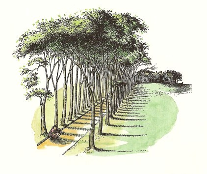
どしん、どしん、どしん......それがなんだかわかりませんが、ずいぶん近くへ来たにちがいありません。ルーシィは地面がふるえるのをからだに感じました。けれども、何も見えません。ただ、そのもの──ものたちでしょうか──は、すぐうしろに来ているにちがいないと思いました。けれどもそれから、どしんというひびきは、ルーシィの前の道にやってきました。そしてルーシィは、音ばかりでなく、重いものでたたかれたように砂が散るのが見えるので、道に来たのがわかりました。だのに、砂をたたくものが見えないのです。いよいよどしんどしんというたくさんの音はせまって、ルーシィから六メートルもさきのところへくると、とつぜん、ぴたりとやみました。それから、声がきこえてきたのです。
といっても、あいかわらず何も見えないのですから、ルーシィには、まことにおそろしいかぎりです。公園のような土地のどこを見ても、静かで人気がなくて、上陸した時と同じありさまでした。それにもかかわらず、ルーシィから、ほんのわずかなはなれたところから、ある声がきこえてきたのです。それは、こういうことばでした。
「仲間よ。いまがチャンスだ。」
するとただちに、ほかの声が全部いっしょに、こたえました。「きけ、きけ。いまが、チャンスと、いった。いいぞ、かしら。こんないいこと、いえないぞ。」
すると、またはじめの声が、「いいか、やつらとボートの間にはいれ、そして、めいめい武器を忘れぬように。やつらが海にもどろうとする時に、ひっとらえよ。」
「おお、そのとおり。」とほかの声がいっせいに叫びました。「こんないい案ないぞ。かしら、その調子だ。これほどいい案はない。」
「では、がんばれよ、仲間たち。」とはじめの声がいいました。「さあでかけよう。」
「そうとも、かしら。」とほかの声がいいました。「これほどいい合図はない。おいら、ちょうどそういおうとしたところだ。さあでかけよう。」
そしてすぐさま、ふたたびどしんどしんというひびきがおこり──はじめははげしく、そのうちまもなく、しだいにかすかになって、海の方へときえていきました。
ルーシィはいま、この目に見えない生きものが、いったいなんだろうなどと考えてすわりこんでいるひまがないことを知りました。どしんどしんという音がきこえなくなるが早いか、ルーシィは立ちあがって、足のつづくかぎり早く、ほかの人たちのあとを追って小道を走りました。なんとしてでも、みんなに注意しなければなりません。
こういうことがおこっているうちに、ほかの者たちは、そのやしきにつきました。それは二階だて低い建物で、美しいなめらかな感じの石でできていて、窓がたくさんついているほか、建物の一部にはツタがおおいかぶさっています。どこもまるで静かなので、ユースチスは「人がいないのだろう。」といいましたが、カスピアンはだまって、一つの煙突からたちのぼる煙を指さしてみせました。
一同は、広い門があいているのを見て、そこを通ると、石をしきつめた中庭にはいりました。そしてここで、この島にはどこかおかしなところがあるのを、はじめてさとらされたのでした。中庭のまんなかに、一だいのポンプがあります。ポンプの下にバケツがおいてあります。それには、べつにおかしなところがありません。けれども、そのポンプの柄が、上下に動いていて、それを動かす者のすがたがないようでした。
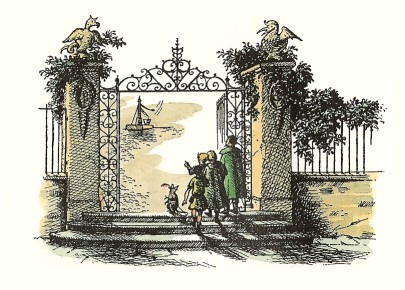
「ここに、魔法が働いているぞ。」とカスピアン。
「機械だ！」とユースチス。「とうとう文明国へやってきたようだぞ。」
その時ルーシィが、顔をほてらせ、息をはずませて、みんなのうしろから、中庭にかけこんできました。低い声でルーシィは、じぶんが立ちぎきしたことを、一同にわからせようとつとめました。そして、そのことがいく分かわかってみると、みんなのなかでいちばん勇気のある者でも、うかない顔になりました。
「目に見えない敵か。」とカスピアンが口のなかでいいました。「それに、わたしたちをボートからきりはなそうとかかっているのか。これはしまつにおえないことになった。」
「いったいどんな生きものなのか、けんとうがつかないか、ルー。」とエドマンド。
「見ることができないで、けんとうがつく？ エド。」
「足音をきいて、人間みたいだったかい？」
「足音なんてきかなかったわ──ただ声とあのおそろしいどしんどしん、槌をふるうような音だけだったわ。」
「もし剣をぬいておどりこんだら、すがたをあらわすのではありますまいか？」とリーピチープ。
「どうやらそれは、これからわかることのようだな。」とカスピアン。「だが、この門を出ていこう。わたしたちのいうことは全部、ポンプのところにいるやつらの仲間にきかれるぞ。」
一同は門を出て、まだしもじぶんたちのすがたをかくしてくれるかもしれない並木道にひきかえしました。「見ることのできない者からかくれようとしても、じっさいには役に立ちませんよ。まわりに全部いるかもしれないもの。」とユースチスがいいました。
「では、ドリニアン。わたしたちがボートをなくすことになった場合、入江のほかの場所にくだって、朝びらき丸に合図をして、そちらに来てわたしたちを乗せてくれるような、わけにはいくまいか？」とカスピアン。
「それだけの水深がありません。陛下。」とドリニアン。
「泳いだら？」とルーシィ。
「陛下がたに申しあげます。」とリーピチープ。「いくらこそこそにげかくれいたしても、見えない敵をさけきれるはずがございますまい。あの者たちが、われらに戦いをしかけるつもりでしたら、きっと先方の思うままになりましょう。ですから、どんなことがおころうと、われらはしっぽをつかまれるよりは、むしろ真正面からむかいましょうぞ。」
「この度リープのいうことはもっともだと思いますよ。」とエドマンド。
「そうよ、もし朝びらき丸にいるラインスやほかの者たちが、浜でわたしたちが戦っているのを見たら、きっとなんとかしてくれるわ。」とルーシィ。
「でも、相手の敵を見かけなかったら、ぼくたちが戦ってると思わないよ。」とユースチスが、ゆううつそうにいいました。「船の人たちはただ、ぼくたちが空中に剣をふるって遊んでると思うさ。」
みな気を落として、ことばがとだえました。
やがてカスピアンがいいました。「さあ、ひとつやってみよう。わたしたちは、やつらとむかいあわなけりゃならない。みんな握手をして、ルーシィ、あなたは弓に矢をつがえなさい。おのおのがたは、剣をぬくのだ。さあやろう。やつらは談判でくるかもしれない。」
みんなが浜にもどるとちゅう、芝生や並木がたいへんのどかなけしきに見えるのは、ふしぎな気もちでした。浜について、残してきたところにボートがあるのを見、あたりの砂も、だれのすがたも見えずになめらかになっているのをながめますと、ルーシィが話したことは、ただルーシィが頭のなかでこしらえあげたのではないかと、うたがう者もでてきました。けれども、まだ砂浜までこないうちに、空中から声がよびかけたのです。
「ゆくな、おまえさんがた。もうゆくな、わしらは、まずおまえさんがたと話すことがある。ここにわしら五十人、てんでに武器をもっているぞ。」
「きけ、きけ。」とおおぜいのいっせいにいう声がしました。「いうのは、おいらのかしらだぞ。かしらのいうことは、もっともだ。かしらは、まことを教えてくれるぞ。」
「五十人いるのが見えない。」とリーピチープがじっと見ながらいいました。
「そのとおり。そのとおり。」かしらの声がしました。「見えないぞ。ではなぜか？わしらは、目に見えぬものだから。」
「その調子、かしら、その調子だ。」とほかの声々。「かしらは、本のように、うまくいう。それよりもよいこたえはない。」
「いうな、リープ。」とカスピアンはたしなめておいて、それからもっと大きな声を出してこうつけ加えました。「あなたがた、目に見えない者よ。われになんの用か？そもそもわれらが何をして、あなたがたのうらみをうけたというのか？」
「わしらは、その女の子に、わしらみんなのためにしてほしいことがある。」とかしらの声がいいました（するとほかの声も、そうだ。そういいたかったのだ、とのべました）
「女の子だと？」とリーピチープ。「このひめ君は、女王だぞ。」
「女王なんか、知らん。」とかしら。（「知らん、知らん。」とほかの声々がそれに合わせました。）「とにかく、その人に、してほしいことがある。」
「なんですか？」とルーシィがいいました。
「女王に対して無礼なこと、その身にあやういことあらば、われらが討死にする前に、どれほど死人の山をきずくものか、びっくりさせてくれるぞ。」とリーピチープがのべたてました。
「よいか、では長い話になるぞ。すわっては、どうか？」と、かしらの声。
その申し出には、ほかの声も大さんせいだったのですが、ナルニア人たちは、立ったままでおりました。
かしらの声が話しはじめました。「それは、こういうことだ。この島は、いつとしらぬむかしから、ある大魔法つかいの土地であった。そしてわしらはみな、その魔法つかいの下働きなのだ。いやもっと気をつけていえば、下働きだったのだ。ところで、長い話をつづめていえば、その魔法つかいが、わしらの好まぬことをいたせといった。なぜ好まぬかというならば、わしらはそれをしたくなかったのだ。ところでこの魔法つかいが、すっかりおこった。なにしろこの島をもっていて、反対されたことがなかったから、といわなけりゃならん。魔法つかいは、おそろしく割りきったやつでな。ところで、どこまで話をしたかな？おお、そうだ。その魔法つかいは二階にいって（ところで、魔法つかいは、魔法の力のあるものをことごとく二階にあげておいたし、わしらはみんな一階におったわけだ）それで二階にいって、わしらにまじないをかけた。わしらをみにくくかえてしまうまじないだ。わしの考えでは、おまえさんがたは、見られない運のよさをよろこぶがよい。もし今わしらを見たら、こうならん前にどんなによい顔をしていたかをとても信じてもらえまい。まったくよ。そこでわしらみな、あまりみっともなくなったものだから、おたがいに顔をあわせるのもやりきれなくなった。それじゃ、どうすればいい？そう、わしらがどうしたかを教えよう。わしらは、その魔法つかいが午後になって眠ったと思われるころを見すまして、二階にしのびこんで、このみにくさをなんとかできないものかをしらべに、心を鉄にしてあつかましく、魔法の本を見にいった。ところが汗はかくし、ふるえはくる。ほんとうだ。うそじゃないよ。だが、信じてくれようとくれまいと、どうやっても、みにくさをとりさるまじないのやりかたがみつからなかったのさ。そして時間はどんどんたつし、魔法つかいのじいさんはいつ何時目をさますかとおそろしいし、わしはまったくあせみどろだった。ほんとうだ。うそじゃない。それで、長い話をつづめていえば、わしらがいいことをしたか、まちがっていたかはわからないが、とうとう、人を見えなくするまじないを見つけたのだ。そこでわしら、いっそみにくいままでいるよりも、見えなくなったほうがいいと考えた。どうしてかといえば、そのほうがこのましかったのさ。それで、わしの女の子、ちょうどその女の子と同い年ぐらいで、みにくくなる前は、かわいい子だったが、それが今は──いわぬが花よ──とにかく、わしのむすめが、まじないをとなえた。なにしろ魔法は、女の子か魔法つかいがとなえなければ、働かないのでな。どうしてかといえば、つまり何事もおこらぬからだ。だからして、わしのむすめクリプシーが、まじないをよんだ。ちかっていうが、ずいぶんうまくよんだよ。それでわしらはみんな、ごらんのとおり、見えなくなった。それはたしかに、おたがいの顔が見えないからほっとしたさ。とにかく、はじめのうちは、そうだった。だがそのうちに、かいつまんでいえば、わしらは見えないことが、ほとほとやりきれなくなった。とすれば、することはまだ一つある。わしらは、あの魔法つかいもまた見えなくなるとは、思っていなかった。けれども、あれからというもの、わしらはあの魔法つかいを見かけなくなった。じいさんが死んだのか、どこかへいったのか、見えなくなったままで二階にいて、下に来てここでも見えないでいるのか、いっさいわからない。それに魔法つかいはいつもはだしで歩きまわっているから、大きなネコどもよりも音をたてず、さっぱりわしらには足音をききとることができない。それではっきりおまえさんがたに申しあげるが、もうこれ以上、がまんができなくなっているんだ。」
これが、かしらの物語でした。もっとも、ほかの声がたくさんあいづちをうちところをはぶきましたから、これでもずいぶんかんたんになったのです。じっさいは、かしらが、五言か六言いうたびに、ほかの声が、さんせいしたり、はげましたりするのですから、ナルニア人たちは、いらいらして、気がどうかなりそうでした。話がおわると、たいへん長いこと、だれもひとこともいいませんでした。
とうとうルーシィが口をきりました。「けれども、そういうお話が、わたしたちとどういう関係があるのでしょう？わからないわ。」
「やれやれ、わしはかんじんなことをいいわすれたかな？」とかしらの声がいいました。
「いい忘れたのさ。いい忘れたのさ。」とほかの声々が、熱をこめていっせいに叫びました。「だれも、あれほどさっぱりと、あれほどうまく、いい忘れられないさ。その調子だ、かしら、その調子だ。」
「ところで、話をもう一度、くりかえす必要はない。」とかしらの声がいいました。
「そうとも、その必要はない。」とカスピアンとエドマンドがいっしょにいいました。
「よろしい、ではかいつまんでいおう。」とかしらの声がしました。「わしらは、長い間、外国から親切な女の子がくるのを待っていた。じょうさんや、あんたのような女の子をな。そしてその子が二階へいって、魔法の本をさがし、見えないありさまをとりのぞくまじないを見つけて、それをとなえてもらいたいのだ。そこでわしらは、この島に上陸した最初のよそ人たちが（そのなかに親切な女の子がいる場合のことで、女の子がいなければ話はべつだ）わしらの役にたってくれないといえば、生かしては帰さぬと、ちかいを立てた。その女の子が二階へいって本をさがしてくれないならば、おまえさんたちののどをかきるのが、わしらのつらいつとめとなろうものだ。なりゆきでしょうがない。わるく思わんでくれ。」
「武器といっても、見えないが、それも見えなくなっているのか？」とリーピチープがいいました。そのことばが口からでるかでないかのうちに、一同は、ぶーんというひびきをきき、つぎの瞬間、一同のうしろの並木の一つに、一本のやりがささって、ふるえているのを見ました。
「これは、やりだ。やりだぞ。」とかしらの声。
「やりだ、かしら、やりだ。」とほかの声々。「これほどうまくはいえんぞ。」
「やりは、わしの手からなげられた。」とかしらの声がつづきました。「わしらのところをはなれれば、見えるようになる。」
「けれども、どうして、このわたしにしろとおっしゃるんです？」とルーシィがたずねました。「あなたがたのうち、だれかがなさらないんです？女の子はいないんですか？」
「やるもんか。やるもんか。」と声が全部いっしょにいいました。「おいらは、二度と二階へいかない。」
「ことばをかえていえば、」とカスピアンがいいました。「あなたがたは、じぶんたちのいもうとやむすめさんをさらしたくない危険に、この姫には、進んでぶつかってくれと、たのむわけだな！」
「そのとおり、そのとおり。」と声がみな、どっとよろこばしそうにいいました。「あんたは、とてもうまくいった。あんたは、なかなか教育がある。学がある。よくわかるぞ。」
「ええい、こんなあくどいことが......」とエドマンドがいいかけましたが、ルーシィはそれをおさえました。
「夜になって二階にのぼらなければならないのですか？それとも昼間？」
「おお、昼間だ、昼間だとも。」とかしらの声。「夜ではないよ。だれも夜いってくれとは、たのまない。やみのなかで二階にいけなんて、じょうだんじゃない。」
「わかりました。それじゃ、いきましょう。」とルーシィは、きっぱりいいました。そしてほかの人たちのほうをむいて、「いいえ、わたしのことをとめないでちょうだい。そうしたってむだなこと、わかりませんか？ここには、何十人もいるのよ。とても戦えない。でも、わたしがやってみれば、チャンスがありますもの。」
「でも、魔法つかいが！」とカスピアン。
「ええ、でも魔法つかいも、みんなのいうほど悪くないかもしれません。ここの人たちが、あまり勇ましくないということが、わからない？」
「とにかく、あまりりこうじゃないことはたしかだ。」とユースチス。
「ねえ、ルー、」とエドマンド。「こんなあぶないことに、きみをやれないよ。リープにきいてごらん。かれだって、同じことをいうさ。」
「でも、これは、あんたがたの命ばかりじゃなく、わたし自身の命をすくうためよ。」とルーシィ。「だれでもそうでしょうけど、見えない剣で、ぱらぱらに切られるなんて、まっぴらだわ。」
「陛下のおっしゃることは、もっともです。」とリーピチープ。「戦いによって、お命を救いまいらせることがたしかならば、われらのつとめは、しごくかんたんです。だが、ここはわれらのでる幕がないように思われます。その上かれらが陛下にのぞむ役がらは、けっして女王の名誉をきずつけるものでなく、りっぱでおおしい仕事です。もし女王のお心が魔法つかいとぶつかってみようということであれば、反対いたすことはございません。」
だれもみな、リーピチープがいかなることでもおそれたことがないのをよく知っていましたから、リープは、いささかの気おくれもみせずに、こういいきることができました。けれども、ちょいちょいこわいと感じることのある男の子たちは、すっかり顔を赤くしました。それでもなお、リープのことばは、当然のわけでしたから、男の子たちもみとめなければなりませんでした。こうきまったことが知らされますと、わっというよろこびの声が、見えない人たちからわきおこりました。そしてかしらの声は（ほかの声に熱心にいいそえられて）、食事にくるよう、夜をすごすようにナルニア人たちによびかけました。ユースチスはこのまねきをうけたがりませんでしたが、ルーシィが「うらぎるようなまねをしないことは、うけあいよ。あの人たち、ぜったいにそんな人たちじゃないわ。」といい、ほかの人たちも、そうだといいました。そこで、どしんどしんというものすごい音につきそわれて（一同が、石だたみの中庭にきますと、ここはよく音のひびくところですから、いっそう、どしんどしんと音が大きくなりました）、一同はやしきにはいりました。
10 魔法つかいの魔法の本
すがたの見えない人たちは、その客たちをりっぱなごちそうでむかえました。いろいろなお皿が、それをはこぶ者が見えないで、テーブルのほうにやってくるところは、いかにもこっけいでした。それが、見えない手ではこばれてくるものですから、床と平行にやってくるはずで、それでもきっとおもしろかったにちがいありませんのに、お皿の動きは変わっていました。お皿はぞくぞくとひきつづいて、飛んだりはねたりしながら、食堂にやってきたのです。はねたお皿のいちばん高いところは、空中五メートルにもなるでしょうが、そこからひゅうとさがってきて、床上一メートルほどのところに、ぴたりととまります。お皿のなかに、スープやシチューがはいっていると、ひどいことになりました。
「ここの人たちのことが、ばかに知りたくなってきたよ。」とユースチスがエドマンドにささやきました。「いったい人間だと思うかい？とほうもないバッタか大きなカエルじゃないかしらね。」
「ほんとにそんな感じだね。」とエドマンド。「でもバッタなんて考えを、ルーシィにはふきこむなよ。ルーは、虫たちには強くないんだ。ことに大きなやつにはね。」
食事は、これほどやたらにごたつかなかったら、その上会話のたびに、これほどしきりにあいづちをうたれなかったら、もっとゆかいだったでしょう。見えない人たちは、なんにでもあいづちをうちました。じっさい、その人たちのいうことは、たいてい、反対しにくいようなことばかりでした。「いつもいうことだが、はらがへったら、食い物がほしいな。」とか、「もうくらくなったぞ。夜になるといつもそうだな。」とか、「あんたたち、海をわたってきたのか？海というもんは、えらくぬれるもんじゃないのか？」とかいうのです。そしてルーシィは、二階にあがる階段の下につうじる、ぽっかりと黒く口をあけた入口を見ないわけにいきませんでした（そこは、ルーシィのすわっている席から見えたのです）。そしてそれを見ながら、あしたの朝、あの階段をあがっていくと、何が見られるだろうと思わないわけにいきませんでした。けれども、食事のほうは、けっこうなごちそうで、キノコのスープに、ニワトリのゆで肉、ハムをあぶったもの、スグリの実、チーズ、クリーム、牛乳、ハチミツ酒などがでました。みんなはハチミツ酒がすきでしたが、ユースチスは、それをすこしでも飲んだことをあとになって後悔しました。
さて、あくる朝ルーシィが目をさましますと、まるで試験の日か、歯医者へいかなければならない日の朝のような気がしました。気もちのよい朝で、ハチが、あけてある窓から出たりはいったりしていますし、おもての芝生は、イギリスのどこかのいなかのけしきのようでした。ルーシィは、おきあがって、服をつけて、朝ごはんの時、ごくふだんと変わりなく話したり食べたりしようとしました。それから、かしらの声に、二階ではどうしたらいいかを教えられたあとで、ルーシィは、ほかの人たちに、さよならをつげ、あとはひとこともいわずに、階段の下に歩みより、一度もふりかえることなしに、階段をのぼりはじめました。
まったくあかるいので、たすかりました。そのはずです。はじめのひとつづきの階段の上には、ルーシィのまん前に、窓が一つあいていたのです。その階段をのぼっている間、ルーシィは、下の広間にある大きな柱時計のカチカチ時をきざむ音をきくことができました。やがてその階段の上のおどり場につきますと、つぎは左にまがって、もう一つ階段をのぼらなければなませんでした。その階段をのぼると、もはや柱時計の音はきこえませんでした。
やっと階段の上につきました。長いひろい廊下が通っていて、その遠いつきあたりに大きな窓が一つあるのが見えました。その廊下が、このやしきの長さをつらぬいて走っていることは、あきらかです。廊下は、彫りもので飾られ、腰板がうたれ、じゅうたんがしかれていて、おびただしいドアが、その両側にあけはなたれていました。ルーシィは、じっと立ちどまって、耳をすませましたが、ネズミのなく声も、ハエのとぶ音も、カーテンのそよぐひびきもきくことができません。きこえるのは、じぶんの胸の早がねの音ばかり。
「左がわのさいごの入口だったわ。」とルーシィは、ひとりごとをいいました。さいごのドアというのが、たいへんなように思われました。そこへいくまでに、部屋から部屋へ、全部の前を通らなければなりません。そのどこかの部屋に、魔法つかいがいて──眠っているか、目をさましているか、目に見えないか、ひょっとしたら死んでいるかもしれません。けれども、そんなことを考えては、しかたがありません。ルーシィは、探さくの道にふみだしました。じゅうたんがあつぼったいものですから、足もとは何の音もしません。
「まだなんのこわがることも、ないんだわ。」ルーシィはまたそうひとりごとをいいました。そしてたしかに、ここは、静かで、日の光にみちた廊下でした。もっとも、少々静かすぎました。そしてどのドアの上にも赤いぬりもので、ふしぎな印が描いてありますが、それがなければずっとすてきだったでしょう。その印は、ねじれた、こみいったもので、たしかにある意味をもっているのでしょうが、それはどうせ、りっぱな意味ではなさそうです。その上、壁にさまざまな面がかかっていますが、これもなければ、もっとよくなったにちがいありません。その面の顔は、みにくいからというわけではなく──それほどみにくくもありませんでした──うつろな目の穴が、気味わるく見えて、それに背中をむけるが早いか、その面が何かしかけるような気がしはじめるものでした。
六つめのドアをすぎたころ、ルーシィははじめてほんとうにおどろかされてしまいました。ちょっとの間、ルーシィはたしかに、ある意地のわるそうな、ひげを生やした小さな顔が、壁からとびだして、じぶんにしかめっ面をしてみせたような気がしたのです。そこでむりに足をとめて、そこを見ました。ところがなんの顔もありません。ただ、ルーシィ自身の顔の大きさと形をした小さな鏡があって、鏡のふちの上のほうに髪の毛、下のほうにひげがたれさがっていますから、その鏡を見ると、じぶんの顔が、鏡ぶちの髪の毛とひげの間にぴったりはいって、それを生やした顔のように見えるのです。「通りすがりに、横目でちらりとじぶんの影を見ちゃったのだわ。」とルーシィはひとりごとをいいました。「正体はそんなところね。まったくなんの悪いこともないわ。」とはいえ、ルーシィは、じぶんの顔にこんな髪やひげのついている様子はいやでしたから、さらにさきにいきました（ひげのある鏡がなんのためにあるのかは、わたしは魔法つかいでないから、わかりません）。
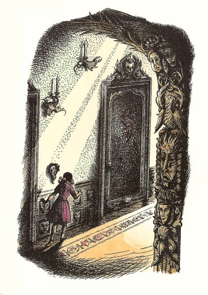
あの左手のさいごのドアにつくまえに、ルーシィは、ここに来てから、廊下がずっと長くなったのではないか、それがこのやしきの魔法の一つなのではないかと、うたがいはじめました。けれどもルーシィは、とうとうさいごのドアにたどりつきました。見ればドアがあいていました。
そこは、大きな部屋で、三つの大きな窓があり、床から天井まで、ルーシィが見たこともないほどたくさんな本がならべてあり、ごく小さな本もあれば、厚ぼったい本もあり、どこの教会の聖書よりも大きい本もあって、全部が皮表紙で、古くさい、むずかしい、魔法らしいにおいがしました。けれどもすでに教えられていて、こういう本をさがしまわる必要のないことがわかっていました。というのは、目的の魔法の本は、部屋のまんまんなかの読書机の上にあったからです。ルーシィは、立ったまま（とにかく、ここにはいすがありませんでした）本を見なければならないし、本を見る間、入口のほうに背をむけていなければならないことが、わかりました。ですから、すぐに、ドアをしめようと、入口へむかいました。
でも、ドアはしまりませんでした。このことでは、ルーシィのやりかたに反対の人もあるでしょうが、わたしは、ルーシィのほうが正しいと思います。ルーシィはあとで、ドアをしめることさえできたら、そんなにいやじゃなかっただろうけど、背中にドアがあいている場所で立ったまま本を読まなければならないのは、いい気もちではなかったと、いいました。わたしもきっと、そんな気もちがするでしょう。けれども、しまらなかったんですから、そうするほかありません。
ルーシィをひどく心配させたことは、魔法の本の大きさなのでした。かしらの声は、その本のどのへんに、ものを見るようにするまじないが書かれているかを、ルーシィに教えてくれることができませんでした。かしらは、ルーシィにそのことをきかれて、おどろいていたようでした。かしらは、ルーシィがいちばんはじめから、さがしていって、見つかるまでめくって読んでくれるものと思っているようでした。かしらは、そのまじないを見つけだすのに、それよりほかに方法があろうとは、てんから思ってもいなかったのです。「でも、それじゃ、何日も、何週間もかかっちゃうわ！」と、ルーシィは、とほうもない厚いその本を見ながら、いいました。「もう何時間もこの部屋にいるような気がするのに。」
ルーシィは、机のそばに歩みよって、本に手をかけました。指は、本にふれるとそこに電気がみちているように、ぴりぴりとふるえました。本をひらこうとしましたが、はじめは、あけられませんでした。とはいえ、それはただ、鉛でできた帯どめがかかっていたせいでした。ですから、帯どめをはずすと、らくらくとひらきました。すると、なんという、すばらしい本だったことでしょう！
それは、印刷ではなくて、手で書いたものでした。はっきりしていて、きちんとした書きかたで、文字の書きくだす線は太く、のぼる線は細く、形がたいへん大きくて、印刷よりはるかに読みやすいし、その上あまりみごとなので、ルーシィはまる一分間それにみとれて、読むことを忘れたくらいでした。紙はさらさらしていて、なめらかで、いいにおいがしました。ページごとに、欄外と、まじないことばの書きはじめの色どりをした大文字のまわりとに、絵が描いてありました。
本には、扉のページも、題名も書いてありません。そして、まじないの文句がいきなりはじまっていて、はじめのうちは、あまり大切なことがのっていませんでした。たとえば、いぼをとるまじない（月光の中で銀のたらいで手をあらうこと）とか、歯いたやひきつけをなおすまじない、ハチのむれをおっぱらうまじないとかばかりです。その歯いたをやむ人のありさまを描いた絵が、あまりに真にせまっていて、それをじっと見ていると、じぶんまで歯が痛くなってくるようですし、四ばんめのハチよけのまじないのまわりに点々とえがいていある金色のハチたちは、ちょっと見ると、ほんとうにとんでいるかのように見えました。
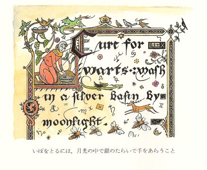
ルーシィは、なかなか第一ページからはなれられませんでしたが、やっとそのページをめくりますと、つぎのページが、とてもおもしろいところでした。「でも、もっとさきへ進まなくちゃ。」とルーシィはひとりごとをいいました。そして三十ページほどめくってきましたが、もしその間に読んだことをおぼえていれば、うずもれた宝を見つけだす方法とか、忘れたことを思い出す方法とか、忘れたいと思うことを忘れる方法とか、人がほんとうのことをいっているかどうかがわかる方法とか、風や霧や雪やみぞれや雨をよぶ（または追いはらう）方法とか、魔法の眠りをかける方法とか、おろかな者にロバの頭をくっつける方法とかでした。そしてルーシィがどんどん読んでいけばいくほど、さし絵もますますふしぎに、ますますありありと真にせまってきました。
そのうちにルーシィは、さし絵がきらびやかにかがやいて、ほとんど文字に気がつかないほど目をいるページにさしかかりました。ほとんど気がつかないくらいでしたが、ルーシィは、その字のはじめのことばに気がつきました。こう書いてありました。「よろずの人にたちまさりてこよなく美しくする、ききめうたがいなきまじない。」ルーシィは、そのページに顔を近づけて、さし絵をながめました。それはまるで、ごたごたしていて、何やらこみあっているように見えましたが、やっとその絵がはっきりわかるようになりました。そのはじめの絵は、読書台のそばで一冊の大きな本を読んでいる女の子の絵でした。そしてその絵の女の子は、ルーシィそっくりの服をきていました。そのつぎの絵では、そのルーシィが（というのは、絵の女の子は、まぎれもないルーシィだったのです）、口をあけて立ち、顔に何やらすさまじい表情を浮かべて、何ごとかをいのるようにとなえているところでした。そして三つめの絵には、万人をこえる美しさが、ルーシィにそなわっていました。はじめに見た絵がどれほど小さかったかを考えると、いま絵のなかのルーシィが、ほんもののルーシィとそっくり同じ大きさに見えるのは、ふしぎでした。そしてそのふたりが、おたがいに目を見つめあっていましたが、ほんもののルーシィのほうが、もうひとりのルーシィのあまりきれいなのに目がくらんで、いく分かすると、目をそむけてしまいました。けれども、ルーシィは、相手の美しい顔のなかに、じぶんと似かよったおもかげをみとめることができました。そして絵は、つぎからつぎへと場面をかえてあらわれ出ました。ルーシィは、じぶんがカロルーメンの武芸大会にのぞんで、高いところにすわり、世界じゅうの王たちが、ルーシィの美しさをもとめて武芸の試合を戦わせるありさまを、見ました。ところがそのあと、試合がほんとうの戦に変わって、ナルニアとアーケン国、テルマールとカロルーメン、ガルマとテレビンシアの国々島々が、ルーシィを求めて戦いあった王侯貴族たちのいきどおりのために、すっかり荒れはててしまいました。するとつぎに絵ががらりと変わって、あいかわらず万人にこえて美しいルーシィが、イギリスに帰ったところです。すると姉さんのスーザン（ペベンシー家でいちばんきれいだったのです）が、アメリカからやはりイギリスに帰ってきました。絵のなかのスーザンは、ほんものとそっくりではありますが、ただもっときりょうが悪くて、おまけに表情がいじわるに見えます。そしてスーザンは、ルーシィの目もくらむ美しさにやきもきしていますが、そのスーザンにだれも気をつける者がいないのですから、しかたがありません。
「このまじないをいってみよう。かまうもんか。いうわ。」じつは、まじないをとなえてはいけないという強い気もちがあったからこそ、ルーシィは「かまうもんか」と口に出していったのです。
けれども、そのまじないの文句を読みかえそうとして、なかごろまで読んでいきますと、いままでなにもさし絵がなかったところに、かわりに、一頭のライオン、あのライオン、アスランそのひとの偉大な顔が、じぶんをじっとながめていることに、気がつきました。その絵の色どりは、ページからルーシィのほうへ出てくるかと思われるほどあざやかな黄金色が使ってありました。そしてルーシィは、あとになって、絵が少しも動かなかったとはいいきれませんでした。とにかくルーシィは、アスランの顔に浮かんでいるその表情を、よく知っていました。ライオンは、うなっているところで、きばが全部あらわれていました。ルーシィはとてもおそろしくなって、すぐさまページをめくってしまいました。
そのあとばらくして、友だちがじぶんのことをどう思っているかを知るまじないのところに出あいました。ルーシィは、あの万人にこえる美しさをそなえるまじないをとなえたくてしかたがありませんでしたが、それをいわないですませたのですから、その埋め合わせに、今このまじないをとなえてみたいと思いました。そこで、気もちが変わってはたいへんと、大いそぎで、その文句をいいました（どんな文句だか、お教えすることは、ぜったいにできません）。そしてルーシィは、どんなことがおこるかを、待ちうけました。
ところが何ごともありませんでしたので、そのページの絵をながめはじめました。すると、だしぬけに、まったく思いもかけないものを見たのです。ある汽車の三等客車のなかに、ふたりの女生徒が席にかけているありさまです。ふたりとは、マージョリー・プレストンとアン・フェザーストーンでした。それは、絵とはいえないものになりました。生きて動いていました。ルーシィは、汽車の窓のそとで、電信柱がどんどんとびすぎるのを見ました。ふたりの女の子は、笑ったりしゃべったりしています。それからだんだんに（ちょうどラジオがはいった時のように）ふたりの話をきくことができました。
アンがいっています。「今学期は、すこしはあなたと会えるかしら。それともやっぱり、あなたはルーシィ・ペベンシーにとられちゃうかしらね？」
「とられちゃうって、なんのこと？」とマージョリー。
「あら、そうよ。あなたは、先学期は、ルーシィに夢中だったわ。」
「ちがうわ。そんことなかったわ。これでも、あなたのおっしゃるよりは、わたしだって考えてるのよ。あの人、あの人なりに悪い人じゃないの。でも、先学期は、終わりごろ、すっかりあの人にはうんざりしたわ。」とマージョリー。
「へえ、今学期も、これからさきも、どうぞ、お勝手になさいませ！」とルーシィはどなりました。「あっちにもこっちにも、いい顔をして。」けれども、こういってみて、すぐにじぶんが絵にむかってしゃべっていること、ほんもののマージョリーは、まるで別の世界にへだたっていることを、思い出しました。
「でもわたしは、ずっとずっとマージョリーをよく思ってたわ。そして先学期は、あの人のためにあらゆることをしてあげたし、ほかの人たちだったらしないほどに、あの人についていてあげたのに。そのことは、あの人だって知ってるわ。しかも、よりによって、アン・フェザーストーンにいい顔をするなんて！ああ、わたしの友だちはみんなそうなのかしら！まだたくさん絵が出ているわ。いや。もう見たくない。見るもんですか。」こういってルーシィは、大した努力をはらって、ページをめくりましたが、それより前に、大きないかりの涙が、目からほとばしり出て、本の上におちました。
つぎのページには、元気をとりもどすまじないが、出てきました。そのさし絵は、ずっと少ないが、すばらしく美しいものでした。そしてルーシィが読んでみてわかったのは、ただのまじないの文句というよりは、ずっとまとまった一つのお話のようなものだったのです。それは三ページにわたって書かれ、さいごのページの下まで読みおわる前に、ルーシィは、呼んだものをそっくり忘れてしまいました。ところがルーシィは、そのお話がほんとうにあったように感じて、そのなかにすいこまれましたし、さし絵も、まざまざと手にとるようにうったえかけてきました。そして三ページめにかかって、おしまいまで読むと、「いままで読んだお話のうちで、これほどすてきなものはなかった。ああ、わたしは、十年の間、このお話を読んですごしたいくらい。少なくとも、もう一度読んでみましょう。」といいました。
ところが、そこに本の魔法がしかけてあったのです。もとのページがめくれません。さきの方へ、右手のページはめくれますが、左手のページは、ひるがえせませんでした。
「あら、ひどいわ。どうしても、もう一度読みたいのに。いいわ、すくなくとも、思い出せるにちがいないもの。ええと、......それは、ほら、あの話よ、ええと......あら、あら、全部どんどんうすれていく。このさいごのページさえ、まっ白になっちまうわ。とてもへんな本だこと。どうしてわたし、忘れちゃったのかしら？なんでも、さかずきと剣と、木と緑の山の話だった。それだけはおぼえてる。だけど、思い出せないわ。どうしたらいいかしら？」
どうしてもルーシィには、思い出せませんでした。そして、その時からさき、ルーシィがよい話というのは、魔法の本に書いてあったこの忘れた物語のことを思い出していうのです。
ルーシィは、ページをめくってみて、おどろいたことに、こんどはなんのさし絵もありませんでしたが、そのはじめの行に、「見えないものを見えるようにするまじない」と書いてあったのです。ルーシィはまず、むずかしいことばが読めるように一度下読みをしてから、つぎに声を出して読んでいきました。声を出して読むにつれて、そのページのいちばん上の頭文字のところに色があらわれ、ページの余白に絵がうつりはじめましたので、まじないがきいていることがすぐわかりました。まるで、かくしインクで書いてある紙を火の上にかざして、書いたものがしだいにあらわれでてくるさまを見るようでした。ただ、ミカンやレモンの汁（いちばんかんたんにできるかくしインクは、これです）のこげ茶色ではなくて、ここには、すべて黄金色と青と赤の目もさめる色があらわれました。ただ、その絵はへんなもので、ルーシィのすきになれないすがたがたくさんまじっていました。ようやくルーシィも、「何もかも全部見えるようにしたようね。どしんどしん歩く人たちばかりじゃなくて、ここには、見えなくなっていたものがほかにもたくさんあったにちがいないわ。全部が見えても、見ることができてよかったと思えるかしら？」と考えました。
その時、うしろの廊下のほうから、やわらかくて重みのある足音がきこえてきました。もちろん、ルーシィはすぐ、魔法つかいがはだしで歩きまわって、ネコほどの音もたてないといわれていたことを思い出しました。でも、背中をそむけてすくみあがっているよりは、むきなおって、面とむかったほうが、ずっといいことです。ルーシィは、むきなおりました。
すると、ルーシィの顔がぱっとかがやき、そのひょうしにその顔はさきの絵のなかのルーシィのように美しく見えたのですが（もちろん、そんなことはルーシィにはわかりません）ルーシィは、よろこびの叫びをあげ、両手をのばして、かけていきました。部屋の入口のところに立っているのは、アスランそのひとでした。あらゆる王たちの王であるライオンでした。アスランは、まざまざと夢ではなくしっかりと手ざわりがあって、暖かく、ルーシィにキスをさせ、かがやくたてがみのなかに、ルーシィの顔をうめさせてくれました。それから、低い、地震のようなごろごろいうひびきが、アスランのからだから流れでてくるのをきいて、ルーシィはようやく、アスランが親しみをこめたのど声を出しているのだと思いました。
「ああ、アスラン。やって来てくださったのですね。」とルーシィがいいました。
「わたしは、たえずここにいたのだよ。だがいま、あなたがわたしを見えるようにしたのだ。」
「アスラン！」とルーシィは、すこしばかりせめるような調子でいいました。「わたしをからかわないでくださいな。わたしみたいなものがやったことで、あなたが見えるようになっただなんて！」
「そうだよ。わたしだって、わたしのさだめたきまりにしたがうものだとは、思わないか？」
それからしばらくことばを切って、やがてこうアスランがいいはじめました。
「わが子よ、あなたは、たちぎきをしてしまったね。」
「たちぎき、ですって？」
「それ、ふたりの学校友だちが、あなたのうわさをしているところを、きいてしまったね。」
「ああ、あれですか。あれは、たちぎきだとは思いませんわ。アスラン。あれは、魔法じゃありませんか？」
「魔法によって、ほかの人をさぐることも、ほかのやりかたでさぐることと同じだよ。それに、あなたは、友だちの心をよみまちがえている。あの人はよわい人だ。だがあなたのことがすきなのだよ。あの人は、もうひとりの年上の子のことをおそれて、心にもないことをいったのだ。」
「でも、あの人のいったことは、忘れられないと思います。」
「そうだ。忘れられまい。」
「ああ、どうしましょう。わたしは、何もかもだめにしてしまったんでしょうか。もしこんなことさえなければ、あの人と友だちでいけたとおっしゃるのですか？ほんとうにいい友だち──一生つづく友だちでおれるのに──もうだめになっちゃったと。」
「わが子よ。前に一度話してきかせたことはなかったか。だれにせよ、もしこうだったら、どうなったろうとは、いってもらえないのだ。」
「そうです。アスラン。あなたは、そうおっしゃいましたわ。ほんとうにそうですわね。でも──」
「話してごらん、わが子よ。」
「あのお話は、もう一度読むことができないものでしょうか？どうしてもおぼえていられなかったんです。あのお話をしてくださいませんか、アスラン？ぜひ、ぜひ、してくださいな。」
「たしかに、話してきかせよう。何年でも何年でも、かならず話してあげるとも。でも、今は、こちらにおいで。わたしたちは、ここの主人に会わなければならない。」
11 のうなしあんよ
ルーシィは、偉大なライオンのあとについて、廊下に出て、こちらへやってくるひとりのおじいさんに出会いました。そのおじいさんは、はだしで、まっかなマントをはおっていました。その白髪の髪には、カシワの葉をあんで輪にした冠をかぶり、長いひげは、腰帯のあたりまでたれて、ふしぎな彫りもののしてある杖でからだをさえていました。そのおじいさんはアスランを見ると、ふかくおじぎをして、「いぶせやしきに、ようこそおいでなさいました。とのよ。」といいました。
「わたしがここに残してさしあげた、あのおろかな家来どもをとりしまるのに、あきあきされたかな、コリアキン？」
「いや、あの者たちはひどいのうなしばかりではありますが、わるいことはありません。じつのところ、あの者たちがすきになりはじめたくらいでな。でも時々は、あの者たちがこのようなおそまつな魔法を使ってでなく、知恵によってききわけよくしたがってくれる時がくるのを、待つがまんができなくなりますわい。」
「待てば、うまくいくよ、コリアキン。」
「そのとおり、なにごとも、時がございますから、とのよ。あの者たちに、おすがたを見せるおつもりですか？」
「いいや。」とライオンが、口のなかでなかばうなるようなひびきを出しましたが、それは、笑っているのだと同じことだとルーシィは思いました。「わたしがすがたを見せたら、あの者たちを、くるわんばかりにおどろかしてしまうだろう。たくさんの星々が年をとって、島々に休みにおりてくるほど時がたたなければ、あなたの家来たちは、まだそこまでは成長しないだろう。そして今日、日がしずむ前に、わたしは、小人のトランプキンが、その主人のカスピアンのもどるまで、ケア・パラベルの城で、るすをあずかっているところをたずねてやらなければならない。ルーシィ、あなたたちのことも、すっかりトランプキンに話してきかせよう。そう悲しそうな顔をするな。まもなくまた会えるから。」
「おねがいです、アスラン。まもなくってどういうことですか？」とルーシィ。
「まもなくとは、いつのことをもいうのだよ。」こうアスランはいって、すぐさま、消えうせていきました。あとにルーシィは、魔法つかいととり残されました。
「ああ、いってしまった！」魔法つかいがいいました。「そして、あなたもわたしも、元気がぬけてしまったわい。だが、これがいつもなんじゃ。アスランをひきとどめておくことはできぬ。人にならされたライオンなんかではないからな。時に、あなたは、わたしの本を見て、おもしろかったかな？」
「あるところは、とてもとても、おもしろく思いましたわ。ではずっとあの本を見ていたのを、ご存じだったんですか？」とルーシィ。
「そうとも、もちろんわたしは、あののうなしどもが自分で自分を見えなくした時から、そのうちあなたがやってきて、まじないをとくことを知っていたわい。ただ、いつのいつかという日どりまでは知らなかった。だからとくに、けさ、見張ってはいなかった。やつらは、このわたしまで見えなくした。見えなくなると、いつもわたしは眠たくなる。あっあーっ、おや、またあくびをしてしまったわい。あなたは、おなかがすかないかな？」
「ええ、すこしすいたようですわ。」とルーシィがいいました。「いま何時だか、さっぱりわかりませんが。」
「では、いらっしゃい。アスランにとっては、いつでも、まもなくだそうだ。だがわたしのところでは、おなかがすいた時が、いつも一時なのだよ。」
魔法つかいは、ルーシィを案内して、すこし廊下を歩いて、あるドアをあけました。そこにはいると、日の光と花々がみちみちた気もちのいい部屋でした。テーブルには、ふたりがはいってきた時には、何もありませんでしたのに、もちろん魔法のテーブルで、魔法つかいのおじいさんのひとことで、テーブルかけ、銀器や皿、コップや食物が、たちまちあらわれました。
「このごちそうが、あなたのお気にめすとよいがな。あなたがこのところ、口にされているものよりも、お国のごちそうに近いものをさしあげたいと思ったのだよ。」と魔法つかいがいいました。
「すてきだわ。」とルーシィがいいました。まことにすてきなごちそうでした。ほかほかと湯気をあげているオムレツ、小ヒツジのひやし肉にグリーンピース、イチゴアイス、間に飲むようにレモンスカッシュ、あとで飲むようにココア一ぱい。でも魔法つかいのほうは、ブドウ酒をのみ、パンを食べるばかりでした。魔法つかいの様子は、何一つこわいようなところがなく、まもなくふたりは、古くからの友だちのように、うちあけたおしゃべりをかわしました。
ルーシィがたずねました。「いつ、まじないがききますか？のうなしさんたちは、すぐに見えるようになりますか？」
「そうとも、のうなしたちは、もう見えるはずじゃ。だが、たぶんまだ、みんな眠っとるだろう。のうなしたちは、いつも昼ごろ昼寝をするのでな。」
「もう見えるようになったのなら、あなたは、あの人たちをみにくくないようになさるでしょう？もとのとおりにしておやりになるのでしょう？」
「さ、そこは、なかなかむずかしいところだな。よいかな、それまでは、ずっとりっぱな様子をしておったとは、ただのうなしたちがそう考えているだけなのだ。あの者たちは、みにくくされたという。だがわたしは、そう思っていない。多くの人たちは、むしろよいほうに変わった、というだろうな。」
「それじゃ、あの人たち、すごいうぬぼれやさんなんですか？」
「そうだ。すくなくとも、のうなしのかしらは、うぬぼれやでな。それがほかの者たちに教えこんだのだ。あの者たちは、かしらのいうことをなんでも信じるからな。」
「わたしたち、それには気がつきました。」
「それで、ある意味じゃ、かしらがいないほうがうまくいくかもしれないのだ。もちろん、わたしは、かしらをほかのものに変えることができる、あるいは、かしらにまじないをかけて、のうなしたちがそのことばを信じないようにすることさえできる。でも、わたしは、そうするのがいやなのだ。そんけいできる者がいないよりも、かしらでもそんけいする者があったほうがあの者たちにはずっとよいのだからね。」
「あなたを、そんけいしないのですか？」
「わたしは、されないさ。そんけいしたがらないのだよ。」
「どういうわけであの人たちを、みにくくしてしまわれたのですか？つまり、あの人たちにいわせれば、みにくくされたというんですけど。」
「それは、のうなしたちが、いいつけられたことを、したがらないからだよ。のうなしたちの仕事は、庭の手いれをすることと、食物になるものをやしなうことだ。そしてそれは、あの者たちが考えているように、わたしのためではなくて、じつは、じぶんたちのためなのだよ。もしわたしがのうなしたちをしつけなかったら、何もしようとしないだろう。いうまでもないが、青いものをそだてるには、水をやらなければならん。ここから山のほうに八百メートルのぼると、きれいな泉があり、その泉から流れ出て、この庭を通っていくのだ。わたしが、あの者たちにやってくれとたのむのは、その流れから水をくんで、かけてやれということだけだのに、のうなしたちは、日に二度も三度も、バケツをさげて泉まででかけて水をくんできて、よけいな苦労をした上に、とちゅうで半分も水をこぼしてしまうのだよ。けれどもあの者たちには、それがわからない。こうしてさいごには、頭から、水くみはいやだというのだ。」
「あの人たちって、それほどばかなんですか？」とルーシィがたずねました。
魔法つかいは、ため息をつきました。「わたしがあの者たちに手をやいているさまざまなことは、わかってもらえないだろうよ。五、六か月前には、のうなしたちが、食事の前に皿やナイフをせっせと洗っていたよ。あとで洗わないで助かるという。また、わたしは、あの者たちが、ほり出してから料理しないでいいようにと、ゆでたジャガイモを植えているのにもであったよ。ある時は、ネコが大きな乳のためおけの中におちたが、二十人もかかって、乳をかき出すばかりで、だれひとりネコをとりだす者がいなかったわい。だが、あなたは、食事をすまされたようだな。ひとつあちらへいって、のうなしたちが、どんなふうになっているかを見ようじゃないか。」
ふたりが、またほかの部屋にはいりますと、その部屋には、わけのわからない、ぴかぴかした機械や道具、天文観測儀とか太陽系儀とか、分秒測光器とか経線儀とか、ツートントンツー韻律器とか拍節器とかいうたぐいのものがいっぱいありまりしたが、その部屋の窓ぎわに来て、魔法つかいがいいました。「それ、あそこに、のうなしたちが、いますぞ。」
「だれも見えませんけど。」とルーシィ。「あのキノコみたいなものは、なんですか？」
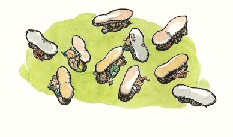
ルーシィが指さしたものは、たいらな草地の上に、点々ところがっていました。それらは、たしかに、キノコとそっくりですが、それよりはずっと大きなもので、軸のところが一メートルたらず、傘のはしからはしまでもそのくらいありましょう。じっと見ているうちに、ルーシィは、軸が傘のまんなかについていないで、はじっこについていて、つりあいがまるでとれていないのに気がつきました。そのうえ、軸の根本に、草地に横になって、なんだかころころしたものがついています。じっさい、じっと長い間見つめれば見つめるほど、きのこらしくなくなってくるのです。傘のところだって、ルーシィがはじめに思ったほどは、丸くありません。ひろがっているというよりは、細長くて、いっぽうのはしがふくらんでいます。そんなものが、全部で、五十以上、ちらばっていました。
時計が、三時をうちました。
そのとたんに、この上なく奇妙なことがおこりました。そのキノコの一本一本が、とつぜんさかさまに、おきあがったのです。軸の根本にあったころころした部分は、頭と胴でした。軸というのが、そもそも足だったのです。それが、ひとりに二本足ではなく（また一本足の人のように片がわについているのではなく）、胴につづいて大きな一本足がずんぐりとのびているだけで、その足のつけ根のところに、とほうもなく大きな一個の足のうらがついていました。足のうらは、すこしそりあがった指さきが広くて、足首のさきは小さなカヌーのようでした。ルーシィは、ただちに、どうしてキノコのように見えたのかというわけがわかりました。のうなしたちは、あおむいて寝て、一本足を空につきたて、大きな足のうらを傘のようにその上にひろげていたのです。あとで知ったところでは、それが、ふつうの寝かたなのだそうで、足のうらの部分が日よけになっていて、一本足たちは、その下でテントにいるようなぐあいだったわけでした。
「あら、おかしいわ、おかしい人たちね。」ルーシィは、思わずふきだしていました。「あなたが、あんなふうになさったの？」
「そうとも、そうとも。わたしが、のうなしたちを一本足にしたんだ。」と魔法つかいはいいました。そのおじいさんも、笑ったあまり、涙でほおをぬらしました。「でも、ごらん。」と魔法使いは、つけ加えました。
たしかに、見るだけのことはありました。もちろんこの小さな一本足たちには、わたしたちのように歩くこともかけることもできません。この人たちは、ノミかカエルのようにはねまわるのでした。だがなんというはねかたでしょう！まるで大きな足が、ばねのかたまりのようでした。そして、はげしいはずみをつけてはねますが、それが、ルーシィのきのうふしぎに思った、どしんどしんという音なのでした。いま、一本足たちはあらゆるほうへとびまわり、たがいに、「よお、また見えるようになったなあ。」と声をかけあっていました。
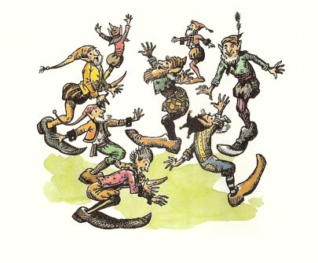
「見えるぞ、見えるぞ。」と、たしかに一本足のかしらにちがいない、ふさのついた赤い帽子の者がいいました。「わしがいったように、みんなが見えるようになれば、たがいに見えるのさ。」
「そうだ、そうだ、かしら。」とほかの者たちがいっせいに叫びました。「うまいこといったぞ。かしらよりも、さえてる者はいなぞ。それほどはっきりしたことはいえないぞ。」
「あの子は、じいさんのゆだんをついたぞ。あの女の子はな。」と一本足のかしらがつづけました。「こんどこそ、わしたちはじいさんをやっつけたぞ。」
「そうだとも。そういおうとしてたところだ。」といっせいにみんながこたえました。「かしらは、これから、ずっとずっと強くなるぞ。その調子だ。その調子だ。」
「でも、あの人たちは、よくもあなたのことをあんなふうに話せるもんですね。」とルーシィ。「きのうは、まるであなたのことをおそれてたみたいだったのです。あなたがきいていらっしゃることを、知らないのですか？」
「そこが、あののうなしたちのおかしなところの一つだよ。」と魔法つかい。「あの者たちは、たった今、このわたしがなんでも支配し、なんでもきき、えらいおそろしい人だというかと思うと、その舌の根のかわかないうちに、赤んぼうでも見ぬけるようなあまいうそに、このわたしがひっかかるように思うのだ。まったく！」
「あの人たちを、もとの形にかえしてあげなければいけないでしょうか？」ルーシィは、そうたずねました。「ああ、わたしは、今のままにしておいても、べつに不親切でないだろうと思うんです。ほんとうにあの人たちは、気にかけているでしょうか？まるでうれしそうじゃありませんか。ほら、あのとびはねてるありさまを見てごらんなさいな。以前は、どんなふうだったんですか？」
「ふつうの小人だった。あなたがかたがナルニアで会うような、あんなりっぱな小人じゃない。」
「そのもとの形にかえしては、かえってかわいそうだと思いますわ。」とルーシィがいいました。「あんなにゆかいなんですもの。すてきだといってもいいくらいだわ。そのことをわたしがあの人たちにいったら、いくらかちがってくると思いますか？」
「ちがうと思うね。そのことをうまくあの者たちの頭にたたきこめれば、な。」
「いっしょに来て、やっていただけますか？」
「いやいや、それは、わたしぬきで、あなたがやったほうがずっとうまくいく。」
「ごちそうをどうもありがとうございました。」ルーシィはお礼をのべて、すぐ部屋を出ました。けさあれほどびくびくものだった階段をかけおりて、階段の下にいたエドマンドにぶつかりました。ほかの仲間たちも、みんなエドマンドと待っていました。ルーシィは今、その人たちの心配そうな顔を見て、どれほど長いこと、この人たちのことを忘れていたかを思いだし、心がきりきりと痛みました。
「大丈夫よ。」とルーシィは叫びました。「万事うまくいったわ。魔法つかいはいい人よ。それに、あの人、アスランにも会ったわ。」
こういってしまうと、ルーシィは、みんなのあいだから風のようにぬけて、庭へ出ていきました。その地面は、ぴょんぴょんとぶのでふるえ、大気は、一本足たちのどなり声でがんがんしていました。その音と声は、一本足たちがルーシィを見つけて、いちだんと高くなりました。
「あの子が来た。あの子が来た。」とみんながわめきました。「女の子に、万歳だ、万歳だ。あの子がじいさんを、うまくへこました。やってくれた。」
「なんといっても、ざんねんだ。」と一本足のかしらがいいました。「わたしたちが、むかしこんなにみにくくなかったころのすがたを見せてあげることができないでな。とてもそのちがいはわかるまい。それはほんとうだ。つまり、いまはおそろしくみにくいことは、まちがいでないぞ。あんたをだますつもりはない。」
「おお、そうなんだ。かしら、おいらはみんなそうなんだ。」ほかの者たちはみな、こうどなって、まりのように、はずみました。「かしらがいった。かしらがそういった。」
「でもわたしは、ちっともみにくいなんて思いませんわ。」ルーシィが、じぶんの声をきかせようと、大声でどなりました。「あなたがたは、とてもすてきな様子に見えますよ。」
「きけ、女の子のいうことをきけ。」一本足たちがいいました。「このじょうちゃんのいうことは、ほんとだ。おいらは、とてもすてきに見えるんだ。これ以上きれいに思えないくらいだとさ。」のうなしたちは、なんのおどろく様子もなくこういい、じぶんたちの意見ががらりと変わったことにちっとも気がつかないようでした。
「女の子のいうのは、」と一本足のかしらがいいました。「わしたちが、みにくくなる前はとてもすてきに見えたろうというんだ。」
「かしらのいうことは、ほんとだ。ほんとだとも。」といっせいにみんながいいました。「そう女の子がいったんだ。そういうのを、おいらはみんなきいたぞ。」
「そうはいわなかったわ。」とルーシィが声をはりあげました。「あなたがたは、いま、とてもすてきだ、といったのよ。」
「そういった。そういったぞ。」と一本足のかしらがいいました。「前は、わしたちがとてもすてきだったとな。」
「きけ、ふたりのことばを。きけ、ふたつとも。」一本足たちはいいました。「ふたりで一つだ。いつもほんとだ。これ以上いいことはいえないぞ。」
「でも、ふたりともまるで反対のことをいってるのよ。」とルーシィはいらいらして足ぶみをしました。
「そうとも、ふたりとも、たしかだとも。」一本足たちはいいました。「反対ほどいいものはない。その調子、ふたりとも、がんばれ。」
「あなたがたの調子では、こっち気がおかしくなっちゃうわ。」とルーシィが、もうあきらめました。けれども一本足たちは、すっかり満足した様子でした。ですからルーシィは、こんなおしゃべりも全体からみれば、わるくはなかったのだということにしました。
そしてその晩、みんなが寝にいくまでに、この一本足を、もっと満足させるような出来事がおこりました。カスピアンとほかのナルニア人たちは、朝びらき丸に残っているラインスやそのほかの者たちが、いまやひどく気をもみだしてきているので、こちらの知らせを一刻も早くつたえようと、できるだけいそいで海岸へひきもどりました。そして、もちろん、一本足たちも、それについて、まりのようにはずみながら、おたがいに大声で、そうだそうだといいながら、出かけたのですが、あまりうるさいので、ユースチスが、「魔法つかいは、この人たちを見えなくするかわりに、きこえないものにすればいいと思うんだ。」といいました。（もちろんユースチスは、すぐ、いわなければよかったと思いました。なにしろ、じぶんがどんなに口をすっぱくしても、きこえないものとはどんなものか、一本足たちをほんとうにわからせたように思えませんでしたし、とくにユースチスをまいらせたのは、一本足たちがさいごにこういったからです。「よう、この子は、かしらのように、きちんとはできない。でもお若いの、おまえさんもおぼえるさ。かしらのいうことをきいてみろ。もののいいかたをおしえてくれるぞ。手本にするといいぞ。」）一同が海岸についた時、リーピチープに、すばらしい考えがひらめきました。リーピチープはじぶんの小さな皮ばり舟をおろしてもらい、それに乗って、あたりをさかんにこぎまわりましたので、とうとう一本足たちがすっかりそれに気もちをひかれてしまいました。リーピチープはその時、舟のなかに立って、こういいました。「えらくてかしこい一本足の方がた。方がたには、このような舟はいらないでしよう。おひとりずつ、そのかわりをする足をおもちですからな。水の上をできるだけかるくとんでごらんなさい。どうなるでしょうなあ。」
一本足のかしらはしりごみして、ほかの者たちに、水につかるとぬれるぞと注意しました。けれども、のうなしたちの若いほうのひとりふたりが、すぐさまやってみようとしました。すると、さらに五、六人が、それにつられて出て、とうとう全部がおなじことをはじめました。それがすっかりうまくいったのです。一本足の大足は、天然自然のいかだか舟のように働きました。そしてリーピチープが、かんたんなかいの使いかたを教えると、のうなしあんよたちは、たちまち入江のなかを、朝びらき丸のまわりをこぎまわって、さながら、小さなカヌーのへさきにふとった小人がつったっている船団のようなありさまになりました。そして一本足たちは、たがいに競争をし、そのほうびの品には船からブドウ酒びんがおろされて、船員たちはこぞって舷側によりかかって、はらの痛くなるまで笑いこけてそれをながめました。
のうなしたちは、また、一本足という新しい名まえがすっかり気にいって、きちんといえないくせに、えらくりっぱな名だと思いこんだようでした。「つまり、おれたちは、いっぽんあんよだ。ひゃっぽあんもだ。いんもあっぽだ。これこそ、おれたちのことをいうのに、のどまででかかったことばだぞ。」けれども、一本足たちは、まもなくもとののうなしという名とごたまぜにしてしまって、さいごには、じぶんたちのことを、のうなしあんよ、とよぶことにきまりました。ですから、そののちもきっと、ずっとその名でよばれていることでしょう。
その夜、ナルニア人たちはみな、魔法つかいといっしょに二階で夕ごはんをいただきました。そしてルーシィは、もうおそろしくない今になってみると、この二階がまるでちがって見えることに気がつきました。ドアの上のふしぎな印は、あいかわらずふしぎではありますが、心あたたかくて、ゆかいな意味をもっているように見え、あのひげをつけた鏡さえも、びくっとするよりは、おかしいものに見えました。夕ごはんは、魔法の力で、めいめいのいちばんすきなのみもの食物が、めいめいに出されました。そしてごちそうのあとで、魔法つかいが、たいへんためになる、また美しい魔法をつかってくれました。おじいさんは、テーブルの上に、二枚の何も書いてない大型の羊皮紙をひろげて、ドリニアンに今までの航海の日どりをきちんとのべるようにと、たのみました。ドリニアンがのべるにつれて、大きな羊皮紙の上に、きれいであざやかな線になって、船長のいうところがことごとくあらわれ、ついに二枚それぞれのうちに、ガルマ、テレビンシア、七子島、離れ島、竜の島、焼けあと島、死水島、さらにのうなしあんよの島まで、すべて東の海つまり大東洋のすばらしい地図が、正しい大きさと正しい位置をもって、あらわされました。それは、はじめてこの海について作られた地図で、そののちに魔法でなくて書かれた地図よりはるかにすぐれていました。というのは、この地図には、町々や山々が、はじめちょっと見ると、ふつうの地図に書かれたものと同じようですが、魔法つかいがみんなに拡大鏡をかしてくれたので見ますと、それらは、ほんものをそっくり小さくしたもので、いりみなと町の城やどれい市場や町の通りが、たいへん遠いながらもひどくはっきりと、まるで望遠鏡をさかさまにして見ているように、ながめることができました。そのただ一つの欠点は、大部分の島々の海岸線がととのっていないことで、地図はただ、ドリニアンがその目でながめて来たとおりをみせていたのです。地図ができあがりますと、魔法つかいは、一枚をじぶんの手もとにとどめ、一枚をカスピアンにおくりました。それは今も、ケア・パラベルの王の諸調度室にかかっているものです。けれども魔法つかいでさえ、これからさきの東の海や陸については、何も教えることができませんでした。とはいえ、おじいさんは、およそ七年前に一せきのナルニアの船がこのあたりの海にやってきたこと、それにはレビリアン、アルゴス、マブラモーン、ループが乗りこんでいたことを教えてくれました。それで一同は、あの死水島の池に横たわっているのを見た金の男は、レスチマールだと考えました。
つぎの日に、魔法つかいはその魔法で、朝びらき丸のともをなおしてくれました。そこは海蛇にこわされたところです。またおじいさんは、役にたつ贈物を船につみこんでくれました。まことに心のこもった別れの会があって、いよいよ、昼すぎ二時ごろ、船が出ていきますと、のうなしあんよたちは、港の入口までいっしょに海上にわたってきて、さかんな万歳をととのえましたが、そのうちに、朝びらき丸は、その声のきこえないところへ進んでいきました。
12 くらやみ島
この冒険のあと、十二日のあいだ、朝びらき丸はおだやかな風をうけて、すこし東よりの南へむかいましたが、空はたいていよくはれ、大気はあたたかで、鳥かげも見ず、魚も見かけず、ただ一度だけ、右舷はるかかなたにクジラの潮ふくところをながめました。ルーシィとリーピチープとは、そのあいだずいぶんいく度もチェスを戦わせました。十三日めに、エドマンドがマストの見張り台から、右舷前方にあたって、海面から大きな黒っぽい山のようなものを見つけました。
船は航路をかえて、陸地をめがけて進みましたが、北東へむけるには風が役に立たないので、たいていはかいを使いました。夕方になっても、陸はまだ遠く、みな夜っぴて、こぎつづけました。つぎの朝は天気は上々ですが、まったくの凪でした。くらいかたまりは、ゆくてにあって、ずいぶん近く、また大きくなっていますが、あいかわらずたいへんぼんやりしているものですから、まだずっと遠くのほうだと思う者もあり、きりがかかっているだけだと思う者もありました。
その朝九時ごろ、にわかにそこに近くなっていて、そこはまったく陸ではなく、また、ふつういうようなきりがかかっているのでもないことが、だしぬけにわかりました。そこは、まっくらやみだったのです。うまくいいあらわせませんけれども、トンネルの入口をのぞこんだ場合、それが長くてくねっていますと、出口のあかりが見えません。そのありさまを想像してください。一メートルぐらいのあいだは、まぶしい白昼の光がさしているレールや枕木やじゃりが見えます。それから、たそがれがかった場所にきます。それから、突然に、といってももちろん、はっきりしたさかいの一線がひけるわけではありませんが、すっぽりと、濃いまっくらがりのなかに、それが消えてしまいます。ここがそうでした。へさきのさき一メートルのあいだ、あかるい緑と青の海のうねりが見られます。そのさきは、水面がまるで夕方おそくなったようにほのぐらく見えます。けれどもそのまたさきは、月もささず星も出ないやみ夜のかたすみに立つように、まっくらでした。
カスピアンは水夫長に、船をもどせとどなり、こぎ手たちのほかは全員が、船のへさきのほうへかけよって、へさきからながめました。けれども、いくらながめても見えるものがありません。船のうしろには、海があり太陽がありました。船のまえには、くらやみがあるばかりでした。
「このなかへつっこむか？」と、ようやくカスピアンがたずねました。
「わたしの意見としては、進むべきではありません。」とドリニアン。
「船長のおっしゃるとおりです。」と船員たちも、いく人か口をそろえていいました。
「ぼくも、そう思いますね。」とエドマンド。
ルーシィとユースチスはなにもいいませんでしたが、心のなかでは、ことの風むきが変わりそうになってきたことを、とてもうれしく思いました。けれども、その時、リーピチープのすみきった声が、おしだまった静けさを破りました。
「では、どうしていかないのですか？ どなたか、わたしにそのわけをきかせてください。」
進んで説明しようとする者がありませんので、リーピチープがことばをつづけました。「わたしが農夫やどれいと話しているのでしたら、今おっしゃったことも、臆病から出たと勘ぐりましょう。けれども、花のさかりのお若い王家すじの方々や貴族がたの一団が、やみがおそろしいからといって、しっぽをまいたなどと、ナルニアの評判にならないようにいのるばかりです。」
「とはいえ、くらがりを切りひらいて進んだとて、なんの得になるか？」とドリニアン。
「得ですと？」とリーピチープ。「得、といわれたな？船長。得ということが、腹をみたすこと、財布をみたすことの意味であれば、このさい、そのようなものはまったくないと申すほかはありません。わたしの心得るかぎりでは、そもそもなにか得をしようとて航海に出たのではなく、名誉と冒険を求めて来たのではありませんでしたか？しかも今、わたしの耳にしたことのないほどの大冒険がまちかまえている。だのに、ひっかえすとあらば、われらの名誉にうたがいのかかるところ、すくなくありますまい。」
船員たちのなかには、「名誉などとぬかしおって！」ときこえるようなつぶやきを、口のなかでもらす者もありました。しかしカスピアンは、こういいました。
「ああ、しょうのないやつだな、リーピチープ。おまえをおいてくればよかった。よし、よし、おまえがそんなふうにやるというのなら、わたしたちは、さらに進まなければなるまい。だが、ルーシィがいやだといったら、だめだぞ。いかがです？」
ルーシィは、いきたくないと思ったのですが、口に出してはっきりいったことばは、「やってみます。」というのでした。
「陛下、少なくとも、あかりの手配をなさいましょうか？」とドリニアン。
「できるかぎり、やってみるように。船長。」とカスピアン。
そこで、三この角燈が、へさきとともと、マストの上にともされました。ドリニアンは、船のなかほどに、両舷に一本ずつ、たいまつをつけよと命じました。日光のなかで、あかりはみな、白々とよわよわしく見えました。それから、下にこぎ手として残しておいた船員たちをのぞく全員が甲板によび集められ、すっかり武装した上で、剣をぬいたまま戦闘配置につけられました。ルーシィと二人の弓矢方が、弓に矢をはったまま、マストの見張り台にいました。ライネルフは、はかり綱をもって、水深をはかろうと、へさきに立ちました。リーピチープとエドマンド、ユースチスとカスピアンは、くさりかたびらに身をかためて、そのそばに立ちました。ドリニアンはかじをとりました。
「では、アスランのみ名にかけて、進め。」とカスピアンが叫びました。「ゆっくりと、しっかりと、一かきこげ。各人みな、声をださず、いつも命令をうけるように、耳をすましておけ。」
うーんとうなる声、ぎーときしむ音がして、朝びらき丸は、こぎ手のこぐにつれて、ゆっくり前へ出ていきました。マストの見張り台にのぼっているルーシィは、船がくらやみにはいったその瞬間に、世にもふしぎなありさまをながめました。へさきがすでにくらく見えなくなりながら、とものほうには、日がかがやいているのです。ルーシィは、その進むところを、まざまざと見ました。いま、まぶしくかがやいている船尾、青い海、青い空は、すべて、白日のもとにありましたのに、はや、つぎの時には、海と空はなくなり、それまでは気がつかなかった、ともの角燈が、船の長さのおわるあたりを示して見せる、ただ一つのあかりとなりました。その角燈の前で、かじにかがみこんでいるドリニアンの黒い姿を見ることができました。ルーシィのいるマストの真下の二つのたいまつは、甲板を二つの小さな輪にそめて、そのなかの剣やかぶとをきらめかせています。へさきのほうには、船首楼のほうに一つ光の輪が浮かんでいました。下のあかりから遠く、ルーシィのいる見張り台は、すぐ頭の上のマストのさきの角燈に照らされて、さびしいやみの広がりの中に浮かぶ、小さなひとりぼっちのあかるい世界のように思われました。しかもそのあかりも、よくまっ昼間のとんだ時にあかりをつけなければならない場合に感ずるように、なんだかぶきみで不自然に見えました。そのうえルーシィは、とても寒いことに気がつきました。
どのくらいくらやみの旅がつづくものか、だれにも見当がつきません。かい受けでかいがきしむ音と、かいのたてるしぶきの音のほかに、船の動いているけはいをあらわすものがありません。へさきから前方をうかがっているエドマンドは、目の前の水路に角燈のあかりがてりかえすところしか、見られません。水面は、アブラのようにとろりとしているようです。船のとっさきのきり進む力でさざなみがおこりますが、それも重く、小さく、いきおいがありません。時がたつにつれて、こぎ手のほかは、みな、寒さでふるえはじめました。
すると突然、どこからか──もうこのころは、方角がだれにもわからなくなっていることが、はっきりしていました──一つの叫び声がおこりました。それは、人間ではないものの声か、人間であっても、あまりのおそろしさに人間らしさをなくした者の声か、どっちにせよすさまじいものでした。
カスピアンが、何かいおうとしましたが、口がかさかさになって、声がでないでいますと、リーピチープのかん高い声が、この静けさのなかで、つねにもましてかん高く、ひびきわたりました。
「だれだ？ 敵であろうと、びくともせぬぞ。あなたがわれらの友であれば、あなたの敵に、おそろしさをおしえてつかわそう。」
「おねがい！」とその声が叫びました。「ご慈悲を！あなたが、またまた夢であったにしても、どうぞご慈悲をたれたまえ。どうか、船にのせてくだされ。なぐりころしてもよいから、のせてくだされ。それにしても、こんりんざい、このまま見すてて、このおそろしいところにわしを見殺しにしてくれるな。」
「どこに、いるんです？」とカスピアンが叫びました。「乗っていらっしゃい。よろこんでむかえますとも。」
すると、ふたたび、よろこびともおそれともつかぬ叫びがあがりました。それから、こちらへむけて泳いでくる者があるのが、わかりました。
「その者を救いあげる。用意！」とカスピアン。
「はい、ただちに、陛下。」と船員たちがこたえ、数人の者がロープをもって左舷の波よけにむらがり、ひとりは、たいまつをかざして波よけから下へからだをのりだしました。一つのすさまじい白い顔が、海のくらやみのなかからあらわれました。それから、よじのぼるやら、ひっぱるやらで、十何本かの好意ある手が、見知らぬ人を甲板にあげました。
エドマンドには、これほどすさまじくあれはてた顔つきの人を見たことがないと思われました。さほどの年よりとも見えませんのに、髪は、長い白髪をふりみだし、顔はやせて、ひきゆがみ、着ているものといえば、ぬれたぼろをみのまわりにたらしているばかり。けれどもなかでもひときわ気がつくのは、その目で、かっと見ひらいたその眼は、まるでまぶたがないかのように、大きく、おそろしさのあまり苦しみぬいたように、ものを見つめているのでした。その人の足が甲板をふんだ時、その人はこういいました。
「いそげ、にげろ！ 船をまわして、にげろ！こげ、こげ。こののろわれた岸べから、命のかぎりこいでにげろ！」
「おちつきなさい。」とリーピチープ。「して、その危険とは何か、わたしたちにお話しなさい。わたしたちは、にげるたちではない。」
その知らない人は、いままで気がつかなかったネズミの声に気がついて、おそろしくびくつきました。
「何はともあれ、ここからにげることですぞ。」その人は、あえぎながらいいました。「ここは、夢がほんとうになる島なのです。」
「それでは、わたしが長いあいだもとめていた島だ。」と船員のひとりがいいました。「ここへ上陸したら、いとしいナンシィと結婚してることになるんだな。」
「それじゃ、なつかしいトムが生きかえってくるのに会えるんだな。」という者もありました。
「ばかな！」と見知らぬ人は、ふんがいのあまりじだんだをふみながら、「わしがこんなところにくるはめになったのも、そんなことを考えたからだ。いっそのこと、おぼれ死ぬか、生まれてこなかったほうが、ましなくらいだ。わしのいうことをきいていたか？夢だ、わかるか、夢が生きてくる。ほんとうになる。それも、目をあけていて頭にえがく夢ではない。うなされる夢だ。」
およそ半分ほど、静まりかえりました。それから、にわかによろいの音をやかましくさせて、全員が、できるだけ早く中央ハッチをおしあいながらかけおり、いままでかいをこいだことがないように、かいにとりつきました。そしてドリニアンは、かじをぐるりとまわしましたし、水夫長はいままで命じたことのないほど急いでこぐように、命じました。なにしろ、その半分かかかって、一同が思い出した夢というのは、もう二度と眠りにつきたくないような夢でしたし、そんな夢がほんとうになるような島に上陸すると、どうなるかをさとったから、みんながいっせいに動きだしたのです。
ところがリーピチープだけは、動きませんでした。
「陛下、陛下。」とリーピチープ。「この反乱ざた、この臆病ぶりを見すごしになさるのですか？これじゃ、あわててふためくさわぎです。しっぽをまいてにげるありさまです。」
「こげ、こげ。」とカスピアンがどなりました。「力のかぎり、かいをこげ。船のむきはよろしいな、ドリニアン？いいか、リーピチープ、おまえは、すきかってなことをいうがよい。何人もたちむかえないようなことがあるのだ。」
「では、まことに幸いなことに、わたしは人ではありません。」とリーピチープが、まことにかた苦しいおじぎを一つしながら、そう答えました。
ルーシィは上のほうで、こういう話をすっかりきいていました。そしてその時、ルーシィがいくら忘れようとしても忘れられない夢の一つが、いまその夢からさめたばかりのように、まざまざとルーシィによみがえってきました。じつは、そういうことが、いまそこをあとにした、くらやみにつつまれた島に、おこることがらだったのです。その時、ルーシィは、ちょっとでも甲板におりて、エドマンドやカスピアンといっしょにいたいと思いました。けれども、いっしょになっても、なんの助けになりましょう？夢がほんとうになってくるのでしたら、エドマンドもカスピアンも、ルーシィが下へおりるころには、めいめいおそろしいものに変身しているでしょう。ルーシィは、見張り台の手すりにつかまって、じぶんを落ちつかせようとつとめました。船員たちは、できるかぎりの力をこめて、光のさすところへ船を進めようとこいでいました。もういく秒かすれば、うまくいくでしょう。でも、いま、ぬけだしてくれればいいのに、とルーシィは思いました。
かいの音がたいへんやかましくひびきますのに、船をとりまく大きな大きな静けさを破ることができません。だれもみな、耳をすまさないほうがいい、くらやみからひびいてくる音にきき耳を立てないほうがいいということは知っていました。けれども、耳をすまさないわけにはいきません。するとまもなく、だれもかれも、何かの音をききつけてしまいました。それも、ひとりひとりがちがう音でした。
「あんたはあの音がきこえる？ 大きなはさみが、シュッシュッと、むこうのほうで、あいたりとじたりするような......」とユースチスが、ライネルフにたずねました。
「しーっ！」とライネルフのほうは、「わたしには、船の両がわをはいあがってくるものの音が、きこえます。」といいました。
「そいつは、マストの上にいこうとしてるぞ。」とカスピアン。
「うへえ、ごんごんいう音がなりはじめた。なるだろうと思ってた。」とある船員がいいました。
カスピアンは、何も見ないように（とくにじぶんのうしろは見ないように）しながら、とものドリニアンのところにいきました。
「ドリニアン、」とカスピアンは、ごく低い声でいいました。「どのくらい、こぎつづけたのか？つまり、あの知らない男をひろいあげたところまで、のことだが。」
「おそらく、五分でしょうな。」とドリニアンもささやきました。「で、なぜですか？」
「もうぬけだそうとしてから、それ以上かかっているためだ。」
ドリニアンの手は、かじの上でふるえ、ひや汗が一すじ顔をつたわって流れました。カスピアンと同じ思いが、船にいる者の心をとらえていたのです。「とてもぬけだせない。ぬけだせないぞ。」とこぎ手たちがうめきました。「かじとりがまちがった。おれたちは、ぐるぐるまわりをやってるんだ。とてもとてもぬけだせない。」それまで甲板のごたごたつみあげたものの上に横になっていた見知らない男が、からだをおこして、いきなり、おそろしい悲鳴のような笑い声をたてました。
「ぬけだせない！ そうとも、もちろんのことよ。わしらはもう、ぬけだせないぞ。それなのにやつらがこのわしを、らくにいかせてくれたと考えたのは、なんたるばかだったろう。いかれるものか。けっしてわしらは、ぬけだせないぞ。」
ルーシィは見張り台のはずれに頭をもたせ、口のなかでそっといいました。「アスラン、アスラン。あなたがわたしたちを愛していてくださるなら、どうかいま、助けをあたえてください。」くらやみは、いっこうにうすれませんが、しかしルーシィは、すこし、ごくほんのすこしですが、気分がよくなったように感じはじめました。「ほんとうにはまだ、何もわたしたちに悪いことがおこってないんだわ。」とルーシィは思いました。
「見ろ！」とライネルフの声が、へさきからしわがれたまま大きくひびきました。前方に、ごくぽっちりの光が見えました。そこを見守っているうちに、そちらからはばの広い光線が一すじ、船にそそいできました。その光は、船をかこむくらやみを変えはしませんでしたが、船はまるごと、サーチライトで照らされたように、あかるく浮かびあがりました。カスピアンは、目をぱちぱちさせて、まわりをながめ、じぶんの仲間たちの顔に、荒々しく思いつめたような表情を見出しました。だれみな、同じ方向を見つめています。どの人もそのうしろに、黒々とくっきりした影をひいています。
ルーシィも光線を見つめているうちに、そのなかにある形を見つめました。はじめ、それは十字形に見え、それから飛行機のように見え、つぎには凧のように見え、やがてさいごに、つばさをはって、くるりとまいながら、ちょうど頭の上に来たのを見れば、一羽のアホウドリでした。その鳥は、マストのまわりを三度まわり、それからちょっと、へさきの竜の頭のてっぺんにとまりました。鳥は、はりのあるこころよいなき声でよびかけました。その声は、だれにもわかりませんでしたが、なにかの意味をあらわしているようでした。そのあとで、アホウドリはふたたびつばさをひろげ、まい立って、ゆっくりと頭上をめぐって、すこし右舷にむかいました。ドリニアンは、鳥がよいみちびきを示してくれることをうたがうところなく、あとについてかじを切りました。けれどもルーシィのほかには、だれひとり、その鳥がマストの上をまいながら、ルーシィに「勇気あれ、むすめよ、」とささやいたことも、その声がアスランの声で、声といっしょに、たとえようのないかんばしさが、ルーシィの顔にかかったことも、知りませんでした。
いく分かたつと、くらやみは、空にややうすくなり、やがて、心にのぞむより早く、日の光のなかにつき進み、ふたたび暖かい、青くかがやく世界に出ました。そのとたん、みんなは、なんにもこわいものはないこと、またありもしなかったことがわかりました。みな、目をしばだたき、まわりをながめました。まず船のかがやかしさにたまげました。だれもみな、船の白いところ、緑や金の部分に、あのくらやみが、おりかかすになってしがみついているにちがいないと、半ば考えていたのです。それで、まずひとりが笑い、それにつれて、ほかの者も笑いはじめました。
「わたしたちは、ずいぶんおろかなことをやったもんだ。」とライネルフがいいました。
ルーシィは、時をうつさずに甲板におりていきますと、甲板では、みんなが、新しい客をかこんでいました。その人は、長いこと、しあわせのあまり口がきけず、ただ海をながめ、日をながめ、波よけにさわり、ロープにさわるばかりで、そのしぐさは、ほんとうに目がさめているのをたしかめているようでしたが、そのうちに、涙がほろりほろりと、ほおをつたわって落ちました。
「ありがとう。」その人は、とうとう口をひらきました。「あなたがたは、わしを助けてくださった......その苦しみを、わしは話したくない。ただいまは、どうかあなたがたがどなたか、お知らせくだされ。わしは、ナルニアのテルマール人のひとりです。わしがまだしっかりしておった時は、ループ卿とよばれておりました。」
「じつは、」とカスピアンがいいました。「わたしはカスピアンです。ナルニアの王です。わたしの父の友であった、あなたや、あなたのお仲間たちをさがしに、船でまいったのです。」
ループ卿はひざまずいて、王の手にキスしました。「陛下、あなたこそ、この世でいちばんお会いしたいと思っていたおかたです。どうぞ、ご慈悲をかけてくだされ。」
「それは、なんのことですか？」とカスピアンがたずねました。
「二度とあそこへ、つれもどさないでいただきたいのです。」とループ卿はいいました。そして、とものかなたを指さしました。一同がふりかえりました。けれども、一同の見たものはただあかるい青の海と、あかるい青い空ばかりでした。くらやみ島とくらやみとは、まったく消えうせておりました。
「これは、なんと！」ループ卿が叫びました。「あなたがたは、あれをうちくだきなさった！」
「わたしたちがしたのだとは、思いませんわ。」とルーシィがいいました。
ドリニアンがいいました。「陛下、この風は南東にかなっています。あのかわいそうなこぎ手どもをよびあげて、帆をはってよろしいでしょうか？そうしましたら、手のあいた者を、ハンモックに寝かそうと思いますが。」
「そうしよう。」とカスピアン。「そしてみんなに、水わりラム酒をふるまえ。やれやれ、わたしも、昼夜ぶっとおしに眠れそうだぞ。」
こうしてその日のひるからさき、船は気もはればれと、順風をうけて南東へすべっていきました。けれども、だれひとり、いつかしらあのアホウドリがいなくなったのに、気がつきませんでした。
13 眠りつづける三人
風はなくなりはしませんでしたが、日ごとにおだやかになり、とうとう波も、かすかなさざ波となって、船は、湖の上をすべるように、ゆるやかに進みました。そして夜になるごとに、東の空は、ナルニアでは見たこともない新しい星座がのぼるのをながめました。ルーシィは、よこびとおそれとのいりまじった気もちで、いままでおそらくだれひとりこの空を見たものはあるまいと考えました。新しい星々は、大きくてあかるくて、それに夜じゅう暖かでした。たいていの者が甲板に出て眠ったり、夜おそくまで話したり、舷側にもたれてへさきにくだける波のしぶきが光を放っておどるさまをながめていました。
ある夕方、船のうしろにしずんでいく日が濃いあかね色と紫にそまり、それが広くひろがっていって、空そのものまで大きくなったように思われるほど、心をうつ美しい日暮れになりました。その時、一同は、右舷前方に陸地を見つけました。陸はゆっくりとしだいに近づき、船のうしろの夕ばえが、新しい陸地の岬や丘を、さながらもえあがっているような色にそめました。けれどもそのうちに、その海岸にそって進みますと、両方の岬が船尾の方にまわって、夕やけ空に黒々と、厚紙をきりぬいたようにくっきりと高まって見え、それから、この陸地がどんなところかを、もっとよく見ることができました。そこには高い山々がなく、ただなだらかな丘がいくつも、ふとんをかぶせたようにすそをひいてつらなっています。とても心をひくにおいが、そちらからただよってきて──ルーシィが、「ほんのりした紫色のにおい」といいますと、エドマンドは、そんなばかなことがあるかといい（ラインスもそう考えました）、カスピアンは、「ルーシィのいうことは、わかるような気がする」といいました。
一同はそれから、岬から岬へと、どこかによい港を見つけたいもので、かなり長いあいだ、船を進めていきましたが、とうとう、ある広い入江で、水深の浅いところに満足しなければなりませんでした。海上ではおだやかに見えても、もちろんよせる波が砂浜にくだけていて、一同がのぞむだけ朝びらき丸を近よせることはできませんでした。そこで浜からかなりはなれたところでいかりをおろし、ボートに乗って、水をかぶり、ころがりおりて、陸につきました。ループ卿は朝びらき丸にとどまりました。もう島というものを見たくなかったのです。一同がこの島にいるあいだじゅう、長い波のくだける音が、耳をはなれませんでした。
ボートを守るためにふたりが残され、カスピアンは、ほかの者をつれて、島のなかにはいりました。でも、探検するには時間がおそくて、夕ぐれのあかるさもまもなく消えるので、さほど遠くにはいかれませんでした。とはいえ、冒険を見つけに遠くまでいく必要はなかったのです。入江のおくにはじまる平らな谷には、道もなく、ふみ跡もなく、人の住むしるしもありませんでした。足もとは、ふむとはずむくらいいい芝生で、あちこちに低いやぶが点々と生えていて、エドマンドとルーシィは、それをヒースだと思いました。草木のことはとてもよく知っているユースチスは、そうじゃないといいましたが、たぶんユースチスのいうとおりで、ただヒースとよく似かよった品種のものだったでしょう。
海岸から、矢のとどくほどもいかないうちに、ドリニアンが「や、あれは何でしょうな？」といいました。一同は、足をとめました。
「大きな木のしげみかな？」とカスピアン。
「塔、だと思うな。」とユースチス。
「巨人かもしれないぞ。」と声を低めてエドマンドがいいました。
「何だかわかる方法は、あのなかへつき進むことです。」とリーピチープが、剣をぬいて一同の先頭に立ちました。
「建物のくずれたあとだと思うわ。」とルーシィが、かなり近よったところで、いいました。この見こみが、いちばんましなところでした。いま目にしたものは、かなり広い長四角の土地に、みがいた石をしきつめ、黒ずんだ柱でかこんだ、屋根のない場所で、そこのはしからはしまで、長いテーブルが一台すえてあり、まっかなテーブルかけがかかっていて、しき石までたれさがっていました。テーブルの両側には、手のこんだ彫りもののしてある石のいすがたくさんにならび、いすの上に絹のクッションがのせてあります。けれどもテーブルの上には、だれも見たことのない、一の王ピーターがケア・パラベルの城でさかんをきわめた時にも出されたことのない、みごとなごちそうがならんでいました。シチメンチョウやクジャクがあり、イノシシの頭とシカの腹があり、帆をはった船の形や、竜やゾウの形のパイがあり、アイスプリンと赤いイセエビとにじ色のサケがあり、ほした木の実ブドウの実、パイナップルとモモ、ザクロにメロンにトマトがありました。金銀の酒びんとかわった細工のコップもありました。くだものと酒のにおいが、この世のしあわせをうけあうように、一同のほうにただよってきました。
「まあ！」とルーシィがいいました。
一同は、物音をたてないで、だんだんテーブルに近よりました。
「でも、この宴会にまねかれてる人たちは、どこにいるんだろう？」とユースチスがたずねました。
「わたしたちが、まねかれたことになりゃしませんか、陛下。」とラインス。
「あれをごらん！」とエドマンドが鋭くいいました。一同は、その時はもう柱の列のうちがわにいて、しき石の上に立っていました。そしてエドマンドの指さす方をながめました。そちらのいすは、からっぽではありませんでした。テーブルのおくと、その両がわに、なにか、たぶん三人の人らしいものがいました。
「あれは、何でしょう？」とルーシィがごく小声でたずねました。「ビーバーが三びき、テーブルについているみたいだわ。」
「それとも、大きな鳥の巣かな。」とエドマンド。
「わたしには、ほし草づみのように見えるが......」とカスピアン。
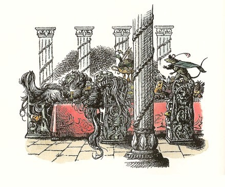
リーピチープがいきなりかけ出して、いすにとびあがり、いすからテーブルにのりうつって、テーブルの上を踊り手のようにするすると、宝石をはめた酒ずきや山づみのくだものや象牙の塩つぼのあいだをぬって走りました。そしてテーブルのはずれにある、へんな黒っぽいかたまりの前に来ました。リープは、のぞいて見たり、さわったりして、こう叫びました。
「むかってくるおそれは、ありませんぞ。」
一同が近よってきて、三つのいすにすわっているのは、よくよくそばで見なければわかりませんが、三人の人だということをたしかめました。その人たちの白髪まじりの髪が、目にかぶさってのび、顔をすっかりかくすくらいになっていましたし、そのひげがテーブルの上にひろがって、あたりにもりあがり、イバラがかきねにからまるように、皿やコップにまつわって、あげくのはてに、髪もひげもすべての毛がみんな一かたまりにまじりあい、テーブルのはずれをなだれおちて、ゆかにとどいていたのです。また、三人の頭のうしろの方も、長い髪がのびて、すわっているいすの背にかかり、人のすがた全体がかくれていました。じっさいのところ、三人の人といっても、ほとんど毛のかたまりだったのです。
「死んでいるか？」とカスピアン。
「死んでおらぬと存じます、陛下。」とリーピチープが、じぶんの前足で、毛のたばの中から、その人たちの手を一つとり出して見せました。「この手はあたたかで、脈がうっております。」
「この手も、さようで。こちらもそうです。」とドリニアン。
「そいじゃ。ただ、眠ってるんだ。」とユースチス。
「それにしても、こんなに髪が長くなるんだから、ずいぶん長い眠りだなあ。」とエドマンド。
「魔法で眠りをかけられたにちがいないわ。」とルーシィ。「わたしは、この島に上陸した瞬間から、島に魔法がみちている気がしたわ。ね、わたしたちは、その魔法を破りにここに来たんじゃないかしら？」
「やってみましょう。」とカスピアンがいって、眠っている三人のいちばん手近な者をゆすぶりはじめました。ちょっとのあいだ、みんなは、それがうまくいきそうだと思いました。その人が、あらく息をついて、むにゃむにゃと、「もう東へは行かないぞ。ナルニアへこぎもどれ。」といったからです。けれどもすぐにその人はがくんとうなだれて、前よりも深く寝いってしまいました。テーブルにむけて十センチも低く重い頭を落としていて、どうつとめても、ふたたびおこすことができません。二人めをゆりおこしてみても、同じことでした。その人は、「けもののようにくらすために生まれてきたのではないわ。チャンスのあるかぎり、東の方へ、のぼる日のむこうの国へ、いきつこう。」といって、くずれました。それから三人めの人は、「からしをくれ。」といっただけで、ぐっすり眠りこんでしまいました。
「ナルニアへこぎもどれ、だとな？」とドリニアン。
「そうだ。」とカスピアン。「あんたの考えているとおりだょ、ドリニアン。とうとうわたしたちのたずねてきたものに、たどりついたようだ。この人たちの指輪を見てごらん。そうとも、それが、この人たちのしるしだよ。これは、レビリアン卿、これはアルゴス卿、そしてこれがマブラモーン卿だ。」
「でも、この人たちがおこせませんわ。」とルーシィ「どうしたらいいでしょうね？」
「陛下がた、お話のとちゅうで失礼ではございますが、」とラインスがいいました。「それを論じますあいだに、どうしてこのごちそうをめしあがらないのですか？わたしたちはこのようなごちそうを毎日食べられるものではありません。」
「ぜったいに、いかん！」とカスピアン。
「そうですとも、そうですとも。」と船員たちがいく人か口をあわせていいました。「ここは、魔法がひどいところです。はやく船へ帰った方がよろしいでしょう。」
リーピチープがいいました。「たしかにそうですぞ。このお三人が七年のあいだ眠るようになられたのも、このごちそうを食べたからにそういない。」
「わがいのちを助けるには、それにふれてはなるまいな。」
「夕あかりが、ばかに早くうすれますね。」とライネルフ。
「船にもどりましょう。もどりましょう。」と、船員たちが口のなかでいいました。
「たしかに、人々のいうとおりだと思います。」とエドマンドがいいました。「あしたになってから、眠りつづける三人に対して、どうすればいいかをきめることができるでしょう。そしてわたしたちは、この食物を食べてはならないのだから、夜のあいだ、ここにいてもしかたがない。そこらじゅうが、魔法くさいし、おまけに危険のにおいもする。」
「わたしも、船員のみなさんについては、エドマンド王のおっしゃったご意見に、まったくさんせいです。」とリーピチープがいいました。「ただし、わたしはとなれば、朝までこのテーブルにいるつもりですぞ。」
「それはまた、どうしてだい？」とユースチスがたずねました。
「なんとなれば、これはすなわち、たいした冒険だからですし、その上、おそれのあまりわけのわからないことをそのままにしてナルニアへもどった時の無念さを思えば、どんな危険もものの数ではござらぬ。」
「ぼくもいっしょに残るよ、リープ。」とエドマンド。
「わたしも残るとも。」とカスピアン。
「わたしもよ。」とルーシィ。すると、ユースチスも、進んで残るといいました。これは、朝びらき丸に乗りこむまでは、こんなことを本で読んだことも、話にきいたことさえもなかったので、ほかの者よりもなおさらうすきみわるく思っていたのですから、こう申し出たのは、ユースチスにとってまことに勇気のいることだったのです。
「おねがいですから、陛下──」とドリニアンがいいはじめました。
「いいや、ドリニアン卿よ。」とカスピアンがいいました。「あんたのいなければならないところは、船だ。また、われら五人がらくをしてきたあいだも、あんたは一日じゅう働いていたのだからな。」このことについて、一しきり議論がありましたけれども、けっきょくは、カスピアンがじぶんの考えをとおしました。船員たちが、しだいに濃くなる夕やみのなかを海岸にもどっていった時、残った五人のうちで、おそらくリーピチープのほかは、腹がきゅうきゅういわない者はなかったでしょう。
五人は、この危険なテーブルにつく場所をえらぶのに、しばらく時間をかけました。おそらく、だれの胸にも同じ考えがやどったでしょうけれども、それを口に出してはっきりいう者はありませんでした。席をえらぶというのは、すこしやっかいなことだったのです。だれもみな、三人のおそろしく毛の生えた者のとなりへ一晩じゅうすわるのが、とてもやりきれません。その人たちが、たとえ死んでいなくても、ふつうの意味でいえば、生きているのでもありませんから。一方、テーブルの反対のはしにすわれば、夜がふけるにつれてしだいに三人が見えにくくなって、三人が動いてもわからず、二時ごろになれば、まったく見えなくなります──いや、そういうことがあってはいけません。そこで五人は、「ここらへんは、どうだろう？」とか、「もうちょっとさきがいい。」とか、「こっちがわでは、いけないかしら？」とかいいながら、テーブルのまわりをぐるぐるまわったあげく、テーブルのまんなかごろの、いささか眠りつづける人たちの方に近いところに、席をきめました。そのころはもう十時ごろで、ほとんどまっくらなっていました。見なれない新しい星座が、東の空にかがやきました。ルーシィは、これがナルニアの夜空のヒョウ座や船座やそのほかのむかしなじみの星座だったら、もっとよいのにと思いました。
五人は、航海用のマントにくるまって、じっと腰かけたまま、待っていました。はじめは、いく度か話をしようとしたのですが、そうそううまくいきません。そこで、ただじっと腰かけていました。そしてたえず、なぎさに波のくずれる音をきいていました。
何年もたったかのように思われる何時間かがすぎて、ついみんなして、うとうといねむりをしてしまい、何かの拍子に、はっとしていきなり目をさましました。星々は、眠る前に気をつけていた時とは、すっかり変わった場所にうつっていました。夜空は、やはりまっくらでしたが、ほんのすこし東の方にあかるみがさしたかと思われました。一同は寒い上に、のどがかわき、からだがこちこちになっていました。ですが、だれひとり口をきく者がありません。とうとう、ある出来事がはじまったからでした。
一同のむかいあう柱列のかなたに、なだらかな低い丘がありました。そしていま、その丘の山腹に、一つのドアがあいて、その入口にあかりがさし、だれかが、あかりをかざして出てきたのです。こちらの一同から、はっきりと見てとれるのは、このあかりだけでした。それがだんだんとゆっくりこちらに近よって、とうとう、テーブルのむかいがわに立ちました。その時には、はっきり見ることができましたが、それは背の高いうらわかい女の人で、両腕を出した、そでなしの、まっさおな長い服をきていました。頭にはなにもかぶらず、黄色い髪の毛がふさふさと背にかかっています。一同がこのおとめをながめた時、いままで美しさをまるで知らなかったように思ったくらいでした。
おとめの持ってきたあかりは、銀のロウソクたてにつけた新しいロウソクで、おとめはロウソクたてをテーブルの上におきました。夜のうちに海のほうで風があったとしても、いまは風がやんだにちがいありません。ロウソクのほのおが、窓をしめてカーテンをとざしたへやでのように、まっすぐに、ゆらぎもせずにもえていました。テーブルの上の金のうつわや銀のいれものが、そのあかりでかがやきました。
ルーシィは、この時にはじめて、それまで気がつかなかった細長いものが、テーブルの上においてあることに気がつきました。それは、はがねのように鋭いはのついた石のナイフで、いかにもむごたらしい様子の、古い時代のもののようでした。
それでもまだ、だれもひとこともいいませんでした。すると、リーピチープがまず立ちあがり、つぎにカスピアンが席を立って、みんないすから立ちあがりました。そこへ来たおとめが、りっぱな身分の人だということを感じとったからでした。
「遠くから、このアスランのテーブルにこられた旅の方々よ。」とおとめはいいました。「なぜ、食べたり飲んだりなさらないのです？」
「ひめ君よ、」とカスピアン。「わたしたちは、この食物を食べたがために、このわれらが友なる人々が、魔法の眠りにかかったものと、おそれておりました。」
「この方々は、テーブルのごちそうをめしあがったことがございません。」とおとめがいいました。
「ではおしえてくださいな。」とルーシィ。「いったい、この人たちにどんなことがあったのでしょう？」
「今から七年前のことでした。」とそのおとめが話しはじめました。「この人たちは、一せきの船でここへまいりましたが、その船の帆はぼろぼろになり、板はばらばらになりそうでした。いっしょにいく人かの水夫たちもついてきましたが、このテーブルに来ました時、ひとりが申しました。『ここはいいところだ。もう帆をはったりたたんだり、かいでこいだりしないで、ここに腰をおろして、平和に、余生をおくろうではないか。』するとふたりめの人が申しました。『いや、ここからふたたび船にのり、西の方へ、ナルニアへむかおう。ミラースが死んだかもしれない。』しかし三人めのいばった方は、とびあがって、こう申しました。『それは、ぜったいにいかん。われらは男で、テルマール人だ。けものではないぞ。われらは、冒険につぐ冒険をおかさずに、よいと思うか？また、いかになろうと、長くは生きられない身だ。のぼる日のかなたにある人の住まぬ世界をさがして、残りの日々をすごそうではないか』こうしてその人々が口あらそいをするあいだに、さいごの人は、テーブルのそこにある石のナイフをつかみました。なかまの人たちとわたりあうつもりだったのでしょう。ところが、それは、さわってはならないものだったのです。指がつかにかかるとともに、深い眠りが三人をおそいました。その魔法がとけるまでは、目がさめないでしょう。」
「この石のナイフは、何なのです？」とユースチスがたずねました。
「どなたも、これをご存じないのですか？」とおとめがいいました。
「わたし、たぶん、」とルーシィがいいました。「たぶん、そのようなものを前に見たように思います。それは、ずっとむかし、白い魔女が石舞台でアスランを殺した時に使ったものに似ていますね。」
「同じものなのです。」とおとめがいいました。「この世のつづくかぎり、あのことを記念してとっておくように、ここに持ってこられたのです。」
エドマンドは、ナイフのことをきいているしばらくのあいだ、しだいにつらい気もちになったような様子でしたが、ようやく口をきりました。
「さあ、ぼくが臆病でないところをお見せしよう。つまり、このごちそうを食べてみせるというんです。いや、失礼なことを申しあげるつもりではありません。ぼくたちは、この航海で、ずいぶんたくさんのふしぎな冒険に出会ってきた。また物事はいつも、見たとおりのものだとはかぎらない。だがいまあなたの顔を見ていますと、あなたのおっしゃることをすっかり信じないわけにはいきません。とはいえ、魔女と出会っても、やはりそうなるかもしれませんしね。いったい、あなたがぼくたちの味方だと、どうしてわかりましょう？」
「それはわかりませんわ。ただそうと信じるか、信じないかです。」とおとめがいいました。
ほんのちょっとことばがとぎれた時に、リーピチープの小さな声が、耳にはいりました。
「陛下、」とリープはカスピアンによびかけました。「おそれいりますが、あのブドウ酒びんからこのさかずきにブドウ酒をついでくださいませんでしょうか？大きすぎてわたしには持ちあがりませんから、これなるひめ君のために、かんぱいいたそうと思います。」
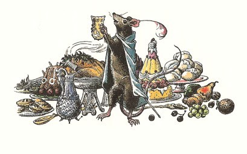
カスピアンはそのことばにしたがい、ネズミはテーブルの上に立って、その小さい前足で金のさかずきをかかげ、「いざ、ひめ君、あなたさまに、かんぱいしますぞ。」そういって、リープは酒をすすり、クジャクのひやし肉を食べはじめました。するとしばらくのうちに、だれもかも、ネズミの例にならいました。なにしろ腹ぺこで、こんなに朝はやい朝の食事にふさわしいものでないにしても、夜おそい夕食としてみれば、まことにすてきなものでした。
そのうちに、「アスランのテーブルとおっしゃったのは、どうしてですか？」とルーシィがたずねました。
「アスランのいいつけで、ここにすえつけてあるからです。」とおとめがいいました。「こんな遠くまでくる者のためですわ。ある人たちは、この島を、この世のはての島とよびますが、さらに東へいかれますので、ここが、この世のはてのはじまりなのです。」
「では、どのようにして、食べ物をもたすのですか？」と、実際家のユースチスがたずねました。
「これを食べるものたちがいて、日ごとに新しくなるのです。そのうちに、おわかりになりますわ。」
「では、眠りつづける者たちに、わたしたちはどうしてやれるでしょうか？」とカスピアンがたずねました。「この友だちが来られた世界では、」とカスピアンは、ユースチスとペベンシーのきょうだいのほうをこっくりしてみせて、「すべての人が魔法の眠りにかかっている城に、王子か王がやってくるというお話があるそうで、その話によれば、その人が眠っている王女にキスするまでは、魔法がとけないそうですが......」
「でもここでは、ちがいます。ここでは魔法をといてくださるまでは、王女にキスできないのですわ。」
「では、アスランの名にかけて、すぐさまとりかかりたいのですが、魔法をとく方法を教えてください。」とカスピアン。
「父がお教えするでしょう。」とおとめ。
「おとうさんですって！」と一同がいいました。「それは、どなたです？また、どちらにいらっしゃるんです？」
「あちらです。」とおとめは、ぐるりとうしろをむいて、山腹にひらくドアを指さしました。一同は、いま、前よりもらくに見ることができました。話をしているあいだに、星々がきえてゆき、まっ白い光のすじが、東のうすぐらい空にあらわれていたからです。
14 この世のはてのはじまり
そのドアが、しずかにふたたびひらいて、なかから出てきたのは、おとめほどしなかやではありませんが、おなじように背が高く、まっすぐな人のすがたでした。その人はあかりをもってはいませんでしたが、その人の身内からあかりがさしているようにみえました。その人がだんだん近よってくるにつれて、ルーシィは、年よりの男の人のようだと思いました。その銀色のひげは、はだしの足もとまでたれ、銀色の髪は、背からかかとまでたれていて、まとっている長いマントは、銀色のヒツジの毛でできているように見えました。その人の様子が、おだやかでありながら、おごそかなので、もう一度五人の旅のなかまたちは、席を立って、だまってむかえました。
けれども、その年よりは、旅のなかまたちに話しかけずに近よってきて、じぶんのむすめのむかいがわのテーブルのはしに立ちました。それからふたりは、目の前に両手をあげ、東の方にむきなおりました。そしてそこに立ったまま、ふたりは歌をうたいはじめました。わたしは、その歌がここに書きしるせたらどんなにいいだろうと思うのですが、そこにいあわせた人で、その歌をおぼえている者がいないのです。ルーシィはあとになって、それが高い声で、かん高い叫び声に似ていたが、とてもとても美しく、「なにかつめたいような歌声、朝まだきのような歌声」だったと、のべています。そしてふたりがうたうにつれて、うす黒い雲が、東の方からきれあがって、白い光のすじは、しだいに広がり、ついにいたるところまっ白になり、海も、銀のようにかがやきはじめました。そしてそのあとかなりたって（そのあいだも、ふたりの歌はつづきました）、東の空が、赤くなりはじめ、ついに雲がちって、海から朝日がのぼると、その水平に長くさしこむ光がテーブルの長さいっぱいに、その金器銀器にあたり、石のナイフにあたりました。
これまでに一度か二度、ナルニア人たちは、日がのぼる時、ナルニアで見るよりもこの東の海で見る方がはるかに大きくないだろうかと、考えたことがありましたが、いま、それがたしかになりました。うたがいようがありません。露にさす朝日、またテーブルにさす朝日のかがやきのはげしさは、これまでむかえた朝のあかるさをはるかにこえるものでした。そして、エドマンドがのちになっていったことばをかりれば、「あの旅ではずいぶんたくさんの出来事があり、なみなみでない胸の高なりをおぼえたが、あの時こそ、いちばん胸がふるえる思いだった」のです。それというのも、いま一同は、この世のはてのはじまるところに来ていることがわかったからです。
その時、のぼる朝日のまんなかから、ナルニア人たちの方へ飛んでくるものがあるように見えました。けれどももちろん、なにかをたしかめようにも、そちらをじっと見つめることができません。するとそのうち、大気がたくさんの声でいっぱいになりました。その声は、姫とその父がうたう歌にあわせて同じ歌を、はるかに荒々しい調子で、まただれも知らないことばで、うたっていました。それからまもなくして、その歌声の主たちが、見られるようになりました。が、なんとそれは、大きなまっ白い鳥たちでした。鳥たちは、何百、何千とむれをなし、あらゆるところにまいおりて、草の上、しき石、テーブルの上、人々の肩、手、頭にとまり、まるで重い雪が一時にふりつもったかのようになりました。雪といいましたが、あらゆるものを白くしたばかりでなく、ものの形をぼんやりさせ、かすませました。けれども、ルーシィは、じぶんの上にかぶさる鳥たちのつばさのあいまからのぞいて見て、一羽の鳥が何かをくちばしにくわえて、あの年よりの人のところにとんでいくのを見ました。くわえたものは、小さな木の実のようですが、どうももえている石炭のおきかと思われ、あまりあかるいもので、よく見さだめられませんでした。鳥は、年よりの口のなかに、それをいれました。
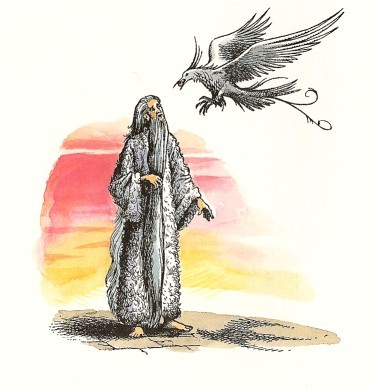
そのうちに鳥たちはうたうことをやめて、テーブルの上で大いそがしのさまでした。鳥たちがテーブルからとびたった時は、テーブルにあった食べられるもの、飲めるものはことごとくなくなっていました。鳥たちは、何千のむれとなって、食事の席をとびたって、骨や皮や貝のような、食べられもせず飲めもしないくずだけはことごとくはこびさり、朝日の方へととびさっていきました。けれども、鳥たちはもはやうたわないものですから、つばさをはばたく音が、あたり全体の大気をびりびりとふるわせるようでした。そしてテーブルは、きれいにつつかれて、からっぽになって、あとにはあいかわらず、三人のナルニアの貴族たちが、眠りつづけていました。
それからようやく、年よりの人は、旅のなかまのほうをむいて、よくぞこられたとあいさつをのべました。
カスピアンがそれに答えて、「とのよ。この三人のナルニアの貴族たちを眠りこませている魔法をとく方法を、教えてくださいませんか？」とたずねました。
「よろこんでお教えしましょう。」とその年よりの人はいいました。「この魔法を破るには、あなた方は、この世のはてに、あるいはできるかぎり、そのはての近くまで、船を進めなければならぬ。そしてそこに、あなた方のうちの、すくなくともひとりを残して、ここへ帰ってこなければならぬ。」
「すると、そのひとりは、どうなりましょうか？」とリーピチープがたずねました。
「その者は、東のいやはてにまで進まなければならず、二度とこの世界へ立ちもどることはかなわぬ。」
「それこそ、わたしのおくぞこからののぞみですぞ。」とリーピチープ。
「で、わたしたちはいま、この世のはてに近いところにおりますか？」とカスピアンがたずねました。「ここよりさらに東の方の海と陸のことは、なにかご存じでしょうか？」
「ずいぶんむかしに、見たことはありました。だが、それは、はなはだ高いところからであった。船に乗るものが知らなければならぬことがらは、とても教えることはできません。」
「では、あなたは、空をとんでいた、とおっしゃるんですか？」とユースチスが、だしぬけに口をはさみました。
「わしは、空の上、とおいとおいところにおった。」とその年よりの人は答えました。「わしは、ラマンドゥです。といってもあなた方は、おたがいに顔を見あわせて、この名をきかなかったように見えるな。いやむりもない。わしが星であった時は、あなた方のどなたもこの世に生まれぬさきに、終わっており、星々はみな、変わってしまったからなあ。」
「ひええ！」とエドマンドは、声をひめそて、「この人は、星のごいんきょさんだったのか。」
「もう、星にはもどらないのですか？」とルーシィがたずねました。
「わしは、地に休んでいる星なのですよ。むすめごよ。」とラマンドゥは答えました。「この前わしは、あなたが見てもわからぬくらいに、よぼよぼに老いぼれた時に、この島にはこばれてきた。いまは、そのころほど、老いぼれてはいない。朝ごとに一わの鳥が、太陽の谷間から火の実をわしに運んでくれて、その実を一つぶ食べるたびに、年がすこしずつ消えて若くなる。そしてわしが、きのう生まれた子どものように若がえった時に、わしはふたたび空にのぼり（ここは、地上の東のふちだからな）、ふたたび、大きな星のめぐりを歩むのだよ。」
「ぼくたちの世界では、星は、もえているガス体の大きなたまなんですよ。」とユースチス。
「いや、若いかたよ。あなた方の世界でも、それは、星の正体ではなく、成分にすぎない。それにこの世界では、あなたは、わしよりさきに、ひとりの星に出あっている。つまり、コリアキンには、会っただろうな。」
「あのかたも、もと星だったのですか？」とルーシィ。
「そうよ。まったく同じではないがな。」とラマンドゥ。「コリアキンが、のうなしたちをおさめる役についているのは、まったくの休みではないからな。あなた方は、それを、こらしめというかもしれぬ。あの星は、万事がうまくいっていたら、南方の冬の空に、まだ何千年もかがやいていられたはずだからな。」
「あのかたは、何をしたのですか？」とカスピアンがたずねました。
「わが子よ。」とラマンドゥはいいました。「そのことは、人の子の知るべきものではない。星のおかす罪は、人にかかわりのないものだ。それよりも、むだ話をして時をうつしたな。かくごはきまったか？さらに東へ進み、もはやもどれぬひとりを残して、ふたたび帰って、魔法をやぶるか？それとも西へひきかえしていくか？」
「もちろんでございますとも。」とリーピチープがいいました。「それに何の問題がありましょう？三人のとの方を魔法から助け出すことが、当然わたしどものたずねてきた目的の一部ですから。」
「わたしもそう思うもとも、リーピチープよ。」とカスピアンがいいました。「また、そうでないとしても、朝びらき丸がわれらを運んでくれるかぎり、この世のはてに近づこうとしないのであれば、失望にしずんでしまうだろう。けれどもわたしは、船員たちのことを考える。かれらは、七卿をさがす約束でついてきた。地のはてにいきつこうとしたのではない。もしわたしたちがここからさらに東へ進むなら、それはこの世のはて、東のいやはてをさがしにいくのだ。しかもそこがどれだけ遠いものか、だれも知らない。船員たちはみな、勇ましい海の男だ。だが、なかには、この航海にあきて、あのへさきをナルニアにむけることを望んでいる者もあることはわかっている。だが、船員たちに知らせ、同意してもらうのでなければ、船を進めるべきでないと思う。それにあの気の毒なループ卿もいる。卿は、うちひしがれた人間だ。」
「若いかたよ。」と星の人がいいました。「あなたがそうなさりたいと思っても、この世のはてに、いく気のない者やむりにさそわれた者をつれていくのは、むだなことだ。それでは、大きな魔法をとく力がなくなる。いく者が、どこへいくか、なぜにいくかを知っていなければならない。だが、あなたのいわれたそのうちひしがれた人間とは、どんな人なのか？」
そこでカスピアンがラマンドゥに、ループの話をしました。
「わしには、その者にいちばん必要なことがしてやれるな。」とラマンドゥがいいました。「この島にいれば、時のくぎりのない、ほしいままな眠りができる。しかも、夢のかげもかけらもはいりこまない眠りなのだ。その者をこの三人のそばにすわらせて、あなた方のもどられるまで一切を忘れさせては、どうかな？」
「ああ、そうなさればいいわ、カスピアン。それこそ、あの人がいちばんなさりたいことにきまってるわ。」とルーシィがいいました。
この時、一同は、多くの足音と声にさまたげられました。ドリニアンと船員たちが、やってきたのです。その人たちは、ラマンドゥとそのむすめのふたりを見て、びっくりして立ちどまりました。つぎに、どう見てもりっぱな人たちだとわかって、すべての者が、頭にかぶるものをぬぎました。船員のなかには、テーブルの上の皿やびんがからっぽなのを見て、残念がるものもありました。
「ドリニアン卿よ、」と王が船長にいいました。「ふたりの者を朝びらき丸につかわし、ループ卿につぎのようないいつたえをしていただきたい。さいごまであなたのもとのおなかまだった者が、ここに眠っている。夢一つない眠りゆえ、あなたもその眠りにくわわるがよい、とな。」
さっそく使いが立ちますと、カスピアンは、残りの者に、そこにすわれといい、いままでのわけをすべて話してきかせました。話しおわりますと、だれも口をきかない長いあいだがあり、それからひそひそとささやきがかわされて、やがて弓矢組の隊長が、その場に立ちあがって、こう申しました。
「陛下、われらのなかまが長いこと、おうかがいしたいと存じておりましたのは、ここでひきかえすか、ほかのところでひきかえすかはいずれにせよ、ひきかえしますさい、どうやったらふるさとにもどれるかということでありました。時々の凪はありますが、しじゅう西風と北西風がふきました。もし風が変わらないのでしたら、ふたたびナルニアの国を見るのぞみがもてるものか、知りたいと存じます。わたしたちが、帰り道じゅうかいでこぐことになれば、食料がつづくみこみはりあません。」
「それは、船に乗らぬ陸のものの申すこと。」とドリニアンがいいました。「このあたりの海では、夏のおわりにかけて、いつも西風がふく。風が変わるのは、年があらたまってからだ。西に船をやるには、たっぷり風が使えるぞ。あらゆるところからおして、どうころんでも大丈夫だとも。」
「そのとおりですわい、船長。」とガルマ島生まれの年より船員がいいました。「一月二月になると悪い天気は東からやってきまさ。ですらか陛下、出帆なさるにあたっちゃ、わっしがこの船をあずかってるのなら、この島に冬をこして、三月に帰国の途につくことにするといいたいところですわい。」
「あんた方が、ここで冬ごしをするあいだ、食物はどうするの？」とユースチスがたずねました。
「このテーブルには、」とラマンドゥ。「まい日、日ぐれになれば、王侯のごちそうがいっぱいにならぶのです。」
「そうこなくっちゃ！」といく人かの船員たちがいいました。すると、ライネルフがいいはじめました。
「陛下がた、ならびに、ここにおいでのすぐれたみなさまがた。わたしが申しのべたいことは、一つでございます。われらの船員のうち、だれひとりとして、この航海にむりやりつれ出されたものがありません。わたしどもは、進んで申し出た者ばかりです。ここには、このテーブルをまじまじと見つめ、王侯がたのごちそうのことばかり考えている者もおりますが、われらがケア・パラベルから船出した日には、大声をあげて冒険をしたいとのぞみ、この世のはてを見つけるまでは帰国はせぬとちかった者です。それにまた、はとばに立ちつくして、わたしたちといっしょにいけるなら、持ってるものを全部なげだしてもいいと思ってる者もおりました。それらの者には、騎士の帯をしめるよりは、朝びらき丸のボーイの寝床をもらうほうが、はるかにすてきだとされたものでした。ここにわたしの申すことが、よくのみこめるどうかは存じません。ですが、申すことがらは、われらのように出かけてきた者たちにとって、このまま帰国いたし、この世のはてのとば口までいったが、さらにそのさきへいく気がなかったというならば、まるであほうなこと、さながらあののうなしあんよのようにみえるでございましょう。」
船員たちは、ある者はどっと喜びの声をあげ、ある者は、けっこうなことだといいました。
「これでは、あまりうまくいきそうもないな。」とエドマンドがカスピアンにささやきました。
「半分もいやだといいたてたら、どうしたらいいでしょうね？」
「まあ、みててください。まだ切札がありますから。」とカスピアンがささやきかえしました。
「リープ、あなた、何かいうことがあるんじゃない？」とルーシィがささやきました。
「ございません。この上何を申しあげることがありましょう。」とリーピチープが、その場の人たちがきけるほどの声で、はっきりと答えました。「わたしの胸のなかは、もうきまっております。わたしは、朝びらき丸でできるかぎり東へまいります。船がいけなくなりましたら、わたしの皮ばり舟に乗ってこいでまいります。あの小舟が沈みましたら、この四つ足をつかって東へおよぎます。そしてアスランの国につかないのに、あるいは、世のはてにかかる奈落の大滝にまきこまれて、これ以上泳げない時がきましたら、せめて日のさす方に鼻づらをむけて、沈みましょう。そのときピーピチークが、ナルニアのものいうネズミの族長になりましょう。」
「そうだ、そうだ。」とひとりの船員がいいました。「あっしも同じことをいいたいね。皮ばり舟のことは、あっしが乗れねえから、ねがいさげだがね。」こういってから、その男は低い声でつけ加えました。「ネズミなんかに、さきをこされたかねえや。」
この時になって、カスピアンは、すっくと立ちあがりました。「なかまよ。諸君は、この度の目的をわかりきってはいないようだ。諸君の話すのをきくと、まるでわれらが、帽子をさし出して、諸君にものごいをしてまわっているようないいぐさではないか。そのようなことは、だんじてない。われら、このわたしも、王であられるごきょうだいとその身内のかた、また騎士リーピチープとドリニアン卿も、この世のはてに用事がある。そこに進んでいく気のある諸君のうちから、この大冒険にふさわしいとわたしが見こんだ者をえらぶのは、わたしの喜びである。よいか、いきたいといえば、いかれると、申しているのではないぞ。それがために、われらは、ドリニアン卿とラインスどのに申しつけて、諸君のうちで、戦場いちばんの勇者、もっとも腕のよい船乗り、血統のとくにすぐれたるもの、われらに忠実きわまりない家来、おこないのいさぎよい人をしんちょうにえらんで、この度のくわだてにその名をのせてくれるように命ずるのだ。」とここでしばらくことばをきり、にわかに早口になって、「アスランのたてがみにかけていうが！」と声をはりあげ、「諸君、さいごのところを見とどけるという特権を、おいそれと手にいれることができるとお考えか。すなわち、われらとともにくる者たちは、この船の名の朝びらきというにふさわしく、この世のあかつきに船出する者という名を、その子孫に伝えることだろうし、また、われらが帰国の旅についてケア・パラベルに上陸した時は、その者たちはかならず、生涯をゆたかにおくるほどの黄金なり土地なりをおくられるだろう。では、諸君。いまから島のどこへでもいくがよい。半時間のちに、わたしは、ドリニアン卿の持ってくる乗員名簿をうけとることにいたそう。」
すると、しばらくはおとなしくだまっていましたが、やがて、船員たちはおじぎをして、たいていの者は三々五々むれをつくって、しゃべりながら、めいめいあちこちに立ちさっていきました。
「では今度は、ループ卿のことだが、」とカスピアンがいいました。
けれども、テーブルのはしの方へふりむきますと、カスピアンは、すでにループが来ていることを知りました。ループは、もの音をたてず、だれにも気づかれずに、論議がおこなわれているあいだ、そこに来ていて、アルゴス卿のそばに腰かけていました。ラマンドゥのむすめが、そのいすに手をかして腰をおろさせたようにして、そばに立っていましたし、ラマンドゥも、そのうしろに立って、ループの白髪まじりの髪の上に両手をのせていました。ひるまのあかるさですのに、星の人の両手からかすかな銀色の光がさして見えました。ループのやつれはてた顔の上に、ほほえみが浮かびました。ループは、一方の手をルーシィに、もう一方の手をカスピアンにさしだしました。そしてほんのしばらくのあいだ、なにかいおうとする顔つきになりました。それから、なにかこころよい感情がわきあがったかのように、そのほほえみはあかるくくずれ、満足の長いため息が一つ、そのくちびるからもれますと、頭をがくっとたおして、眠ってしまいました。
「気の毒なおかた。でもわたしは、うれしいわ。このかた、ずいぶんおそろしいめにあってらしたにちがいないんですもの。」とルーシィがいいました。
「そのことは、考えてもいやだな。」とユースチスがいいました。
そのあいだに、カスピアンの演説は、おそらくこの島の魔法の力に助けられてでしょうが、思ったとおりのききめをあらわしているところでした。東への航海からぬけ出そうといっしんだった大多数の者が、がらりと変わって、この航海からとり残されてはたいへんと思うようになっていました。そしてもちろん、だれかひとりが、おれは航海に加えてもらいたいと頼むことにきめたとふれると、きまって、そういわない者の方が、じぶんたちのほうが少なくなったと思い、ぐあいがわるいように感ずるものです。そんなわけで、半時間もたたないうちに、いく人もの船員たちが進んで、ドリニアンとラインスのところによく報告してもらおうと「ごますり」にきました（このことばは、よく学校の生徒が使います）。そしてまもなく、いく気のないのは、三人だけになり、その三人は、いっしょうけんめいにほかの者たちをときふせて、いっしょに島に残れといっていました。それがまたたちまちに、ひとりになりました。そしてさいごには、このひとりも、じぶんだけおいていかれるのがいやになり、決心をかえました。
約束の半時間がきれて、一同は、そろってアスランのテーブルにもどり、その一方のはしにならびますと、ドリニアンとラインスが出ていって、カスピアンといっしょに腰をおろして、報告をしました。カスピアンは、さいごになってから決心をかえた男をのぞいて、全員の参加をうけいれました。参加できなかった男は、ぐすのあま太郎という男で、ほかの者が、この世のはてをさがしに出かけているあいだじゅう、星の島に残っていました。あま太郎は、いっしょにいけばよかったとつくづく思いつづけました。なにしろ、ラマンドゥやそのむすめのような人とうちとけて話のできる人間ではなく（また、星の人たちの方でも、話のかわせるあいてではありませんでした）、おまけにどっさり雨がふって、テーブルには毎ばんすばらしいごちそうがならんでも、あま太郎は、うれしいどころではありませんでした。テーブルのむこうのすみに四人の貴族が眠っているので（おまけに雨のふっているせいもあって）、そこにひとりぼっちですわっていると、ぞっとしてきた、ということでした。そしてほかの者たちが帰ってきた時、あま太郎はすっかりどうかしてしまって、帰りの船では、離れ島諸島で船をぬけ出し、カロルーメンの国へいって、そこでくらしました。そして、そこで、この世のはてにいった冒険のおどろくべき物語をしゃべったものですから、ついにはじぶんでも、その話を信じこむようになりました。これは、ある意味では、ぐすのあま太郎がそののちずっとしあわせであったといえましょう。それでもあま太郎には、ネズミだけはやりきれなかったそうです。
さてその晩、一同は、柱のならぶうちがわの大テーブルについて、さかんにのんだり食べたりしました。それでもごちそうは、あとからあとから出てきました。こうしてつぎの朝になりますと、朝びらき丸は、あの白い鳥たちが、とんできて、とびさったころに、もう一度帆をはりました。
「ひめ君、」とカスピアンは、おとめにいいました。「この魔法をうち破ったあかつきに、いま一度あなたとお話したいと思います。」すると、ラマンドゥのむすめは、カスピアン王をじっと見つめて、やさしくほほえみました。
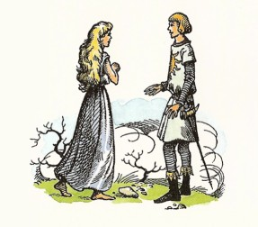
15 いやはての海のふしぎ
ラマンドゥの島をはなれてまもなく、この世のはてに進んでいるのだという気がおこりはじめました。あらゆることが、ちがっていました。その一つをあげますと、船の人たちは、あまり眠る必要がないことを知りました。もう、寝床へいきたくありませんし、あまり食べたくもなく、低い声で話すほかは、話すこともなくなりました。もう一つは、あかるさのことです。太陽の光は強すぎ、多すぎ、あかるすぎました。朝ごとにのぼってくる太陽は、ふつうの大きさの、三倍といえないまでも、二倍はありました。そして朝になると（ルーシィに、何もましてふしぎな感じをあたえたのですが）、あの大きな白い鳥たちが、だれも知らないことばを人間の声で歌に歌いながら、船の真上をむれをなして、アスランのテーブルに朝ごはんを食べに、船尾の方へとんできえたと思うと、しばらくして、まいもどってきて、東へとびさって見えなくなるのでした。
「なんて水がすんできれいなんでしょ！」とルーシィは、二日めのひるすぎに、左舷の舷側に身をのりだして、ひとりごとをいいました。
たしかに水はきれいでした。ルーシィがまず気がついたのは、くつぐらいの大きさの黒いものが、船と同じ早さでならんでついてくるのです。ルーシィもちょっとのあいだは、海面にただよっているものだと思いました。けれどもそのつぎに、料理番がまかない所から投げすてた固くなった古パンのかけらが、ただよってきました。パンのかけらは、その黒いものとぶつかりそうに見えましたが、ぶつかりません。黒いものの上を通りこしましたので、ルーシィは、それが波の上にいるはずがないことを知りました。するとその黒いものは、突然、むくむくと大きくなって、またすぐさまもとの大きさにもどりました。
するとルーシィは、どこかでこんなものを見たのを思い出しました。ただ、どこで見たのか、おぼえていません。そこでルーシィは、手を頭にあげ、顔をしかめ、舌をすこし出して、けんめいに思い出そうとしました。そして、とうとう思い出しました。そうですとも！ほら、だれでも、はれた日の汽車に乗っていて、見るものですよ。じぶんの乗っている列車のかげが、汽車と同じ速さで野原を走っているのを、見かけますね。汽車が、切り通しの崖にかかりますと、そのかげが、すぐさま、ぐっとこちらに近づいて、大きくなり、崖の草むらをちらちら走ります。それから、崖をぬけ出ますと、ほら、黒いかげは、ふたたびもとの大きさにもどって、野原をついていきます。
「あれは、こっちのかげね！ 朝びらき丸のかげだわ。」とルーシィがいいました。「船のかげが、海の底をついてくるんだわ。それが大きくなったのは、山の上にのったからね。でも、それなら、考える以上に、水がすんでいるにちがいない。まあ、すごいこと。なんひろもなんひろも深い、海の底を見てることになるのね。」
こういったとたんに、ルーシィは、いままでそうと気がつかずにしばらくのあいだながめてきた、大きな銀色のひろがりが、じつは海底の砂地だということ、また明暗さまざまなまだら模様が、波の上の光と影ではなくて、海底の高低によるものだということが、わかりました。たとえばいま、船が通っていくところは、紫がかった緑のかたまりで、そのまんなかに一つの白っぽいはば広のうねうねしたすじがはいっているところです。でもそれが海底の模様だと知ったいまは、いままでよりもよくながめることができるようになりました。するとその黒っぽい部分がほかのところより高くて、ゆっくりゆれていることがわかりました。「風にゆれる木木みたい。」とルーシィはひとりごとをいいました。「きっと木なんだわ。だからあそこは海底の森よ。」
船はその上をすぎました。するとやがて黒っぽい線がまた別の黒っぽい線とあわさりました。ルーシィは思いました。「わたしがあそこにおりてゆけば、あの線は森をとおる道だと思うわね。そしてもう一つの線とあわさるところは、十字路にちがいないわ。ああ、あそこにいけたらいいのに。あら、森がおしまいになったわ。やっぱりあの線は、道だったのよ。ほら、何もない広い砂地を通っていくのがまだ見える。色がちがってるからね。それに、そのはしのところに何かでくぎってあるわね。ぽつぽつの線だわ。きっと石ね。それに、道はばが、広くなってきたわね。」
けれども、それは広くなってきたのではなくて、海底が近づいてきたのです。船のかげがじぶんの方へにわかにせまってきたのを見て、ルーシィは、それを知りました。すると道は──たしかに道だということが、はっきりしました──いなずま形になりはじめました。たしかに、けわしい山ののぼり道です。そしてルーシィが頭をめぐらして、きたほうをふりかえると、ちょうど山の上から、くねくねした道をながめるけしきそっくりでした。日ざしがふかい水をくぐって、木のしげる谷にさしこむところまで、見えました。そのはなはだふかいところでは、あらゆるものがどんよりした緑色一つにとけていましたが、日のあたるところは、あざやかな群青色でした。
けれどもルーシィは、そちらの方ばかりふりかえってはいられませんでした。進む方のけしきがひらけてくるありさまは、もっと心をおどらせるものでした。道は、いま、山の頂上にのぼりついて、さらにまっすぐそのさきにのびいてました。小さな点々が、道の上にあちこちと動いていました。そしてこの上なくふしぎなものが、おりよく日光をいっぱいうけて──日光が水の底へとどくかぎりでのことですが──きらりと光って見えました。それは、こぶこぶにもりあがっていたり、ぎざぎざに高低があったり、真珠色だったり、象牙色だったりしていました。ルーシィは、それを真上からながめましたので、はじめのうち、なんだか見さだめることができませんでした。けれどもそのかげに気がついてみると、すべてがはっきりしました。日ざしは、ルーシィの肩ごしにおちていて、もの影が、その下の砂地におちていましたが、その形で、塔やとがり屋根や高台や丸屋根であることが、はっきりと見られました。
「まあ！ 町が。大きなお城だわ。」とルーシィはひとりごとをいいました。「だけど、どうして高い山のてっぺんに、こういうものを作ったのかしら？」
これはあとの話で、ルーシィがイギリスへもどってからずいぶんたってから、エドマンドとこの時のことを話しあった時、ふたりはそのわけをこう考えたのですが、わたしもたしかにそうだろうと思うのです。つまり、海の底へふかくいけばいくほど、暗くなり、つめたくなりますし、暗くて寒い底の方には、危険なもの、大イカと海蛇とかクラーケンとかいう怪物などがすんでいます。それで、谷底はおそろしい場所なので、海の人たちは、わたしたちが山をおそれるように谷間をおそれ、わたしたちが谷をこのむように山の上をこのむのです。つまり、暖かさと安らぎのあるのは、高地の方なのです（わたしたちは浅瀬といっています）。海のむこうみずな狩人たちや勇ましい騎士たちは、えものや冒険を求めてふかみにおりていきますが、安らぎと休息、社交と会議、わざくらべとおどりと歌を楽しむためには、高地へもどるのです。
いま船は、海の都を通りすぎ、海底はやはり高まっていました。そこは、船からほんの百メートルぐらい下のところです。道はなくなりました。船が通りすぎたのは、あまり木のない公園のような土地で、あかるい色の植木の小さなむれが、点々とちらばっている上でした。その時、ルーシィはびっくりして、思わず、きゃーと大声をたててしまいました。ルーシィは、海の人たちを見たのです。
十五人から二十人ぐらいの人たちが、そろって馬、つまりタツノオトシゴにのっていました。タツノオトシゴといっても、水族館や博物館で見るあんな小さなものではなくて、その人たちより大きいくらいでした。その人たちは、身分が高くて、人をおさめるような者たちにちがいないと、ルーシィは思いました。ルーシィは、そのなかには頭に金がかがやくのを見かけましたし、その肩から流れのなかにひるがえるエメラルドやミカン色のかざりのきれも見たのです。
その時──
「あら、じゃまな魚たちだこと！」ルーシィがこういったのは、ふとった小魚の大群が海面にすれすれにおよいできて、ルーシィと海の人たちのあいだにわってはいったからでした。けれども、それがルーシィのじゃまをしたおかげで、はるかにおもしろいものが見られました。いきなり、ルーシィがこれまで見たことのない一ぴきのいきおいのはげしい小魚が、下の方からつき進んできて、そのふとった小魚の一ぴきにぱくっとくらいついて、すばやくくわえこむと、また沈んでいきました。そのできごとを、海の人たちは馬にのったまま、一ぶしじゅう見ていて、なにかしゃべったり笑ったりしたようでした。そして、小魚をつかまえた魚がえものをもってこの人たちのところに帰ってくる前に、この人たちの手もとから、同じ魚がもう一ぴき、出かけていきました。そしてルーシィは、この人たちのむれのまんなかに、やはり馬にのっている一きわ大きな人が、その魚を放したことがわかりました。その時まで、その人が手で、あるいは小手の上に、魚をひかえていたかのようでした。
「あら、わかった！ これは、狩りの一隊なのね。タカ狩りとそっくりだわ。そうよ、それにちがいない。ちょうどわたしたちが、むかしケア・パラベルで王位についていたころ、タカを手首にのせて、馬に乗っていたように、この人たちは、手首にあのはしこい魚をのせて、馬に乗ってきたんだわ。そしていま、あれをとばせたのね──いや、およがせたというのかしら。どうやって──」
ルーシィはいいかけて、ことばをきりました。様子がかわったからでした。海の人たちが、朝びらき丸に気がついたのです。小魚のむれは、四方八方にちらばりました。海の人たちも、じぶんたちと日光のあいだにはいってきた、この大きな黒いものが何だろうとさぐるために、上へあがってきました。そして水面にすれすれになるくらい、近よってきましたので、もちろんその人たちが水中でなしに空中にいれば、ルーシィは、その人たちに話しかけることができたでしょう。男の人も女の人もいて、みないろいろな冠をかぶり、たいていは、真珠のかざりをしていました。かざりのほかに、着物をつけていないで、からだの色は、くすんだ象牙色、髪の毛は、黒っぽい紫色です。むれのまんなかの王（だれが見ても、王であることにまちがいありません）は、ルーシィの顔を威厳をこめて、はったとにらみ、手のやりをふりました。王の騎士たちも、やりをかまえました。女の人たちの顔には、おどろきの色がありました。ルーシィは、この人たちがこれまで、船も人も見たことがないのを知りました。船のくることのないこの世のはての海原で、どうして人間や大きな船を知ることができましょう？
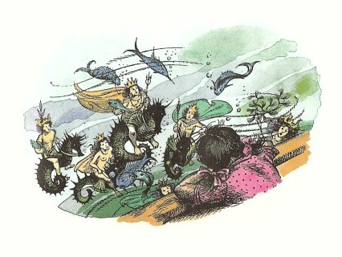
「なにをそんなにじっと見てるの？ ルー。」と、すぐそばで声がしました。
ルーシィは、見ているものに心をうばわれていましたので、その声にびくっとしました。そしてふりむくと、じぶんの腕があまり長いこと手すりの同じ場所におしつけられていたので、しびれていることがわかりました。ルーシィのそばには、ドリニアンとエドマンドがいたのです。
「ほら、」とルーシィがいいました。
ふたりはのぞきこみましたが、のぞいたばかりですぐさま、ドリニアンが、低い声でこういいました。
「すぐに、うしろをおむきください、陛下がた。そのとおり、海へ背をむけられるのですぞ。そして大事なことを話していないふりをなさるのです。」
「いったい、どうしたんです？」ルーシィが、いわれたとおりにしながら、そうたずねました。
「船乗りたちにとっては、ああいうものを見ると、ろくなことにならないのです。」とドリニアン。「わたしどもは、船乗りたちが海の女たちをすきになったり、海の下の国を恋しくなったりして、海中にとびこむことがあるのを、知っております。わたしも、ふしぎな海ではそういうことがおこるうわさをきいておりました。海の人たちを見ると、かならず運がよくありません。」
「でも、わたしたちは、あの人たちをよく知っていたものですわ。」とルーシィ「むかしケア・パラベルで、兄のピーターが一の王だったころ、王位についた式には海の人たちは水のおもてに浮かび出て、歌をうたってくれましたわ。」
「それは、ここらの人たちとちがう種族の海の人たちだったにちがいないと思う。」とエドマンドがいいました。「あの人たちは、水のなかでも、空中でもどちらにも住めたよ。だがここの人たちは、そうだとは思えない。その様子から見ると、空中に出られたら、とっくに浮きあがって、ぼくたちをおそっていたようだよ。おそろしくはげしい連中みたいに見えるな。」
「とにかく──」とドリニアンがいいはじめましたが、そのとたんに、二つの音がきこえてきました。一つは、ぽちゃん！という音でした。つづいて一つは、マストの見張り台からどなる声で、「船外に、人がおちたぞ！」という知らせでした。船じゅう、いそがしくなりました。ある者はいそいで帆げたにのぼっていきます。ある者はいそいで、かいをこぎに下におりていきます。かじとりをしていたラインスは、船からおちた者の方に船をまわして、ひきかえすように、かじの柄をむちゅうでまわしはじめました。けれどもそのころになると、だれもかも、おちたのは人ではないことを知っていました。それは、リーピチープでした。
「いまいましいネズミめ！」とドリニアンがいいました。「全員をたばにしたよりも、めんどうをおこすやつだ。こまったことをしでかすことがあれば、きまって、あいつだぞ！手かせ足かせをはめて、船底くぐりのばつをくわえて、ひげをすっかり切りおとして、あの小舟に乗せて流しまちうべきだわい。だれか、ちびのこまり者を見つけたか？」
こんなことばは、ドリニアンがほん気でリーピチープをにくんで、おこっているわけではないのです。むしろはんたいに、リープのことが大へんすきで、すっかりびっくりさせられたものですから、びっくりついでにはらをたてたのです。ちょうどおかあさんが、よその人よりもあなた方のことを、自動車のくるところへとびだしたせいで、おこるのと同じことです。いうまでもなく、ひとりもリーピチープがおぼれはしないかと心配する者はありません。リープは、水泳の名手だったからです。けれども海のなかに何があったかを知っている三人だけは、海の人たちの手にある、ぎらぎらした長いやりをおそれていました。
四、五分して、朝びらき丸がぐるりとおりかえして来ますと、だれの目にも、水のなかにリーピチープが黒い点となっているのが見えました。ネズミは、われを忘れてこうふんして何かいっているのですが、口をひらくたびに水がはいってくるので、だれにも何をいっているのかがわかりませんでした。
「あいつをだまらせないと、なにもかもばらしちゃうわい。」とドリニアンが叫びました。それをふせぐために、そちらの舷側に走りよって、じぶんでロープをおろすと、船員たちに、「こちらは大丈夫だ。まかせておいて、めいめいの持ち場にもどれ。だれの手助けもなしに、ネズミ一ぴきぐらい持ちあげられるぞ。」とどなりました。そしてリーピチープがロープをあがってきはじめますと──その毛皮がびしょぬれになって重いので、はなはだすばしこいというわけにはいきませんでしたが──ドリニアンは身をのりだして、そっとリーピチープにいいました。
「いうなよ。ひとことももらすな。」
けれども、ぽたぽたと水をもらしながら、ネズミが甲板にのぼりつきますと、海の人たちにまるで興味をもってないことが、わかりました。
「うまいなあ！」とリープは、キーキー声を出しました。「うまいぞ、うまかったなあ！」
「いったい何の話をしているのか？」とドリニアンが、むっとしていいました。「それに、そんなにからだをゆすっちゃ、こっちに水がかかるじゃないか。」
「わたしは、水がうまいって、いっているんです。」とネズミがいいました。「うまいんです。真水なんですぞ。塩けがありません。」
その時すぐには、だれも、そのことばの大切なことがまるでわかりませんでした。けれどもつづいてリーピチープが、もう一度、あの古いことわざ歌をうたってみせました。
波かぐわしくなるところ、
夢うたがうな、リーピチープ、
ひんがしのいやはての国。
それでとうとう、だれにもわけがわかりました。
「バケツを一つとってくれまいか、ライネルフ。」とドリニアンがいいました。
バケツが手渡され、ドリニアンがそれをおろして、海水をくみあげました。バケツの中で、水がガラスのように光りました。
「おそらく陛下がまず、味をごらんになりたいでしょう。」とドリニアンがカスピアンにいいました。
王は、両手でバケツを持ち、それをくちびるにあげて、水をすい、ぐっとのんでから、顔をあげました。顔つきが変わっていました。目ばかりでなく、顔じゅうのどこもかも、かがやきわたるように見えました。
「そのとおりだ。」とカスピアンがいいました。「まことにうまいぞ。これは、まさしく、かぐわしい真水だ。この水がわたしの命をうばわないとはうけあえない。だがそれで死ぬなら、むしろ死をえらぼうぞ。」
「いったい、どういうことです？」とエドマンドがたずねました。
「これは、なんと申そうか、なんにもまして、光と似ているのですよ。」とカスピアン。
「まことに、そのとおりです。」とリーピチープ。「飲むことのできる光です。もう、この世のはてとは、すぐそこにちがいありません。」
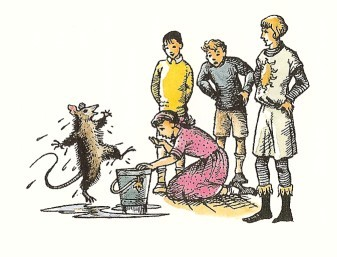
しばらくことばがとぎれました。するとルーシィが、甲板にひざまずいて、バケツから水を飲みました。
「こんなにおいしいものは、いままでのんだことがないわ。」ルーシィは、あえぐような様子でそういいました。「だけど、ああ、ずいぶん強くきくこと！もう何も食べる必要がないわね。」
そして、船にいる者が全部、ひとりずつ、水を飲みました。それから長いこと、だれも口をききませんでした。一同は、いままでよりは気分もからだも一だんとよくなったようにおぼえ、口をきく気がしないのでした。またしばらくするうちに、もう一つの結果に気づきはじめました。まえにのべましたように、ラマンドゥの島をはなれてからというもの、あかるさがどんどんふえてきて──太陽は大きすぎ（といっても暑すぎはしませんでした）、海はきれいすぎ、大気は光りすぎました。いまそのあかるさがへったわけでなく、むしろ強まったくらいですが、みんなは、そのあかるさにたえることができました。もう目をしばたたかなくても、太陽がながめられます。これほどまでにあかるいところを、人々は見たことがありませんでした。そして、甲板も帆も、人々の顔もからだも、いよいよますますあかるくなり、船のどのロープも光を放つようになりました。そしてあくる朝、のぼってきた朝日は、ふだんの五倍か六倍になっていて、人々がその方をいっしんに見つめていますと、そこからとんでくるおびただしい鳥の羽根の一本一本が見てとれました。
その日は、一日じゅう船の上で口をひらく者もありませんでしたが、晩ごはんのころになって（といっても晩ごはんはいらなくなり、水だけでじゅうぶんでした）、ドリニアンがこういいました。
「どうもわかりませんな。そよとの風もありません。帆はぐったりたれています。海は池のように波だたない。それでいて、順風をうけているように早く走っているのです。」
「わたしも、そのことを考えていた。」とカスピアン。「きっと、強い潮流にのっているにちがいない。」
「ふーん。」とエドマンド。「もしこの世に、たちきれた片すみがあって、船がそこへ近づいていくのだと、うまくないなあ。」
「つまり、」とカスピアン。「この船がいま、つまりその、そこへそそぎこまれていく、というんですか？」
「そうですもと、そうですとも。」とリーピチープが前足をたたきあわせながら、いいました。「それこそ、わたしがいつも心にえがいていたところでした。この世は、大きな丸いテーブルのようになっていて、テーブルのはしから、あらゆる海の水が、滝のようにそそぎおちていくんです。船はまっしぐらに、さかさまになって、すいこまれていく、その時、わたしたちは、この世のはての、そのはしを見とどけます。そしてぐんぐんおちて、おちて、すごい、めのくらむ早さとなって──」
「そして、いちばんそこに、なにがまちうけていると思うのかね？」とドリニアン。
「きっと、アスランの国ですとも。」とネズミが、目をかがやかせながら、いいました。「さもなければ、おそらく底なんかありませんよ。どこまでもどこまでも、おちていくだけでしょう。でも、そこがどんなところであろうと、ひと目でもこの世のはてをこえるせつなを、ながめる値打ちは、ありませんか？」
「ちょっと、まった。」とユースチス。「それはみんな、てんでたわごとだよ。この世界は丸くて、つまり、まりみたいで、テーブルみたいじゃないんだよ。」
「ぼくたちの世界では、そうだ。けど、ここでは、どうだろう？」とエドマンド。
「あなたのおっしゃるのは、」とカスピアンがたずねました。「あなた方三人は、丸い世界（つまり、まりのようにまんまるな世界）から来られた、というのですか？そのことを、わたしに話してくれませんでしたね。うらみますよ。じつは、わたしたちのあいだに、どこかに丸い世界があるといういい伝えのお話があって、わたしは前から、そのお話がすきでした。でも、ほんとうにそれがあるとは、信じなかったのです。それだのにわたしは、いつもそこにいきたいと思い、そこでくらしてみたいとあこがれてきたものですよ。ああ、そのためなら、なにをあげてもおしくありません。でも、どうして、あなた方がこの世界にはいってくることができるのに、わたしたちは、そちらの世界にはいれないのでしょうか？もしわたしに、そちらへいくチャンスがありさえすれば！まりのように丸いものの上でくらすなんて、なんというわくわくすることようなことがらでしょうね。反対がわには、さかさまになって歩いている人たちがいるのではありませんか？」
エドマンドは、頭をふりました。「なにも、そんなことなんか、ありませんよ。あなたがいらっしゃっても、丸い世界には、とくにわくわくするようなこは、一つもありはしませんとも。」
16 この世のいやはて
海の人々に気がついたのは、ドリニアンとペベンシーきょうだいのほかは、リーピチープばかりでした。リープは、海の人の王がやりをふりあげたのを見ると、それをおどかしか、手むかいと考えて、勝負をつけてやろうというので、すぐさま海へとびこんだのです。ところが海がすてきな真水なのを見つけて夢中になってしまったあまり、その注意がそれて、ふたたび海の人々のことを思い出す前に、ルーシィとドリニアンとが、ネズミをわきにつれ出し、見たもののことを口に出してはいけないと、くぎをうっておいたのです。
でも、けっきょく、心配する必要はほとんどありませんでした。このころになりますと、朝びらき丸は、だれも住んでいないと思われる海の上をこころよく進んでいたのです。ルーシィのほかには、海の人々を見た者はありませんでしたし、ルーシィにしても、ほんのちょっと見かけただけでした。つぎの日の朝のうちずっと、船は、すっかり浅くなった海を進み、海底はいちめんの海草の原でした。おひるすこし前に、ルーシィは、海草の上をおよぐ魚の大群を見ました。魚たちはみな、その草を食べ、動く時は同じ方向につれて動きます。「まるで、ヒツジのむれのようだわ。」とルーシィは考えました。するとふと、魚群のまんなかに、じぶんと同じ年ごろの女の子がひとりいるのを目にしました。静かなさびしそうな顔つきの女の子で、手にまがりくねった杖を持っています。この子はヒツジ飼い、いや魚飼いにちがいない、また魚のむれは、その牧場で飼われているのだと、ルーシィははっきり信じました。魚も女の子も、水面に近いところにいます。それで、女の子は浅い水の中でゆっくり動きながら、ルーシィは波よけの上にのりだしながら、たがいに上下に来た時、女の子が上を見あげて、ルーシィの顔をひたと見つめました。どちらも口をきかず、あっと思ううちに、女の子は船のともの方にとり残されていきました。けれどもルーシィは、その顔を忘れないでしょう。それは、海の人々のしめしたようなおどろきでもいかりでもありません。ルーシィはその子がすきになり、その子もじぶんをすいてくれたのだと信じました。たった一瞬のあいだに、ともかくふたりは友だちになったのです。そして、どこの世界ででも、おたがいに二度と会うめぐりあわせはないものと思われました。けれども、もし出あったら、ふたりはたがいに手をひろげてかけよって、だきあうでしょう。
そののちいく日もいく日も、マストからのびるつなを鳴らす風もなく、へさきにくだける波頭もたたず、一面のなめらかな海の上を、朝びらき丸はするすると東へと進みました。くる日ごとに、たつ時ごとに、光はいよいよかがやかしくなり、それでもなお、船の人々はそれをしのぶことができました。いまはみな、食べもせず、眠りもせず、そうしたいという気もなくなり、ただ海からまぶしい水をバケツにくんで飲みますが、その水が酒より強く、ふつうの水よりもどこかねっとりして、はるかにすきとおっていて、人々はめいめい口をきかずに、ぐっと何ばいか水を飲みほすのでした。すると、この船に乗りこんだ時は年よりの方だった船員のひとりふたりが、いまは日ごとに若くなっていきました。船の者はだれもかも、うきうきと心のはずむよろこびにみたされているのに、そうかといってばかにおしゃべりになったわけではありませんでした。船が進めば進むほど、人々は無口になり、やがて、ひそひそ声でものをいうようになりました。地のはての海の静けさが、一同をしっかりとらえてしまったのです。
「卿よ、」とある日カスピアンがドリニアンにいいました。「前方に見えるのは、何だろう？」
「陛下、白いものが見えます。北から南へかけて、目のとどくかぎり一帯にわたっています。」
「わたしにも、そう見える。だが何であるか、見当がつかない。」
「もしわれらが北か南のはずれにいるのでしたら、あれは氷だと申しあげるところです。ですが、そんなはずがありません。東には氷山がありえません。何にいたしましても、このさい、かいをもたせて、この潮流にさからうようにこがせた方がよろしかろうと思います。たとえどのようなものにでも、この早さでぶつかっては、かないません。」
ドリニアンのさしずどおりに、かいを使いはじめたので、船足がだんだんとおそくなりました。白いものは、近づくにつれて、ふしぎさをへらすことがありませんでした。それが陸地なら、ずいぶん変わった土地にちがいありません。なにしろ海と同じに平らで、海面と同じ高さのように見えました。船がそのよくよくそばまでいってから、ドリニアンがかじをけんめいにまわし、朝びらき丸を南にむけましたので、潮流にむかって真横になり、白いところのはずれにそってすこし南へこぎ進めました。そうするうちに、潮流はわずかに十五メートルはばしかなくて、ほかのところは池のように水が動かないという、大切なことを見つけたのです。これは、船員たちにとって、ありがたい知らせでした。なにしろ、ラマンドゥの島へ帰る航海で、強い流れにさからって、全部こいでいくのは、とてもたいへんな力仕事だ、とがっかりしていたところでしたから（これでまた、あの海のヒツジ飼いのむすめが、ずんずんともの方へ見えなくなっていたわけもわかりました。あの女の子は、この潮流の中にはいっていなかったのです。もしあの子が流れの中にいたのでしたら、船と同じ早さで、東に流されていたでしょう）。
それでもまだだれも、その白いものが何なのかが、わかりません。そのうちボートをおろして、しらべることになりました。朝びらき丸に残っている者は、ボートが白いものの中におしいっていくのを見ることができました。それから、ボートの人たちが、かん高いおどろいている調子でものをいっている声が静かな水面をわたって、はっきりときこえてきました。それからしばらくは話し声がやみましたが、ボートのへさきにいるライネルフが、水深をはかっておりました。そのあとでボートがこぎ帰ってきた時、ボートの中に白いものがいっぱいあるように見えました。だれもかも舷側にむらがって、様子をききたがりました。
「スイレンでございました、陛下。」とライネルフが、ボートのへさきに立ちあがって、大声で知らせました。
「何と申したのか？」とカスピアンが、ききかえしました。
「スイレンの花かざりでございます、陛下。」とライネルフ。「ふるさとの庭の池にあるものと同じものです。」
「ほら！」とボートのともにいたルーシィが、ぬれた両手にいっぱいその白い花びらと平たい広葉をだきかかえて、見せました。
「水深は、どうかね？ ライネルフ。」とドリニアンがたずねました。
「それがおかしいんです、船長。」とライネルフ。「まだふかいんです。三ひろ半（七メートルぐらい）はありますよ。」
「それじゃ、ほんとのスイレンのはずはないや。すくなくとも、ぼくたちのいうスイレンとちがうよ。」とユースチス。
たぶんその花は、スイレンではないのでしょうが、スイレンそっくりでした。そしてしばらく相談したあげく、潮流の方へむきをかえて、そのスイレン池、あるいは銀の海（一同はこの二つの呼名を使いましたが、いまもカスピアンの地図に記しとめられている名は、銀の海です）を東へむかって進みはじめましたが、それがこの航海でいちばんふしぎなことのはじまりになりました。船がはなれた何もない海面は、まもなく西の水平線の細い青いすじだけになってしまいました。花の白さは、ほのかな金色をどこかにまじえながら、四方八方に船をかこんでひろがり、ただ船尾のところだけは、航路がついて、スイレンをおしわけ、水尾を残しましたので、そこだけがこい緑のガラスのようにかがやくのでした。ちょっと見ますと、この東のはての海は、北氷洋にそれはよく似ていました。もし船の人たちの目がこのころまでに、タカの目のように強くなっていませんでしたら、まっ白な花々にてる日光は、ことに太陽がいちばん大きな朝早いころ、とても目があけていられなかったでしょう。そして夕方になっても、その白いかがやきが、ひるのあかるさをはるかに長くつづかせるのでした。スイレンの海はきりがないように思われました。まい日、なんキロもなん百キロもつづく花のむれから、かおりがたちのぼって、ルーシィには、そのかおりをなんといっていいか、わかりませんでした。気もちのいいにおいですが、眠くなるようなやつでも、とてもたまらないにおいでもなくて、さえざえした、はげしい、そしてさびしいにおいで、頭のなかに働いて、ひといきに山へかけのぼったり、ゾウと組みうちしたりできるような気をおこさせました。ルーシィとカスピアンとは、おたがいに、「これ以上このにおいをかいでいられないけれど、またかがないでもいられないような気がする。」といいあいました。
ちょいちょい水深をはかっていきますと、四、五日たってから、海がぐっと浅くなりました。そしてそれからは、だんだんに浅くなっていって、ある日、とうとう流れからこいでいかなければならなくなり、こいでいくと、カタツムリほどしかはかどらないことになりました。そしてまもなく、これ以上朝びらき丸が東へ進めないことが、はっきりしました。じっさい、浅瀬にのりあげないようにしていくには、たいへんなうでがいりました。
「ボートをおろせ。」とカスピアンが叫びました。「そして船尾に一同をよび集めよ。一同に話をしなければならぬ。」
「王は、どうしようというんだろう？」とユースチスがエドマンドに小声でたずねました。「目つきがおかしいよ。」
「きっとぼくらはみんな、おかしな目つきをしてるだろうよ。」とエドマンドがいいました。
エドマンドたちが船尾楼の上でカスピアンのところに来ますと、全員がまもなく、王の話をきこうとして、楼へのぼるはしごの下に集まりました。
「仲間たちよ。」とカスピアンが話しだしました。「われらはいま、われらがここに乗ってきた目的をはたしおえた。七卿はすべて、さがし出され、また騎士リーピチープが、二度とともどらぬとちかったので、諸君がラマンドゥの島にもどれば、うたがいなくレビリアン卿とアルゴス卿とマブラモーン卿とが目ざめているのを見出すだろう。ではわがドリニアン卿よ、あなたにこの船をまかせる。あなたは、できるかぎり船足を早めてナルニアに帰るがよい。とりわけ、死水島には立ちよってはならぬ。またわが代理の摂政である小人トランプキンにつげ知らせて、仲間の船員すべてに対して、約束したほうびを与えるようにいうがよい。全員はまことによく、ほうびにあたいするつとめをはたした。そしてもしわたしがナルニアに帰らぬ時は、摂政とコルネリウスどのとアナグマ松露とドリニアン卿とが相談して、ナルニアの王をえらぶように──」
「ですが、陛下。」とドリニアンが、口をはさみました。「ご退位なさるのですか？」
「わたしは、リーピチープとともに、この世のはてを見にいくつもりだ。」とカスピアンがいいました。
がくぜんとしたつぶやきの波が、船員のあいだにつたわりました。
「わたしたちは、ボートをもっていく。」とカスピアン。「みんなのほうには、このおだやかな海ではボートはいるまい。それにラマンドゥの島で新しいボートを作ればよかろう。では──」
「カスピアン、」ととつぜんにエドマンドがするどくよびかけました。「それはならない。」
「まさしくさようです。」とリーピチープ。「陛下は、そうなさってはなりません。」
「なりませんぞ、まことに。」とドリニアン。
「ならぬと？」とカスピアンは、はげしくいいかえしました。その顔つきは、ほんのしばらく、ミラースに似ていないこともありませんでした。
「はばかりながら申しあげます。」とライネルフが、下の甲板から声をあげました。「もしわれらのうちだれかが、そのようなことをいたしますと、脱走とよばれるのでございますぞ。」
「これ、ライネルフ、そなたの長いつとめをいいことに、だいぶつけあがりすぎるぞ。」
「いえ、陛下！ かれの申すは、一つもまちがいではありませんぞ。」とドリニアン。
「ええい、アスランのたてがみにかけて！」とカスピアン。「そなたたちはすべてわが家来と心得ていた。わが先生とは思っておらなかったわい。」
「ぼくはちがいます。」とエドマンドがいいました。「そのぼくが、あなたは、船を出てはならない、というのです。」
「またまた、ならぬとな。して、それは、どういうことですか？」とカスピアン。
「おそれながら、陛下、なさるべできない、と申すのです。」とリーピチープが、たいへん低くおじぎを一つして、いいました。「陛下は、ナルニアの王であらせられる。陛下は、もしおもどりにならぬ時は、国民のすべてに対する信義を、とくにトランプキンに対する信義を破ることとあいなります。わが身おひとりのことにかまけて、冒険に走るべき方ではありません。もし陛下が、この道理をおききにならないならば、正気にもどられるまで、失礼ながら、わたくしが陛下の武器をことごとくいただき、しばり申しあげるのにならって、船員すべてが手をかすことこそ、陛下にもっとも忠節をつくすことと存じます。」
「まったく、そのとおりだ。」とエドマンド。「ギリシアの英雄が、どうしても魔女のさそいの歌声をききたがった時に、船員たちがその主人にしたように、マストにしばりつけるがいい。」
カスピアンの手が、剣のつかにかかろうとした時、ルーシィがいいました。「それに、あなたは、ラマンドゥのむすめさんに、もどってくると約束なさったわ。」
カスピアンは、ひと息つきました。「なるほど、そうです。約束しましたよ。」とカスピアンはいいました。そしてほんのしばらくは、どう考えてよいかと思いかねて立っていましたが、やがて大声をはりあげて、船中によばわりました。
「よし、すきなようにするがよい！ 目的はとげられた。われらは、もどろう。ボートをまたひきあげよ。」
「陛下。」とリーピチープがいいました。「みながみなもどるのでは、ありませんぞ。まえにお話しましたように、わたしは──」
「だまれ！」とカスピアンは、雷のような声をおとしました。「もうたっぷり教わったわ。これ以上いじめるな。だれも、このネズミをだまらせる者はいないのか？」
「陛下は、約束なさいましたぞ。」とリーピチープ。「ナルニアのものいうけものによい主人であろうと。」
「ものいうけものとな。たしかにそうだ。」とカスピアン。「だが、ものいうことをやめないけものには、そうはいわんぞ。」こういうなり、カスピアンは、かんしゃくまぎれにはしごをどたばたとかけおりると、船室にはいって、バタンとドアをしめました。
けれども、ほかの者たちが、しばらくたってカスピアンのところに来た時は、そのカスピアンがすっかり変わっていることに気がつきました。顔はまっ白で、目には涙がありました。
「よくないことでした。」とカスピアンがいいました。「わたしは、みなさんに対して、やさしくふるまえたかもしれないのに、かんしゃくをおこし、いばりちらしてしまった。アスランがわたしにいってくれたのです。いや、アスランがここに来られた、というわけではありませんよ。第一、こんな小さな船室におはいりになれませんもの。この壁にある金のライオンの首が動いて、わたしに話しかけたのです。おそろしい様子でした、そのまなざしは。といっても、そのライオンがわたしに荒々しくしたというのではないのです。それははじめのうち、すこしきびしい調子でしたが......。でも、おそろしいことに変わりはありませんでした。ライオンはいいました。アスランがたしかに、いったのです。だが、ああ、わたしは、とても、それを口にできません。アスランは、いちばんひどいことを、わたしにいったんです──みなさんは、このままつづけていくように、と。リープとエドマンド、ルーシィとユースチス、あなた方が。そして、わたしだけひきかえすのだ、というのです。ひとりで、それもすぐに。それでいったい、どこにいいことがありましょう？」
「まあ、カスピアン。」とルーシィがいいました。「あなたは、わたしたちが、おそかれ早かれじぶんの世界へ戻らなけりゃならないことは、ご存じじゃありませんか。」
「そうです。」とカスピアンは、むせび泣きながら、「でも、これは早すぎます。」
「でも、あなたは、ラマンドゥの島へおもどりになれば、きっと、ずっと気分がよくなりますわ。」とルーシィ。
カスピアンは、すこし時がたつにつれて、元気がでましたが、それでもこれは、やはりどちらがわにとっても、かなしい別れで、わたしはとてもそのことをゆっくりお話する気になりません。午後の二時ごろ、じゅうぶんに食物と水をそなえて（リープたちは、食物も水もいらないと思いましたけれど）、リーピチープの皮ばり舟をのせて、ボートは朝びらき丸をはなれ、はてしないスイレンの花の海へこぎいりました。朝びらき丸は、あるかぎりの旗をかかげ、舷側にたてをならべて、ボートの出発をことほぎました。ボートのまわりにスイレンの花々にかこまれて、低い海面から朝びらき丸を見あげますと、それは堂々として大きく、家のように見えました。船がさいごに見えなくなる前に、ボートの者たちは、朝びらき丸がむきをかえて、ゆっくりと西の方へこいでいくところをながめました。ルーシィのほおに、いくつぶかの涙がつたわったとしても、それはみなさんがお考えになるほどの悲しみをおぼえたからではなかったでしょう。この銀の海のあかるさと静けさと、うずくようなかおりと、（その上どこかふつうでない感じで）さびしささえも、まことに心を強くかきたてる力がありました。
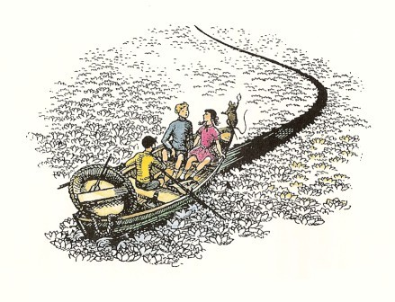
もう、オールをこぐ必要がありませんでした。潮流がボートを東へ東へと運んでいきました。だれひとり、眠ることも食べることもしませんでした。その夜ひとばんと、つぎの日一日、東へすべるようにいきましたが、三日めのあけがた、みなさんやわたしでしたら、黒メガネをかけてもまぶしくてたまらないほどの、ものすごいあかるさのなかで、ボートの人たちは、前方にふしぎなものを見ました。それは、こちらと空とのあいだを直立してしきるようになった、緑がかった黒の、ふるえながらチカチカとかがやいている壁でした。やがて朝日がのぼり、その光がさし出た時に一同は、壁ごしに、太陽を見ました。それは、すばらしいにじ色に変わりました。その時一同は、その壁というのが、じっさいのところ、横にもたてにも長い一つの波の幕、よく滝のはずれに見かけるような、一か所にたえず変わらず立ちつづける水しぶきの、波の幕と知りました。それは、およそ十メートルの高さがあるように見えました。そして潮流はすみやかにその方へ一同をひいていきました。みなさんは、一同が危険を感じていただろうと思うことでしょうが、みな、すこしもそう感じませんでした。この人たちのような状態にあったら、だれだって危険を感じるはずがないと思います。この時一同は、波の幕のうしろばかりでなく、太陽のうしろにも、なにかを見たのです。もしこの人たちの目が、いやはての海の水で強くなっていなかったら、とても太陽などは見られなかったでしょう。しかしこのころ、一同はしっかりと朝日を見つめることができ、そのさきのものも見てとることができたのです。エドマンドたちが見たもの、東の方、太陽のかなたに見たものは──一つの大山脈でした。その山脈の高いことといったら、その頂上は見えませんでしたし、見ても忘れてしまうほど上の方にありました。そしてだれひとり、その方角に空を見たおぼえはないのです。その山脈は、じっさいのところ、この世のそとにあったのにちがいないのです。というのは、その山の四分の一か、あるいは二十分の一ぐらいの山でも、雪や氷をかぶっているべきものですのに、その山々は、それほど高く見えるにもかかわらず、暖かくて緑におおわれ、森と滝がふんだんにありました。そのうちにだしぬけに、いちじんのそよ風が東のほうからふいてきました。風は、波の幕のてっぺんをゆるがして、白いあわをかざりたて、このボートのまわりのなめらかな水面にさざ波をよせました。それは、ほんのちょっとのあいだにすぎませんでしたが、その時のまに風が運んできたのものを、三人の子どもたちのだれひとりとして、そののち忘れることはないでしょう。風は、よいかおりとともに、えもいわれない楽のしらべをはこんできたのです。その音楽のことを、エドマンドもユースチスものちに、わたしに話してはくれませんでしたが、ルーシィは、「心がさけんばかりでしたわ。」とだけ、もらしてくれました。「どうしてです？あまりかなしくて？」とわたしがたずねますと、ルーシィは「かなしいって？とんでもない。」といったのです。
ボートの者たちは、だれひとり、いまこの世のはてをこえたさきに、アスランの国をのぞんでいるのだということを、うたがいませんでした。
その瞬間、かたんと音がして、ボートがのりあげました。海水は、ボートにさえ浅すぎたのです。リーピチープが、いいました。「ここから、わたしひとりでまいります。」
三人は、リープをひきとめようとさえしませんでした。いまは万事が、前からさだまっていたこと、あるいは以前におこったことかのように感じられたのです。三人はリープを助けて、その小さな皮ばり舟を水におろしました。つぎにネズミは、その剣をはずして（「もう必要がありませんからね」とリーピチープはいいました）それをスイレンの海に、ぽんと遠く投げすてました。剣は落ちたところに、スイレンをぬきんでて、つかをまっすぐに立ちました。それからリーピチープは、三人にさよならといい、別れをおしもうとしました。けれどもネズミは、よろこびにうちふるえていたのです。ルーシィはここで、はじめて、そしてこれをさいごに、いつもそうしたいと思っていたことをしてのけました。ルーシィは、両手でネズミをだきあげ、ほおずりをしたのです。それからリーピチープは、いそいでその皮ばり舟にうちのって、かいをとりあげました。潮流は舟をとらえ、舟は流れさりました。白いスイレンの花々のなかで、ネズミは黒々と見えました。けれども、波の幕には、スイレンがさいていません。そこはただなめらかな緑の幕でした。皮ばり舟は、しだいしだいに早さをまし、するすると波の幕をのぼりました。そしてほんの一瞬で、リーピチープが幕の上にのぼりついたのを、三人は見ました。がそれからすぐに、そのすがたは消えて、そののち、ネズミの騎士リーピチープを見たという者はなかったのです。けれどもわたしは、リープがちゃんとアスランの国にいきついて、いまもなおその国に生きていると、かたく信じるのです。
日がのぼるにつれて、この世のそとにある大山脈のすがたは、消えうせました。波の幕はまだ残っていましたが、そのうしろはただ青空ばかりとなりました。
子どもたちは、ボートから出て、浅い海をばしゃばしゃと歩きまわりました。波の幕のほうへではなくて、その壁を左手にして南のほうへむかいました。どうしてそうしたのかは説明できませんが、それが三人にきめられたさだめだったのです。そして、朝びらき丸の上では、ずいぶんおとなのように思ったし、またそうだったのですけれども、いまは、その反対に、子どもにもどったような気がしました。そして、スイレンのあいだをおしわけて歩きながら、手をつなぎました。三人はちっともくたびれた気がしません。水は暖かく、ずっと浅くなっていきます。そしてとうとう三人は、かわいた砂の上に出、つづいて草の上にきれいに短くそろった草の広い広い原に出ましたが、その原はスイレンの海と高さがちがわないくらいで、モグラ穴ほどのでこぼこもなく、あらゆる方に平らにひろがっていました。
そしていうまでもないことですが、木のない、まったく平らなところではいつもそうなるように、三人の目の前で、空がたれさがって草原ととけあうように思われました。けれども三人がその原をどこまでも歩いていくうちに、ほんとうにここに大空がおりてきて、大地とつながっているのだという、この上なくふしぎな感じをうけました。この大空につづく空は、何にもましてすきとおったガラスのようで、とてもあかるくきらきらとかがやいていて、そのくせ手ごたえがあり、夢ではないのです。そしてまもなく、三人はたしかに空が大地につながっているのだとわかりました。天地の合するところは、もうすぐそばにあったのです。
けれども三人と空のすそとのあいだに、緑の草原の上に、何だかとても白いものがあるのですが、いくらワシのように鋭くなった三人の目でも、白いものが何か、はっきりとは見えません。よくよくそばによって見ると、なんとそれは一ぴきの子ヒツジでした。
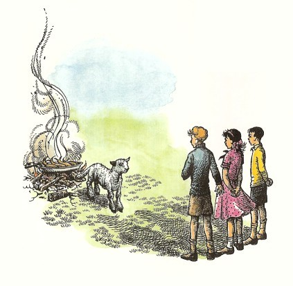
「さあ、朝ごはんをおあがりなさい。」とその子ヒツジが、やさしいやわらかい声でいいました。
その時三人がはじめて気がついたのですが、草地の上に焚火があり、それで魚をやいていたのです。三人はそこにすわって、魚を食べましたが、いく日ぶりかで、はじめておなかがすいてきたのでした。そしてそれはいままでに食べたことがないほどにおいしい味でした。
「子ヒツジさん、教えてくださいな。」とルーシィがたずねました。ここは、アスランの国へいく道ですか？」
「ここは、あなたがたの道ではありません。」と子ヒツジがいいました。「あなたがたがアスランの国へいく入口は、あなたがたのあの世界からひらかれているんです。」
「なんだって！」とエドマンド。「アスランの国へはいる道は、ぼくたちの世界からも通じているんですか？」
「わたしの国へ来る道は、あらゆる世界から通じている。」と子ヒツジはいいました。が、そういった時、雪のように白い色は、うす茶をおびた金色にかがやき、子ヒツジの大きさがにわかに変わって、アスランそのひととなって、三人を見おろすように背が高くなり、たてがみから光をまきちらしていました。
「ああ、アスラン。」とルーシィ。「わたしたちの世界からあなたの国へいく方法を、わたしたちに教えてくださいませんか？」
「いつでも教えてあげるとも。」アスランはいいました。「だが、そこにいたる道が、長いか短いかは、いえないが、一つの川を、こしていくのだということだけは、いっておこう。しかし、そのことをおそれるな。なぜならわたしは、大いなる橋のつくり手だからなのだ。さあ、おいで。大空にその入口をひらいて、あなたがたの世界に送り返してあげよう。」
「でも、アスラン、」とルーシィがたのみました。「あちらへ帰るまえに、わたしたちがもう一度ナルニアへもどってこられるのはいつなのか、どうぞ教えてくださいませんか？おねがいです。ああ、すぐにやってこられるように、おねがいよ。」
「いとしい者よ。」とアスランが、まことに静かにいいました。「あなたも、あなたのきょうだいも、ナルニアへたちもどることはないだろう。」
「ああ、アスラン！」エドマンドとルーシィとが、いっしょにうちひしがれた声をあげました。
「わが子たちよ、ふたりとも、年をとりすぎたのだ。」とアスランがいいました。「もはや、あなたがたのあの世界によくなじんで暮らしていかなければならないよ。」
「かんじんなのは、ナルニアではありません。」とルーシィが、泣きじゃくって、「アスラン、あなたなのです。わたしたちは、あの世界であなたには会えませんもの。あなたに会えないで、どうして暮らしていかれましょう？」
「それでも、あなたは、わたしに会うよ。むすめよ。」とアスラン。
「あなたが？ あなたが、あちらにもこられるのですか？」とエドマンド。
「いるとも。」とアスラン。「ただし、あちらの世界では、わたしは、ほかの名前をもっている。あなたがたは、その名でわたしを知ることをならわなければならない。そこにこそ、あなたがたがナルニアにつれてこられたほんとうのわけがあるのだ。ここですこしはわたしのことを知ってくれれば、あちらでは、もっとよくわかってくれるかもしれないからね。」
「では、ユースチスも、ここにはもうもどってこられないのですか？」とルーシィ。
「わが子よ、」とアスラン。「ほんとうにそれを知る必要はあるのかね？それよりも、さあ、天空に入口をひらこう。」すると、ほんの一瞬の間に、青い空間の壁が、（カーテンがやぶれたように）一か所きりひらかれて、大空のかなたから、すさまじい一すじの白い光が流れこみ、アスランのたてがみがさわり、ライオンの口づけをひたいにうけたと思ううちに──なんと、ケンブリッジにあるアルバータおばさんの家の寝室にいたのでした。
二つだけ、つけ加えてお話しておく必要がありましょう。一つは、カスピアンと船員たちがそろって、ぶじにラマンドゥの島に帰りついたことです。そこでは、三人の貴族たちが長い眠りからめざめていました。カスピアンは、ラマンドゥのむすめにあたるあの美しいおとめと結婚し、一同はそろって、ついにはナルニアにもどりました。おとめは、りっぱな女王となり、かずかずのすぐれた王たちの母となり、祖母となりました。もう一つは、わたしたちのこの世にもどってのことですが、まもなくだれもかも、ユースチスが、とてもよくなって、「同じ子だとは思えない」くらいだと、いいはじめたのです。もちろんアルバータおばさんはべつで、この人は、ユースチスがばかにあたりまえになり、たいくつな子になってしまった、それもきっとペベンシーきょうたいの影響にちがいない、といったものです。